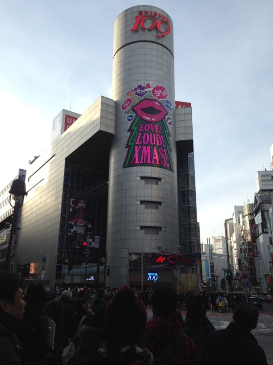
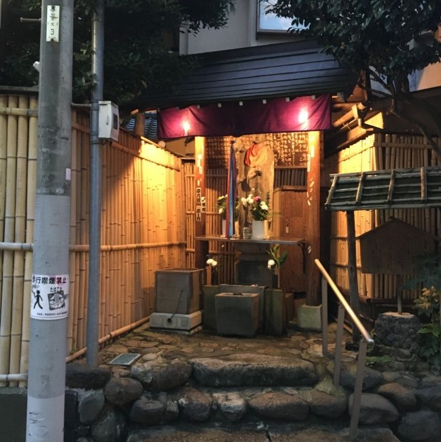

| あなたの周りに潜む東電ＯＬ予備軍: 本書は現代女性に捧げる蜘蛛の糸である | |
| 有馬珠子 | |
| arimatamako (2016) | |
あなたの周りに潜む東電ＯＬ予備軍
有馬珠子（著）
Ｔさんについて書く日が来ようとは夢にも思わなかった。
Ｔさん
。彼女からは闇の匂いがした。
孤独な女性キャリア「東電ＯＬ」に、よく似た人。
神泉駅の傍らの薄汚いアパートで売春の果てに殺された、東京電力女性総合職第一期。丸山町の闇に消えたトップエリート。
東電ＯＬは、社会的地位や肩書きとしては、誰もがうらやましがるものをすべて備えていた。
そしてそれはまた、Ｔさんも同じだったのだが。
Ｔさんと出会った十数年前、私は当時、東電ＯＬという言葉を何気なくニュースで聞いていただけだった。彼女に対する親近感もなければ同情心もない。とりわけ深い知識はなく、彼女について積極的に情報をとりにいくこともなかった。
しかし東電ＯＬは月日を経てもなお色あせず、さまざまな作家、媒体が彼女を惜しみ手放さない。論じ、分析し、祭り上げてはこき下ろす。
時を経てネパール人容疑者ゴビンダ氏の冤罪が報じられ、今私の目に、否応なしに彼女のことが突きつけられた。
女性活用推進が叫ばれ、男女共同参画が謳われ、彼女のいた時代よりも、ずっと社会は生きやすくなったはずなのに。それでもまるで東電ＯＬのコピーのような、病み続ける女性は後を絶たない。
彼女のごとく他者の価値観を成功として設定し、ラベルに振り回されて自己を失い、本当の自分と手をつなぐことができずにギリギリの精神状態で煉獄の崖っぷちをさまよう女性たち。今にも落ちそうに中を覗いては、あわてて飛びのき、やがてフラフラと吸い寄せられて滑落する。
本書は私から現代女性に捧げる蜘蛛の糸である。
何人でも構わない。どうか登ってきてほしい。
一九九七年（平成九年）渋谷区円山町にあるアパート喜寿壮の一階空室で、東京電力東京本店に勤務する渡邊泰子（当時三十九歳）の遺体が発見された。死因は絞殺。
警視庁は、不法滞在（オーバーステイ）していたネパール人のゴビンダ・プラサド・マイナリ（当時三十歳）を殺人事件の実行犯として強盗殺人容疑で逮捕した。ゴビンダは被害者・渡邊泰子が生前に売春した客の一人でもあった。逮捕されたゴビンダは捜査段階から一貫して無実を主張し、一審無罪、控訴審での逆転有罪、上告棄却、再審決定を経て、二〇一二年（平成二十四年）に無罪が確定した。
事件発生後に周囲を驚かせたのは、被害者女性は、慶應義塾大学経済学部を卒業した後、東京電力に初の女性総合職として入社したれっきとしたエリート社員（未婚）であったが、後の捜査で、退勤後は円山町付近の路上で客を勧誘し売春を行っていた二重生活が判明したからだ。警察の見立ては、売春相手の客との金銭交渉をめぐるトラブルで殺されたという筋で、捜査された。
被害者が、昼間は大企業の幹部社員、夜は路上で客をひく売春婦と、全く別の顔を持っていたことがマスコミによって取り上げられ、被害者および家族のプライバシーをめぐり、議論が喚起された。
〈背景〉
・父親が東大卒、母親は名家出身で日本女子大卒、妹は東京女子大卒、泰子は慶応女子高から慶応経済学部に進学した高学歴家族。
・女性としては初の東京電力総合職の地位に就く。生きていれば現在五十九歳。
・父親も東電社員であったが、泰子が大学二年、二十歳のときに役員まで一歩手前にして癌で病死。
・泰子は父親を敬愛し、父親も泰子を溺愛していた。幼い頃から父の期待に応える優秀な娘だったという。父と同じ東京電力に入社したときも、「父の名に恥じることのないよう頑張ります」と述べている。
〈時系列〉
一九五七年 生誕
一九七三年 十六歳・慶応女子高入学
一九七六年 十九歳・慶應義塾大学経済学部入学
一九七八年 二十歳・敬愛していた父親を癌でなくす。それがひきがねとなり拒食症に。
一九八〇年 二十三歳・東京電力入社
一九八五年 二十八歳・社内ハーバード留学選抜試験で、同期入社の東大卒のライバル女性が選ばれる。
一九八六年 二十九歳・東大卒のライバル女性渡米。これと時をおなじくして、泰子は拒食症で入院。
一九八六年 二十九歳・経済論壇への登龍門といわれる高松亀吉賞の佳作を受賞。
一九八八年 三十一歳・日本リサーチ総合研究所へ出向を命じられる。
一九八九年 三十二歳・夜のクラブホステスや風俗の仕事を始める。
一九九一年 三十四歳・渋谷界隈で体を売るフリーの売春婦になる。
一九九一年 三十四歳・出向を終えて東電に戻る。企画部経済調査室副長という要職に就く。
一九九七年 三十九歳・死亡
〈奇妙な行動〉
・「円山町の白塗り妖怪」と呼ばれる。会社を出ると渋谷１０９のトイレで着替え、売春用の厚化粧に塗り直し、長髪のかつらをかぶり、ベージュのコート・肩には革のショルダーバッグという決まったいでたちを固守。
・ホテルのベッドで排便したり路上で放尿したりするなどの奇行で、出入り禁止になったこともある。
・摂食障害を患っており、殺された当時は骨と皮だけの骨格標本のようだった。
・売春後、必ず終電電車で実家に帰宅していた。電車の車内でむさぼるようにコンビニおでんをすするなど、奇異な行動が目立った。おでんはいつもこんにゃく、しらたき等、ローカロリーなものを購入。
・経済的理由から売春していたのではない。東電管理職当時、泰子の年収は一千万以上であった。
・彼女の残した克明な売春手帳記録によると、一回千円〜二千円の記述もある。ホテル代がない外国人出稼ぎ労働者には、駐車場ですませたこともあった。金額よりも人数ノルマにこだわっていた。
・「逆両替」に固執していた。ビール中ビンの空き瓶を酒屋に持参して換金。五円、十円とたまると百円玉に、百円がたまると千円に逆両替した。
・一日四人という過酷なノルマを達成し、井之頭線神泉駅から自宅の西永福まで、毎日終電でかならず帰宅していた。翌朝は、時間通りきちんと出社していた。
・母親も妹も、そして会社もまた、泰子の売春行為を知っていた。
彼女からは闇の匂いがした。
全身を覆う闇のオーラは、「匂い」という抽象的なものではなく、すでに外見からも容易に伝わりうるものだったのだが。
彼女の服装は、いつも全身黒ずくめ。それもおしゃれなモード系ではなく、だぼだぼの黒いスポーツタイプのポリエステルスウェット上下という仕様。その下には、貧相と言ってよいほどに痩せた四肢が包まれていた。
長く伸びた黒髪に、染めた形跡はみられない。一時テレビ画面をにぎわせたオウム真理教女性信者のように、手入れもせず腰の下まで、長く長く海藻のように伸びていた。それだけならばさして珍しくもない。人目をひくのは、彼女のメイクだった。
まず、異常な厚塗り。
すでにナチュラルメイクがもてはやされていた十数年前にもかかわらず、ファンデーションがごってりと何層にも塗りつけられ、もはや地の肌が見えていない。まるでたっぷりとバタークリームを塗りつけたケーキのような質感だった。しかも地肌とファンデーションの色が合っていない。顔面だけワントーン黒く、遠目からも顔が浮いたように見えるのだ。
そしてもっとも気になるのが口紅の色だった。「なんでこの色をチョイスしたんだろう」と、首をかしげたくなるような不気味な色なのだ。紫というか、それも明るい秋のボルドー系などではなく、地味な小豆色に練乳をぶちこんだかのごとく、白濁した暗い紫。まるで死人の唇のようで、生きることを拒んでいるかに見えた。
「なにあの色、気持ち悪い。どこであんな色探してくるんだろう。探そうと思ったって、あんなのなかなか見つけられる色じゃないよね」
ストレートな性格である同僚の路子は、悪びれずにあっけらかんと、そう言い放った。
彼女
Ｔさんと出会ったのは、今から十数年前の資格予備校だった。
当時、会社で暇をもてあましていた同僚の路子は、厚生労働省の教育訓練給付制度を知り、目を輝かせてこう言った。
「受講料が二十パーセントも戻ってくるなんて、結構お得よね。ねぇ、いっしょに受けない？ ちょうど今、新部署がスタートしたばかりじゃない。私たちの仕事もラクになったしさ。これを逃したら次はいつ機会があるかわからないよ。それにさぁ、会社と自宅を行ったり来たりのありきたりの生活も人間関係も、もううんざりだし」
教育訓練給付制度とは、一定の条件を満たす雇用保険の一般被保険者又は一般被保険者であった者が、厚生労働大臣の指定する教育訓練を受講し修了した場合に、上限はあるものの、本人が教育訓練施設に支払った経費の一定割合額がハローワークから支給される制度である。
私たちが受講したのは、ベーシックな法律を学べる某資格基礎講座だった。たしかに社会人として幅広く役に立ちそうな知識を学ぶことができるし、転職にも有利といえた。
とはいえ、「絶対にこの資格を得て、この資格で開業して、この資格で食べていく！」という一本勝負の人は少なく、私たちも含めその多くは「キャリアアップに役立てられるのなら」という程度の心構えだったように思う。社会人経験があり、数年働いているけれど先は見えず仕事もマンネリ化して、「教育訓練給付制度」で安く学べるならアフター５の気分転換になるし、新しい希望も見えてくるかもしれない、そんな人達が集まる。
あるいはほかの主要資格を既に持っているけれど、箔をつけるためにこれも欲しいという、ゆったりとした目的の人も多く、全体的にラフな雰囲気の中で講義がおこなわれていた。
しかしほかのクラスは違った。公務員試験や司法書士、司法試験の講義など。
さすがに司法試験のクラスとなると客層も違い、入れ違う生徒たちも、緊張感がただよっていた。「友達でも作りながら楽しく受講」という雰囲気ではなく、ピリピリしている。
私たちの受講しているコースの前のコマは、司法試験クラスというスケジュールが多かった。私たちの講義が始まる前の休み時間、六法全書を開き、ぎりぎりまで居残り復習している人が数人いた。
その日、路子はなかなか来なかった。
私は席を確保しておこうと、路子が好んで座る後部座席に行きバッグを置いた。前列の席には、前の授業を受講していたと思われる黒ずくめの女性がまだ座っており、一心不乱に刑法の参考書を見ていた。
受講開始のチャイムが鳴ったのに気づくと、女性ははっと顔をあげて、慌てて本をかき集めて立ち去ろうとした。彼女は、高校生が部活の合宿に持って行くような大きいプーマの黒いスポーツバッグに、参考書を放り込み立ちあがった。しかし急いでいたため、スポーツバッグを後列の机にひっかけ、私のテキストをすべてさらい落とした。ばさばさと大きい音を立ててテキストは下に落ちた。
「ごめんなさい！」
女性はしゃがんで私のテキストをかき集め、ほこりを払い、手渡した。
「すみません、テキストを汚しちゃって。大切なお勉強の本なのに」
「ああ、全然。だいじょうぶですよ。べつに汚れてなんかいませんし」
私は笑顔で受け取り、そのまま普通に会話を終わらせようとした。
しかし女性はなおそこに立ち尽くし、話を続けようとした。
「本当にごめんなさい。ご本を汚したばかりか、授業前の予習までも邪魔する形になってしまって......」
そこまで言いかけたところで先生が入室し、同時に後ろの扉から路子もすべり込み、その女性との会話はそこで終わりとなった。私は落とされたテキストよりも彼女の不思議な色の厚塗りメイクが気になった。
別の日、私は彼女と再会した。
その日は土曜日で、昼休みを挟み午後の私の授業がはじまるというスケジュールだった。午前中に用事があった私は外食ランチを楽しむ余裕がなかったので、昼食を買って教室で食べることにした。
後部の席に行くと、前回と同じ席であの女性が昼食を食べていた。目が合ったので私は目礼をして、彼女の後ろの列に座ろうとしたところ、彼女から声をかけてきた。
「この前はごめんなさい。教科書は大丈夫でしたか」
「そんな、大丈夫でしたよ。本当、気にしないでください」
私はビニール袋からゴソゴソとクロワッサンサンドを取り出しながら軽く受け答えた。振り向いた女性の肩越しに手作りとおぼしき弁当が見えたので、私は会話の糸口とした。
「お弁当、ちゃんと作ってきているんですか。えらいですね」
私は笑って自分のサンドイッチを軽く持ちあげて、軽く話題をふった。もしかしたらこの人は昼食時の話し相手が欲しいのかな、と思ったからだ。
しかし私が女性に声をかけたのはそれだけが理由ではなかった。彼女の風変わりなメイクを見て、「この人はどういう人なのだろう」とふと興味がわいたからだった。彼女の雰囲気と外見だけで、すでに常人とはあきらかに違う、異質な闇の匂いを私は感じていた。
このとき私は好奇心など持たず適当にあいづちを打ち、ひとりで教科書でも読み始めれば良かったのだ。そうすれば、彼女の心のブラックホールに片足を引き込まれることもなかったし、沈淪 した自我の残滓 を見ることもなかったのだ。
彼女は自分の席に身体を戻し、弁当箱を片手に持ちながら、ゆっくりと振り返った。
「お邪魔じゃなかったら、いっしょに食べてもいいですか。食べ終わるまでで結構ですから」
知っている人にとっては今更の話であるが、東電ＯＬ渡邊泰子は拒食症だった。
摂食障害の症状が始まったのは、彼女が大学生のとき。敬愛する父親を亡くしたことがきっかけだったと言われている。
佐野眞一氏のノンフィクション『東電ＯＬ症候群』（新潮社）によれば、彼女はもともと食が細かったが、その後東電に入社し、日本リサーチ総合研究所に出向した三十一歳以降は病的なまでに少食になっていた。お昼はいつも、小さな器に入ったサラダだけ、別の日はクッキー一枚だけという簡単なものだった。職場の女性がそれでたりるのかとたずねると「食べられない、太っちゃう」と答えた。夜は何を食べているのか聞くと、「刺身を二、三枚」ということだった。会社外での会議のときも、昼食はクリームパフェなどデザート系のものを食べていた。彼女がしっかりとした食事をとっている姿はほとんど見られていない。
しかし知能派の仕事をこなすにはやはり脳の糖分は必要だ。東電ＯＬの就業中の糖分摂取方法は、インスタントコーヒーをスプーン三杯と、たっぷりの砂糖をわずかなお湯で溶いてドロドロにした、トルキッシュコーヒーのような奇妙な飲み物を作り、デスクで飲んでいたという。
三年間の出向期間を終え東京に戻った彼女は、渋谷の円山町で売春を始める。一日四人の客をとるというノルマを達成し、その後は必ず終電電車で実家に帰宅していた。電車内では、コンビニおでんをむさぼるようにすする奇異な行動が目撃されている。おそらくこれが夕飯だったのだろう。おでんはいつもこんにゃく、しらたき等、ローカロリーなものばかりを頼み、店員に「つゆをたっぷりね」と注文していた。
彼女が死体で発見されたとき、その身体は骨が浮き出るほどにやせ衰えて、理科室の骨格標本のようだったという。
右記は私にとって、後づけの知識だ。
事件当時の私は、東電ＯＬが何者かも知らなかったし、彼女が拒食症だったという事実も知らなかった。ただ「すごい経歴の女性キャリアが殺害され、犯人（ホシ）をたどっていったら女性キャリアの裏の顔が明らかになった」というＴＶワイドショーの報じる情報が、なんとなく耳に入ってきた記憶がある程度だった。
さて、予備校の彼女の話に戻ろう。黒ずくめ厚塗りメイクの女性の名は、Ｔさんといった。
私たちは自己紹介を交わし、そこで私はさしたる思惑もなく彼女の和風弁当を褒めた。Ｔさんの弁当は、白米、焼き鮭、海苔、梅干し、青菜というシンプルなものだった。
「ベーシックなお弁当っていいですよね。私一人暮らしだし、自分ではお弁当って作らないから。おいしそう」
するとＴさんは黒目がちの瞳でじっと私を見つめて言った。子供のような目だった。
「おいしいかどうかって、私にはあまり関係ないんですよ。私にとって食べることというのは、義務のようなものだから。あのね、私じつは拒食症になってしまって、いっとき体重が三十キロ近くまで落ちてしまったの」
Ｔさんは少し癖のある丁寧な話し方で、いきなり自分の暗部を語った。Ｔさんはパッと目にも背が高いほうで、１６０センチ以上あった。
私は今でもときどき、Ｔさんのお弁当が鮮やかに目に蘇る。
判で押したように毎回同じお弁当。小さめの弁当箱にぎちぎちに極限まで詰めた白米。その上の海苔と、梅干しと、焼き鮭と、ほうれん草炒め。おかずは素材をふっくらとおいしく食べるために盛り付けるなどの工夫はなく、鮭は白米の上に儀式のようにぺったりと貼り付けられて横たわっていた。ほうれん草も片隅に狭くきっちりと寄せ、それらすべてを弁当箱の蓋でつぶし、押し詰めていた。
食事を楽しむためでなく、ただ生命を生かすための供物として捧げられる悲しい聖餐。ほかの人の手にかかるとおいしそうなピンク色の鮭も、Ｔさんの前では、ただただ、虚無への生け贄としてささげられた、無味な死肉としか見えなかった。
私はＴさんのいきなりの拒食症告白に驚いた。しかしそれは「拒食症だったこと」に驚いたわけではなく、一度会ったきりの赤の他人にいきなり拒食症だった過去を告白するという、彼女の無防備さに驚いたのだった。もし私が悪い人間で、口さがない噂でも流したらどうするつもりなのだろうか。
しかしどの種類の感情であれ、私が驚きを感じたことを彼女が悟ったら、それ自体に彼女は傷つくかもしれないと思い、努めて平静を装い言った。
「そうなんだ。......まぁ、生きてりゃいろいろあるよね。でも今はこうして将来に向けて勉強していて、ご飯も食べられるまでに回復しているみたいだし、きっと良いほうに進んでいるんじゃない」
彼女はゆっくりと箸を動かしながら言った。
「そうね、ありがとう。こうして勉強させてもらっている親へのお返しの意味もあるし、無理してでも食べなければいけないわよね」
「ま、無理してっていうよりもね......。私なんか、何回ダイエットにチャレンジしても成功したためしがない、根っからの食いしん坊だから。少し食欲が減ったらいいのに、とは思ったりするのよ。それに比べたら、さ」
Ｔさんはくすりと笑った。
「そうなんだ。私は食べることが楽しいっていう感覚はあまりないんです。うらやましい。食べるのが楽しみだなんて」
私は余計なお世話とは思いながらも、心配になって忠告めいたことを言ってしまった。
「今は拒食症も過食症も、めずらしいことじゃないみたいね。私の知り合いにも、営業職に配属されて頑張っていた友人がいるんだけどね、ノルマのキツさと取引先のセクハラで、やっぱり拒食症になってしまったんだって。だから日常のちょっとしたことや職場環境のストレスで誰にでも起こりうる症状なのかもしれないけど。......でもさ、あのー、おせっかいだったらごめんね。初対面の私にそんなこと告白しちゃって、大丈夫？ 世の中には偏見を持つ人もいるからさ。あまり誰にでも、おおっぴらに言わないほうがいいかもよ。普通にしてりゃ分かんないんだし」
Ｔさんは濡れたようなつぶらな瞳をあげて、また私を見た。
「私ね、もうこういうことに関しては、かえって隠さないほうがいいっていう結論に至ったんです。相手に隠し事をしているという事実で、逆にストレスを感じてしまうから。お医者様にもそう言われているし」
私は逆らわずに返答した。
「......あ、そう。経過をよく知る専門家がそう診断しているなら、そっちのほうが正解だよね。ごめんね、変なこと言って」
Ｔさんはうつろな瞳で遠くを見ながら、自分に言い聞かせるかのように語った。
「それでも油断して食べることをやめると、すぐに体重が落ちてしまうの。いっときは30 キロくらいまで落ちてしまって。そうなったら親は毎日泣いているし。だから今はしっかり自炊して、朝・昼・晩と義務化して必ず食べているの」
油断して食べ過ぎると太ってしまう、というありがちな現実を真っ向から否定するフレーズに、私は軽くめまいを感じた。
「それならいいけど。朝はパンとか食べてる？ パンって案外太るんだよ」
「ううん、全部同じメニューです。朝・昼・晩も」
私はバクバクと食べていたクロワッサンサンドを吹きそうになってしまった。
三食このメニュー。いやしかし、別に不思議なことではない。彼女もさっき言ったではないか。食べる楽しみがない、と。食べる楽しみがない人にとっては、味やメニューなど意味がないのだ。それにしてもなぜ白米、焼き鮭、海苔、梅干し、ほうれん草炒めなのだろう。私はそこが気になり聞いてみた。
「栄養がバランスよく摂れて、一番不自然に見えないメニューを選んだつもりです」
私は曖昧にうなずきながら、コンビニでクロワッサンサンドと一緒に買った、ガーリックポテトフライと、クリームドーナツと、鳥飯おにぎりを所在なくごそごそと袋から取り出した。
拒食症は主に十代〜二十代の若い女性に多く見られる病気であり、男性の発症率は女性の一割程度である。症状としては、過食や拒食あるいは嘔吐など、食事において深刻なトラブルが起こる。心身の健康が著しく害される病気だ。日本では、厚生労働省の難病に指定されている。
拒食症の原因はさまざまである。
きっかけは個々で違うが、その代表的な要因として、「美的コンプレックス」と、それにリンクする「自己評価の低さによる承認欲求」が挙げられる。
「美的コンプレックス」ならば、比較的だれにでも想像できるのではあるまいか。女性としての外見の魅力を高めたい、という欲求とプレッシャーだ。
とくに現代社会では痩せていることが賞賛される風潮が強く、痩せなくてはダメだという無言のプレッシャーにさらされがちである。思春期の強い願望と社会的なプレッシャーから、極端なダイエットに走ってしまうケースは少なくない。
当初は軽いダイエットのつもりだったものが、「痩せてきれいになった」など周囲からダイエットの成果を賞賛され、その成功体験から、さらに喜びを得ようとダイエットに拍車がかかり、エスカレートすることが多い。その結果、体重減少への熱意に異常にのめり込んでしまうのだ。体重を減らすという目標は、数値として可視化されるため、結果が明確にわかり、自分に自信を持つための手ごろな目標として設定しやすい。
当初の目標体重を達成し、他人にはすでに十分やせた外見になっていても、本人にとってはまだまだ十分ではなく、「あと○キログラム減らそう」などと、目標をエスカレートさせてしまう。やがて太ることへの恐怖や低体重へのこだわりが強迫観念化し、治療を受けて適正体重に戻すことが心理的に耐えられないなど、治療自体を拒否するケースも出てくる。
拒食症が重症化すると食欲自体が失せ、食べ物を受けつけない体となり、生命の維持が危険にさらされる。著名人では『カーペンターズ』のカレン・カーペンターがこの病気で命を落としてしまったことは、あまりにも有名だ。
拒食症の原因は、思春期に訪れる外見的な賞賛への執着として美的コンプレックスの要素を挙げたが、さらに悪いケースとして、それに特殊な家庭環境、完璧主義の性格や、脅迫観念的な心理的問題が加わり、複雑化することもある。するとダイエット熱はいっそうヒートアップし、「魅力的になるため、期待に応えるために、痩せなくてはならない」というプレッシャーが増幅してしまうのだ。
たとえば褒めてもらえない、認めてもらえないという子供は、なんとか親の関心を引こうと、必死で評価されることに勤しむ。それは勉強やスポーツで成績をあげることかもしれない。しかし、成果を上げても褒められないとストレスが蓄積し、そのダメージから摂食障害になってしまうこともある。
特に「自己評価の低い子」は、なんとか自分の価値をあげようとして、それがダイエットという手段に結びつくことも多い。今の文化では、痩せていることが綺麗・美しいと思われているため、スポーツや勉強で思うような成績が出せなかった子は、別のジャンルにおいて、少しでも痩せることでポイントを稼ごうとするのだ。
摂食障害になる人の多くが、まじめで自分に厳しく、自己評価が低いという共通点がある。また、ありのままの自分を肯定してもらった経験も乏しく、満たされない承認欲求を満たすために、過食や拒食でバランスを取ろうとしてしまうのだ。
Ｔさんも、後に会話のなかで私に語った。
「私は親の期待に応えられない駄目な娘だって、ずっと思っていたんです。親の望むものを与えられないんだって。そう思い続けていたら、ある時から食事がのどを通らなくなってしまったの。それで拒食症になって。でも痩せていくに従って、親は私のことを心配して見てくれるようになりました。私、自分も少しは愛されていたのだなって実感した。そうしたらどんどん食べられなくなって、どんどん痩せていって......。親を泣かせるまでに痩せてしまって、生理もとまって。身体もろくに動かなくなって、それで初めて、『これはどうにかしなければ』と思いました。だから親に勧められてお医者様に通い、よやくここまで回復したんです。今はこうして食べられるようにもなったし、迷惑をかけた親の期待に応えたいという気持ちもあるから、ぜったいに弁護士になろうと思っている。......そう、ならなくちゃいけないの」
Ｔさんは、自分は親から愛されない駄目な子供だと思い込んでいるのだ。典型的な「自己評価の低い子」である。
Ｔさんの場合はさまざまな複雑な要因が絡み合い、まるで「拒食症原因の総合デパート」のようになっていた。原因はともかくとして、拒食症の結果、Ｔさんは「親の関心を得る」という承認欲求を満たした。ある日、「拒食症」という武器そのものが、親の関心を得られるツールだと気づいたのだ。
それは良かったのか悪かったのか。
Ｔさんはその快感に味を占め、摂食障害は嗜癖となった。食べなければ食べないほどに、親は自分に関心を向けてくれる。親の愛を感じられる。ああ、私は愛されている......。食べないことが快感。お父さん、お母さん、見て、私のこの細い細い腕を。まるで骨と皮だけのようでしょう。あなたたちの愛が足りないから私はこんなにやつれてしまったわ。だからもっともっと愛をちょうだい。足りない、足りない、まだ足りない。貪り尽くせるほどに、もっと愛をちょうだいね......。
まるで当てつけのように、彼女はどんどん痩せていったのだ。
さらに悪いことには、Ｔさんの拒食症の背景には、美的コンプレックスも混在していたということだ。
授業も回数を重ねるにつれ、なんとなく席の所定位置が決まり、結局Ｔさんも私も後部の席に定着し、顔なじみになっていた。
私を予備校に引き込んだ張本人の路子は、その頃恋人が転勤になってしまい、時間を見つけては土日祝日、茨城にまで出かけて予備校を休みがちになった。たまに出席するときも、彼女はＴさんと話すのが億劫なようで、深くかかわろうとはしなかった。
私はおのずとＴさんと教室でランチを食べることが多くなり、Ｔさんと私はそれぞれ授業前と授業後に、教室でとりとめのない話をした。Ｔさんのランチはブレることなく、いつも焼鮭つき海苔弁当だった。
きっかけは些細なことだったと思う。
十一月二十二日が「いい夫婦」の日だとか、有名人の誰それがじつは双子だとか、どうでもよい話題。たしかそこから家族の話になったのだ。
「母はね、美人なの」
家族の話題になったとき、Ｔさんはあどけない瞳をいつになく強く光らせた。
「姉もね、母によく似ているの。美人で、しかも明るくて話上手で誰にでも好かれる性格。人が集まる場面では、いつも中心になって華やかに笑っているタイプ。私とは正反対。父も母もみんな姉のことが大好きなの。私は美しくないし、だから服も黒しか着られない。華やかな色を着ると気後れしてしまうし、私なんかがきれいな色を着たらいけないと思うから」
Ｔさんは決して美しくないわけではない。むしろ端正な顔立ちであり、ヘアスタイルを整えてナチュラルメイクさえ施せば、すごくかわいらしいお嬢さん風の仕上がりになるはずだ。
私はネガティブな感情にとらわれてしまっているＴさんを励まそうとして言った。
「そんなことないよ。明るい色もきっと似あうよ。まずは紺とかグレーとか、そんな色からチャレンジしてみたらいいのに」
しかしＴさんは頑なに「私と姉は違うから無理」と拒む。そこで私は言った。
「私も姉がいるのだけど、やっぱり明るくって調子のよい世渡り上手な性格なの。ちゃっかりものでさ。ぜんぜんタイプが違うんだ。姉妹って本当に比べられちゃうよね」
何気なく答えたこの一言に感銘を受けたのか、Ｔさんは驚くほど嬉しそうな笑顔を見せ、「同じ！」と声を上げた。
私の発言はよほどＴさんの心に響いたらしい。Ｔさんは私を同類とみなし、心の暗渠 を語り始めた。
「母はね、美人で華やかな人なの。ずっとその人生を送ってきた人。お嬢様大学を出て東大卒の商社の父と結婚して。価値観がそういう人なのよ。女性は美しければ、それだけで条件のよい男性と結婚して、楽で上質で、他人から羨まれる暮らしができるって。そうするのが当たり前だって、そういう考えに何の疑問も抱かない人なのね。姉はそんな母によく似ていると思う。美しくて朗らかで、好きなことだけやって自由に愛される人生を生きているの」
Ｔさんの姉は白百合学園の中等部からエスカレーターで大学を卒業し、その後は好きだった音楽を勉強するため、海外に渡ったらしい。行動派で自由でポジティブな性格のようだ。Ｔさんは続けた。
「私は母や姉と違って美しくもないし、自分で手に職をつけなければいけないって考えて。それで司法試験を受けることにしたの。......親もそれなら体裁が良いし、周囲に面目が立つだろうし」
このあたりでＴさんのバックグラウンドを書いておこう。
彼女は慶應義塾大学経済学部卒業。慶應には中等部からの編入で、その後エスカレーター式で大学まで進学した。
折しも東電ＯＬとよく似た経歴だ。東電ＯＬも慶応女子高から慶応義塾大学経済学部に進学している。
私と出会った当時、Ｔさんは二十代後半。大学を卒業してから弁護士を目指し、司法試験予備校で初めて、法律を基礎から学んだという。法学の勉強を始めたのは、二十四歳頃になってからで、司法試験は三回チャレンジし、今年で四回目だと言っていた。
「えらいね。仕事しながら勉強してたの」
「ううん、私、お仕事をしたことはないの。大学在学中に、もう拒食症が始まってしまって。卒業後は治療のため病院に通うことで精一杯だったから。体重が三十キロ近くにまで落ち込んで、それから少し回復して四十キロ代になったとき、お医者様から『ご両親やきょうだいと離れて、一人で暮らしたほうがいいかもしれない』と診断されたの」
Ｔさんの実家は、二十三区内にある高級住宅地の一軒家だった。しかしＴさんは、実家から数駅離れたマンションに一人暮らしをしていた。それはひとつには、司法試験の勉強に集中するため。もうひとつは、拒食症の原因となった家族と離れて暮らすためだった。自活をすることで自分自身を取り戻し、徐々に回復させましょうという、医師の診断プランに親が従ったからということだ。
Ｔさんは卒業してから一度も社会で働いたことはなく、親のお金で拒食症治療を受け、親のお金でご飯を食べ、親のお金で都内にマンションを借り、親のお金で司法試験予備校に通い、親のお金ですべての生活費をまかなっている。
それでもＴさんは「親のせいで拒食症になった」と悲しげにうつむく。いや、もちろん「親のせい」という言葉は使わなかったが。「家族が原因で」と言っていた。
やや辛辣だろうか。
もちろん、すべてのものごとが金銭で解決するわけではない。
しかし私には、ここまでＴさんに金銭的援助という形で尽くしてくれる親の愛が足りないとは、どうにも思えなかった。もしかしたら愛情表現の方法や感じ方がすれ違っていたのではないだろうか。よくある話といえばよくある話だ。聞く限りでは、ご両親はかなりＴさんのことを気にかけているように思える。
とはいえ、「気にかける」動機が世間体によるものか、愛情によるものなのかは、私には判断できない。それはＴさんと家族だけが知っていることだ。他人の家庭のことは外からは分からないし、無責任なことはいえない。
実際、Ｔさんの心はカラハリ砂漠のひび割れた大地のように乾いていて、そして孤独だった。
私には家族の中でひとり浮いているＴさんが見えるようだった。
セレブな人生を獲得した華やかな美しい母親と、母親によく似た明るい姉と。そして美しい妻を得た、成功者であるエリートの父親と。絵に描いたような幸せな食卓風景の中で、黒一色に身を包み、うつむいて負のオーラを放ち食卓に座るＴさん。
東電ＯＬに関心のある人にとっては周知の事実かもしれないが、彼女は強度のファザコンだった。
佐野眞一氏の取材によれば、生前彼女は、亡くなった父親のことを「東大卒だがガリ弁タイプではなく、部下の面倒見のよい本当に素敵な人だった」と熱く周囲に語っている。
父親も泰子を溺愛し、「やっちゃん、やっちゃん」と目の中に入れても痛くないほどに可愛がり、世話を焼いていたという。泰子が慶応女子高を受験する際、志願票をもらうため並んだことを、父親は勤務先である東電の部下にうれしそうに話していた。海水浴やスキー旅行など、内輪の社内行事にもよく泰子を同伴したという。泰子はインテリで優しい父親に心酔し、つねに学業優秀で「父親の期待」によく応えた。
父親が亡くなったときには、「今でも父の夢を見て、枕が涙でぐっしょり濡れていることがある、」と語るほどに強くダメージを受けていた。
その反面、母親と妹については手厳しかったという。
泰子は母親のことを「あの人はバカだから、私が毎日切り抜いていた日本経済新聞のスクラップを捨てちゃったの」と侮蔑して語り、妹については「東女（東京女子大）の女は気が強いからダメなのよ」などと他人にこぼしていた。
平安から続く名家出身の母親は、生粋のお嬢さん育ちで、何もできない人だったらしい。医者の多い家系で何不自由なく育った泰子の母は、自分の家系と比べて出自の劣る夫のことを、常日頃から侮蔑するような発言をしていた。結婚当初、食卓にあがったチーズを見て「臭い食べ物」と驚いた夫を見下し、笑いものにする母親。
これは東電ＯＬが生前他人に語った会話だが、それは彼女の死後にほんのひとつふたつ、明るみに出たにすぎない。しかしこの手の「ディスリ」会話は、枚挙に暇なく、家庭の中で日々繰り返されていたと想像できる。それでも父親自身は、妻のことを「良家の女性をもらった」と重んじていたという。そのような父を、泰子はどのような気持ちで見ていたのか。
渡邊家では妹と母親は瓜ふたつで、性格も似ていたらしい。母親は「下の子とは普通に会話できるが、上の娘は口もきいてくれない」と周囲にもらしていた。
自分の敬愛する優秀で素晴らしい父親をこき下ろす母親。その母親と同タイプの妹。高尚な経済論に花を咲かせることのできない「女性チーム」。本来ならば自分も「女性チーム」の一員のはずなのに。まるでサイズの合わない服を着せられたかのように馴染むことのない感覚を抱えながら、東電ＯＬは父親とのタッグを大切に暖め、知的な経済論に花を咲かせ、「家族の団らん」をあやういバランスで構築していた。
たしかに泰子は、母と妹を格下に見ていた。
しかしときどき、ふと頭をよぎるのだろう。とても自分や父親とは同種と思えない、経済も語れない軽蔑すべき母親を「結婚相手」として選んだのもまた、父親自身なのだと。父は自分に才知と社会活躍を期待している。私はそれに応えてきた。でもあなたの選んだ、あなたの大切にしているあの女は一体何なの？ 私とは全然ちがう、別の種類の生き物じゃないの......。
そして父親が亡くなった二十歳のとき、東電ＯＬに最初の拒食症がはじまる。
一方、Ｔさんはどうだったか。
少なくとも東電ＯＬは、渡邊家の「女性チーム」になじめなかったとはいえ、愛すべき「自分チーム」側の父親がいた。二十歳までは愛する父親に支えられ、人並みに心満たされる人生を歩んでいた。だからこそ、父親が亡くなった二十歳のときに、はじめて拒食症に陥ったのである。
しかしＴさんには幼少時から「自分チーム」が一人もいない。話を聞く限り、父親がＴさんの理解者であり味方であった様子はない。
Ｔさんは家庭内で永遠の異邦人だったのだ。
東電ＯＬを伝説にまで持ち上げたひとつのファクターとして、売春を行う時の「白塗りメイク」が挙げられる。彼女は終業後、渋谷１０９のトイレで着替えて厚塗りメイクを施し、ロングヘアーのウイッグをかぶり、トレンチコート、肩には革のショルダーバッグ、といういでたちを固守して、毎夜毎夜、地蔵前で客引きをしていた。
「円山町の白塗り妖怪」と呼ばれた所以である。
さて、東電ＯＬは「白塗り」だったが、Ｔさんは地肌よりワントーン暗い「暗塗り」のファンデーションを厚く厚く施していた。
東電ＯＬが過剰なほどに性を解放するときのいでたちとは真逆に、ひたすら女性としてのコンプレックスを消化できないＴさんの選択した容姿が、このような異質メイクで顕在化している。両者は相反する意識を持ちながら判断の根底に流れるものが「男性からの性的評価」という点で、私は今、彼女たちの間に、不思議な共通点を見いだしている。
私は「自分は美しくないから両親に好かれていない」というＴさんの話を聞いたとき、奇妙なメイクの意味を少し理解した。もしかしてこれは自罰だろうか。「私はこんなに醜い人間です。申し訳ございません」と周囲にアピールするための。自分自身を鞭打つための。自分の素顔を暗く塗りつぶして存在そのものを否定するための。
私は本心から言った。
「そんなことないよ。きれいな顔じゃない。Ｔさんが醜いなんていったら、本当に悩んでいる人に申し訳ないよ。......髪型とか変えてみるっていうのはどう？」
メイクも気になったが、私はオウム真理教女性信者のように、腰まで伸ばし放題の、先が昆布のように波打つ髪の毛が気になったのだ。前髪だけはアップしてきつくゴムで縛り上げているので（自罰メイクを他者によく見せるためか）、視界に問題はなさそうだったが、毛先をカットするだけでも多少は異様さが薄れると思ったのだ。
しかし私の提案はすぐに却下された。
「私、美容院は決まったところに行くことにしていたの。何でかっていうとね、そこはすごくすごく優しくて親切な美容師さんがいて、本当にいつも安らげるというか、訪れるたびに安心感を与えてくださっていたのよ。私はもうずっとこの人に切ってもらおうって決めていたお店なのだけど、そこの美容師さんが辞めてしまって。それ以来、新しい美容院にまだチャレンジできずにいるの」
Ｔさんは子供のようなあどけない瞳で、子供のようなセリフを語った。それは彼女が求めるわずかな愛情への依存と、固定化への執着をあらわすものであり、私はその心の砦を崩すことができなかった。
「あ、そ............」
何年伸ばしているのだろうか。腰の下まで髪の毛が伸びるのは、一体どのくらいかかるのか。長さのぶんだけ孤独を感じ、私は寒さと同時に、もの悲しい気持ちになった。
桐野夏生の長編小説「グロテスク」（文春文庫）は、東電ＯＬをモチーフにした小説といわれている。
学生時代の舞台として、エスカレーター式の私立一流校が出てくるが、そこは東電ＯＬがかつて、青春期を過ごした慶應義塾大学の内部と推測される。小説内で学内の雰囲気や実態が、じつに生々しく赤裸々に綴られているのだ。
物語では「慶應義塾大学」とは明記されていない。しかしこの「お嬢ちゃんお坊ちゃん」大学の、選民意識のはびこる内部実態をモデルにしていることは明らかだ。
そこには残酷なまでに揺るがない、厳然たるクラスシステムが存在していた。幼稚舎から入学した「内部組」と、中等部や高等部からの「編入組」。両者の間には、決して埋まることのない「格差社会の縮図」があった。
銀のスプーンをくわえて生まれてきた、慶應ワールドしか知らない、純セレブリティークラス。彼らは校内で強固な発言権を持ち、同じクラスメイトとはいえ、一般生徒と同列に混ざることのない「格上」の存在であった。先生ですら、表立ってきつく注意することはしない。
「編入組」は、「内部組」の顔色をうかがい目立たぬよう、彼らの神経を逆なでせぬよう慎重に生き抜く。奇妙な悪目立ちをしてターゲットとならないよう、足元をすくわれないよう、あらゆる場面で肩身の狭い学生生活を余儀なくされる。
「内部組」の人間は、「働く人生」など負け犬だと思っている。自分が他人から使用される状況など想像もできない。家柄と縁故と権力と金に守られ、一生を約束された華やかな人生。おそらく物心つかぬ頃から、慶応幼稚舎に入学した頃から、周囲より特別扱いされ、その栄光を全身で浴びて育ってきたのだろう。
しかしそのような「内部組」と肩を並べられる特権が、「編入組」の人間にもふたつだけ存在するという。
ふたつの条件。それは「すごく勉強ができるか」あるいは、「すごく美しいか」かのどちらかだと、桐野夏生の小説では書かれている。
優秀さと美しさ。
その二種類のプラチナチケットが、「編入組」の自衛手段であり、自己存在価値を堂々とアピールできる方法なのだ。
私にはピンとこなかった。それは私が地方の中流家庭出身で、そもそもそもクラスシステムの競争スタートラインにすら立つことがない環境で育ったという、気楽さゆえなのだろう。
しかしＴさんはちがう。幼いときから「一ミリの格差」を意識させられる環境で育った。東京山の手育ちで、豊富な選択肢のなかで意識が培われたＴさんを見ていると、たしかにラベルに存在価値を依拠し、それに縛られて精神を摩耗し、選民として抜きん出ようとする狂気にも似た気迫を感じるのだ。
Ｔさんは中等部からの「編入組」である。そして東電ＯＬは高等部からの。
ふたりの間にはまたしても、人格意識のベース素材となりそうな共通点が見える。
小説「グロテスク」で描かれる世界が、事実であるかどうかの確証はない。しかし私の知り合いの何人かから、「内部組」と「編入組」のエピソードを実際に聞いてひも解いてみるに、いかにもこの物語は現実とリンクし、リアリティのある話として浮かび上がってくるのだ。
「私は美しくもないし良い子でもないから、両親に愛されない。せめてほかのことで私の存在価値を示さないと」
一般的な視点からすれば、慶応中等部に合格することは快挙といえる。Ｔさんにとってそこにすべり込んだことは、ひとつの勲章だったにちがいない。両親は大喜びで周囲に自慢したのだろう。
「うちの娘はなんとか慶応中等部に入学したんですよ。いえいえ、そんな、まぐれです。たまたま運が良かったのだと思います......」
Ｔさんは嬉しそうにご近所に吹聴する親を見て、「自分はやり遂げた！」と勝利を実感した。
しかし残酷な現実は、その後も待ち受けていた。
彼女が血の滲む思いでようやく手に入れた「慶応中等部」のブランドチケットは、対外的には真価を発揮したが、内部では不十分だった。そんなブランド、ここでは誰もが持っている。むしろ「編入組」なんて、ぜんぜん格下。加えてここでもまた「美しさ」がラベル価値として生きている。
希望に夢膨らませて入学した慶応中等部は、Ｔさんを打ちのめしてきた家庭と同じ牢獄だった。むしろ肩書きは持っていて当然、「プラスアルファ」でゴージャスな美が求められる、さらに厳しい王国だったのだ。
「一体、だれが、どこが、なにが、私を認めてくれるの？」
Ｔさんは動揺した。しかしいつまでも打ちひしがれてはいられない。レフェリーが冷酷な目で私を見ている。カウントアウト前に立ち上がらなければ。
そうだ、ならばもうひとつの「チケット」、優秀な頭脳で秀でるほかない。
しかしＴさんは、そこでの存在価値も獲得できなかったのだろう。おそらく編入組はすべて勉強のできる人ばかり。とびぬけてＴさんが優秀というわけでもない。もちろん在学中のＴさんの学業成績を私は知らないので、なんとも言えないのだが。
Ｔさんは、自分を消したかったのかもしれない。
暗いメイクで自分の顔を塗りつぶし地の顔色を隠すのは、現在の自分を否定しているサインである。東電ＯＬが「理想の東電エリート社員」を塗りつぶし、夜ごと売春のため円山町で立ちんぼしたのと同様に。Ｔさんは自らを罰する目的で、自我を塗りつぶしていた。
一見したところ、東電ＯＬが自我の解放、Ｔさんが自我の抑圧と見えるかもしれない。しかし私は、両者は表裏一体であると考える。白か黒かの差だけなのだ。根底にあるのは、「失敗した自分を塗りつぶしたい」という欲求である。「あれは本来の私じゃない！」という自己否定であり、承認欲求に餓える魂の叫びなのだ。
Ｔさんは自分の存在価値を、どこにいても見いだせない。
普通に親の愛を「承認」し、実感してきた子供であれば気楽に考えられたのだろう。
「慶応には入学できたんだし、まっ、いいか」と、さっさと自分の人生を歩き始めたのかもしれない。
しかしＴさんは、そもそも自分の存在価値というものを、幼児期から獲得できていない。それを得ようと必死で新しいステージに登ったはずなのに、今にもステージの縁から突き落とされようとしている。
私にはＴさんの絶望が、ぼんやりとだが見える気がした。それはまるでホラー映画のナイトメアを切り取ったかのような。迫りくる化け物を振り切って、必死で逃げて、逃げて、逃げて
。ようやく暗い森の木々を枝をかき分け、茂みの向こうに身体ひとつぶん抜けられる光の穴を見つけた。もがきならが這い出して、「助かった......！」と明るさのなかで安堵の涙を一粒流したところで、真上から、さらに強力な化け物が、笑いながら落ちてきた。
「
！！」
その絶望はいかほどだったのか。
教えてください。両親の自慢となるべく、愛される娘となるべく、私はつぎに何をしたらよいのでしょう
。
Ｔさんは、「両親に認められる」ことや「両親の自慢」となることが存在価値ではない、という根本的な事実に気づいていない。そしてその手段である「他者から評価される美しさ」や「司法試験合格」もまた存在価値ではない、ということにも気づいていないのだ。
愛される「手段」などないということに、多くの人もまた、気づいていない。
司法試験。
目下Ｔさんのノルマは、ひたすら司法試験合格のための勉強だった。
何度も何度も失いかけた存在価値。それを取り戻すため、今度こそたしかなものとして手にいれるため、Ｔさんは必死だった。
形式的な「ノルマ→達成、ノルマ→達成」。
Ｔさんはこの繰り返しで、ようやく自己のアイデンティティを獲得できているようだった。そのようにして目に見えるクリア条件を設けないと、「存在価値」を確認できないＴさんの凄絶な孤独の淵を、私はあらためて覗いたような気がした。
私はこの腕が折れるまで勉強しなければいけないの......。両親の自慢の娘になるために。慶応中等部に編入を果たしたわ。エスカレーターで慶応義塾大学に進学したし、卒業もした。学歴ラベルの道のりはもう終了してしまった。プラチナチケットは期限切れ。次に何をしたら「私」は「私」として認めてもらえるの？ 何に支えられてこれから生きていったらいい？ 次のエクストラ・プラチナチケットは何かしら？
私は何度もシグナルを出したのだ。
「あなたがあなたであること以外に、たしかな価値など何もない」と。
「他者からの評価はただのものさしのひとつ。単位というのはインチもあれば尺もミリもある。キロメートルもマイルもある。どれで測るかなんて他人の勝手な都合なのだから、そんなものに一喜一憂させられるのは馬鹿げたこと。自分の価値は自分で決めるの」
そのような助言もしたというのに。
しかしこの頃のＴさんは、まだそれを受け入れられるほどに心が柔らかく耕されてはいなかった。ものごとには時季がある。彼女の土壌はまだ、私の言葉をすんなりと受け入れる余裕がなかった。芽吹きの春はまだ遠く、凍土は溶ける気配を見せなかった。
いや、逆にこの時期の彼女にとっては、ノルマに縛られていることこそが幸せだったのかもしれない。今思い返せばそう思える。それは本当の幸せとは呼べないが、少なくとも「目標」に向かって走っている間、彼女は生きていることを実感し安心できたはずだ。
それは東電ＯＬが、一日四人という売春ノルマをこなしていたのと同様に
。
東電ＯＬもまた、自分に厳しいノルマを課した人だった。そしてノルマ達成の呪縛にとらわれてしまった一人でもあった。
東電ＯＬが自分に課していたノルマは、売春の客数。「一日四人」。それは金額ではなく人数だった。金額にかんしては「？外人〇・二万」などの記録が売春手帳に書かれており、じつに二千円や三千円の安価でも身体を売っていたらしい事実が明らかになっている。このあたりがじつにアンビバレンツな行動だ。一体、自分に価値をつけたいのか貶めたいのか。東電ＯＬにとってはもはや内容よりも、自分が依拠すべき「条件」が大事だったのだろうか。
東電ＯＬは、最初こそ身なりの良い紳士風の男性を客にしていたが、やがて労務者風の肉体労働者や、東南アジア系の外国人客も相手にするようになったという。ホテル代のない客には、雑居ビルの駐車場などで済ませたこともあった。
慶應義塾大学経済学部を金時計クラスの成績で卒業し、東京電力総合職に籍を置いたエコノミストでもあり、通産大臣の渡邊美智雄ら政界との連絡役も務めたこともある泰子氏の思考を、私ごときが完璧にたどることはむずかしい。はたして金銭が発生する「対価」のなかに自己の存在価値を見出したのか。売春金額の振幅は、まるで株価のレートが変動するように、「想定内」としてビジネス視点で処理していたのだろうか。
彼女にとって大切なのは金を生み出すことであり、金額の変化にかかわらず、まずは経済を動かす「商品」でありつづけることだったのかもしれない。エコノミストとしてのプライドがここに生きているとしたら、なんと悲しいプライドであり、なんと憐れな固執であろうか。
ノルマを設けて自己成長することは素晴らしい。向上心を持ちレベルアップしていくことは人として重要だし、その達成力は尊敬できる。しかし本当に大切なのは「動機」ではなかろうか。
東電ＯＬは経済のその先にある、経済の普遍的な目的「人間の幸福」というものに、意識が届いていなかった。経済評論家でもない、しがない一物書きである私が、このような戯れ事をいうのは滑稽だろうか。自分とておこがましいとは思うが、あながち間違ってもいないのではないか。
すべての動機は人間の幸福のために生まれるのだ。もっとも何を幸福とするかは個人により差があるのだが。
Ｔさんもまた、動機をはき違えたひとりだった。
Ｔさんは「司法試験合格」のその先にあるものが見えない。「過労死やハラスメントなど労働現場で苦しむ人の力になりたい」「渉外弁護士として世界経済を見たい」「弱者救済の福祉国家を実現させたい」
このように、何か目的や志があっての受験ではなかった。
もしかしたら司法試験を受ける人は皆、案外最初はそのようなものなのだろうか。目的は漠然としていて、合格した後から意思がついてくるのか。たしかに資格ありきで徐々に自分のやりたいことが固まってくるケースも多いだろう。それにしても、Ｔさんのノルマ「司法試験合格」は、その動機があまりに幼い子供の寂しさからくるもので、私はかえって不安を覚えた。
大丈夫だろうか。ノルマ達成の後、やるべきことをなくしたこの人は、空虚に支配され自らを縊り殺してしまわないだろうか
と。
強迫性障害は不安障害の一種でもある。
世界保健機関（World Health Organization： WHO）の報告では、生活上の機能障害をひきおこす十大疾患のひとつとして挙げられている。
厚生労働省のサイト「みんなのメンタルヘルス」では、「強迫観念症」と「強迫行為症」のふたつに分けて紹介されている。
「強迫観念」とは、頭から離れない考えのことで、その内容が不合理だとわかっていても、頭から追い払うことができない考えにとりつかれる症状をいう。
一方「強迫行為」とは、「強迫観念」から生まれた不安にかきたてられる行為のこと。自分で「やりすぎ」「無意味」とわかっていてもやめられず、そのことが頭から離れずに何度も同じことをくりかえす症状をいう。
意志に反して頭に浮かんでしまった考えを払いのけられないのが「強迫観念」、ある行為をしないでいられないのが「強迫行為」だ。
【代表的な「強迫観念」と「強迫行為」】
・「不潔恐怖と洗浄」
汚れや細菌汚染の恐怖から、手がすりむけるまで過剰に手を洗う。入浴や洗濯をくりかえす。ドアノブや手すりなど不潔だと感じるものを恐れて、さわれない。
・「加害恐怖」
だれかに危害を加えたかもしれないという不安が心をはなれず、自身が新聞やテレビに事件、事故として出ていないか確認したり、警察や周囲の人に確認したりする。
・「確認行為」
戸じまり、ガスせん、電気器具のスイッチを過剰に確認する。
・「儀式行為」
自分の決めた手順でものごとを行なわないと、恐ろしいことが起きるという思い込みによる不安から、一定の方法をこなさないと仕事や家事ができない。
・「数字依存」
不吉な数字・幸運な数字などに、縁起かつぎのレベルを超えてこだわる。
・「物の配置、対称性依存」
物の配置に一定のこだわりがあり、必ずそうなっていないと不安になる。
「しないではいられない」「考えずにいらない」ことで日常生活がつらくなっても、それが心の病であることに気づかず、専門機関への相談が遅れることも多い。
たとえば「ドアの鍵をかけたかな？」「鍋に火をかけたままかも」と、不安になって家に戻ったということは、多くの人が経験しているだろう。
しかしその不安やこだわりが度を超したり、自らが課した細かい儀式用法に縛られ、戸締まりや火の元を何度も何度もしつこく確認しても安心できなかったり、特定の所作や数字にこだわるあまり生活が不便になったりしている場合は「強迫性障害」の疑いが強い。
国内では、どのくらいの割合で強迫性障害患者がいるだろうか。そのあたりはまだ完全には明らかになっていない。
欧米では、精神科外来に通う患者のうち一割近くが強迫性障害とのデータがあるが、日本の精神科外来では多くても４パーセント前後という報告があるに過ぎない。
ただしこれは、強迫性障害になっている人が少ないという意味ではない。障害を単なる性格的な問題ととらえて受診せずにいる人や、精神科を受診することにためらいがあり、日常の不便を我慢している人が多数派だと考えられている。
欧米も日本も、実際には全人口のうち五十〜百人に一人、じつに一、二パーセントの割合で強迫性障害の人が存在するといわれている。
発症には、性格、生育歴、ストレスや感染症など、多様な要因が関係していると考えられているが、なぜ強迫性障害になるのか、原因ははっきりとはわかっていない。しかし拒食症と同様、自己評価が低く完璧主義で、承認欲求を求めるタイプが罹患しやすいといわれている。
東電ＯＬは学生時代、マラソンで一位をとったことがあり、「次も絶対に一位をとらなければ」と、毎朝必死でジョギング練習していた逸話が残っている。
これだけでは強迫性障害とはいえないかもしれないが、じつはＴさんも、東電ＯＬにとてもよく似たエピソードを持っているのだ。
予備校のランチ時、私が「ジョギングかウォーキングでもしようかな。でも、どうせ三日で飽きちゃうしなー」と話題をふったとき、彼女は驚いたように目を見張り、こう答えた。
「そうなの？ 私は逆に、『ジョギングをする』って決めたら、たとえ雨の日でも嵐の日でも一日もサボらずジョギングをしないと自分を責めてしまうの。一日でもサボると、『自分は自堕落でダメな人間だ』って失望してしまうから。私は今はお勉強に集中しなければいけない時期だから、ほかのことはなるべくしないように自分の中でルールを作っているのだけれど」
Ｔさんはきっぱりと言い切った。
「すごいねぇ......。一日もサボらず、なんて。見習いたい。私なんて、一体いくつの趣味が三日坊主で消えていったか」
ストイックな行動に感心してこう答えると、彼女はさらに言った。
「以前、高熱が出てどうしてもジョギングできない日があったの。そのときは私、自分が情けなくて仕方なかった。自ら決めた目標すら達成できないダメ人間だって。これじゃあ両親に好かれないのも当たり前なのよね。その後私、自分への罰として回復後に、二十一キロマラソンにチャレンジしたの」
「え、すごい！ でもなんで二十一キロなの」
「フルマラソン四十二・一九五キロの約半分だから。私は素人だから、そこは半分で許してもらえる基準だと考えました」
許してもらえる、というのは誰から基準なのかは不明だが。
しかしこのエピソードはいかにも東電ＯＬと似てはいないか。東電ＯＬもＴさんも独自のルールがあり、彼女はそれを淡々とこなし達成することに喜びを感じる。
「すごい、頑張り屋なんだねぇ。でもあまり無理しないでね。やむを得ない事情ってどうしても出てくるものだし。そこは気楽に、さ」
しかしＴさんは頑として言い張った。
「目標があって、それに向かって行動しているほうが私は落ち着くの。だからあなたの話を聞いて『この人は私と逆だ』って、そう思ったんです」
Ｔさんは何においてもまじめで完璧主義で、きっちりルールを決めて固定的にこなさないと気がすまない性格だった。ジョギングの件だけでなく、聞けばひとり暮らしの生活においても、部屋を掃除する曜日や場所が、「毎週〇曜日はどこの掃除をする」など、細かくスケジュールが決まっているという。
自堕落な私が聞けばきくほど肩身が狭くなる話なのだが、「固定化に執着する」ということは、強迫性障害の症状に陥りやすい特性を備えているともいえる。それはすでに、Ｔさんの儀式弁当や黒ずくめの服、そして髪型にもあらわれていたのだが。
またある日、Ｔさんは言った。
「先日、いつものように母から差し入れが届いていたのだけど、メモも一緒にはいっててね、すごく怖いことが書かれていたの。何でもね、マンションで一人暮らしの人がシャワーを浴びようとしたら、乱暴にドアを閉めた衝撃で外からドアのロックが閉まってしまって、何をやっても内側から開かなくなってしまったのだって。その人は結局、数日後に救出されたのだけど、すごく怖くない？ 私もひとり暮らしだし、今の部屋のシャワールームには外窓もないから、おなじようなことになったら絶体絶命だなって。だから私、今はシャワーを浴びるまでに必ずドアの間にストッパーを挟んで、それを指さし確認してから入ることにしたの。でももしストッパーが外れてしまったら困ると思い、そのときは戸を壊して出られるようにしようと、鉄のハンマーをバスルームに置くようにしたんです。これできっと大丈夫よね」
閉じ込められるのは不安で怖い話だが、自分はそこまでしないよな、と思った。当時は流して聞いていたのだが、これも強迫性障害の軽症状だったのかもしれない。
厚生労働省のサイトでは、強迫性障害の原因は「不明」と書かれているが、少なくとも完璧主義でまじめな人がなりやすいということは想像に難くない。そして自罰癖があるというか、自虐的な人もなりやすいように思えるのだが。
「うまくいかない」
不安に対し形式的な行動をとることでサプリメントの代わりにし、自らを鎮静し満足させるのではないだろうか。
「これさえやればうまくできる」
「これさえこなせば幸せになれる」
「これさえやり続ければ何もかもうまくいく」
「私はこれをやり続けなければならない、いいえ、やり続けたいの......」
もはや本人も、義務であるのか縛りであるのか、幸福なのか不幸なのかすらわからない。目的意識は鈍麻しても、まじめで勤勉な性質はもはや無限ループから抜け出せない。手掛けてしまったことは放りだせば不幸になるのだから......。
あら？ 私は幸せになるためにこれをやっているのじゃなかったかしら。どうして今、こんなに苦しくて不幸なの。ああ、そうか、まだ足りないからだ。それじゃあ、もっともっと厳しいルールを設けましょう
。
強迫性障害は、独自のルールを定めることができるため、エスカレートしやすい。最初は「トイレから出たら、ばい菌がついているから手を三回洗う」だけだったものが、「五回」になり、「十回」になり、オプションでアルコール消毒がつき、アルコール消毒の濃度があがり......といった具合だ。どんどんレベルアップを試みないと、「ばい菌がついている」という嫌悪感から解放されず、達成感を得られないのだ。より苛烈な縛りが自らを安心させ、さらに苦しめる材料として蓄積される。
東電ＯＬが売春相手をもとめ、闇の世界へと、雪だるま式に転がり落ちていったように。
前々から思っていたことだが、東電ＯＬはきれいな女性である。
現存する写真は少ないが、派手派手しい美しさというより、知的で品の良い、目鼻立ちの整った楚々とした美人だというのが私の印象だ。実際、彼女の売春顧客の一人も「ロミ山田に似た美人」だと語っている。
百回もの密会を重ねた、会社経営の常連客Ｉ田氏などは、自分のほうから泰子をナンパした事実を週刊誌の手記によせている。
「私が彼女と会ったのは九二年十月三十日のことでした。夜八時過ぎ、渋谷の駅前をぶらぶら歩いていたとき、彼女と鉢合わせしたのです。背は高くてスタイルはいいし、五十すぎの私から見ればずっと若くて魅力的でしたから、思わず声をかけて食事に誘いました。そうしたら向こうから『ホテルに行こう』と誘われたのです」
彼は最初、二万円の金をわたすことも、恋人にこづかいを渡す程度に考えていた。泰子を売春婦とは思わず、男女のつきあいだと信じていた。やがて泰子のハンドバックのなかに数十種類のコンドームを見つけたことから、商売をしているのではないかと疑いを抱く。彼は真実をつきとめようとやっきになり、彼女を追跡したりもした。
「嫉妬といわれればそれまでですが」
私が国会図書館でコピーしてきた当時の週刊誌のなかで、Ｉ田氏はそう語っている。
東電ＯＬを調べていくと必ず目につくのが、「容姿コンプレックス」「女としての価値や承認を得たくて売春していた」という男性の意見である。このような意見を目にするたび、男性の想像力はその程度かと失笑するのだが。
私は少なくとも、東電ＯＬに容姿コンプレックはなかったと考えている。
彼女が入社した一九八〇年当時はまだ、求人広告に「容姿端麗な女性求む」と、堂々と書かれていた時代だ。古くさい男社会が幅をきかす大企業の中で、「亡き父親が東電社員だったから」「優秀だから」という理由だけで、泰子が東電に引き抜かれたとは考え難い。むしろ容姿が悪くなかったからこそ、才色兼備な東電女性総合職第一期の「顔」として、売り込む価値ありと目をつけられ、その事実がいっそう働く女性として泰子を苦しめる種となったのではないか。
拒食症になった後でさえ、はたから見れば骨格標本のようにガリガリに痩せた体型も、泰子本人は「これが美しい」と考えていたと思われる。
なぜなら拒食症患者の意識というのはそういうものだからだ。客観的視点を持てず、「まだ太ってる」「まだまだ自分はここが太い」など、膨らんで映るマジックミラーのように、無意識に自身の姿を醜く変換してしまうのだ。
むしろ「売春という仕事のために、自分はより美しく細くならなければいけない」「それがプロ意識というもの」と、摂食障害をエスカレートさせていったともいえるだろう。
『東電ＯＬ殺人事件』（新潮社）によれば、学生時代、彼女に恋愛の影は見当たらない。泰子はいつもシャツのボタンをきっちりと上まで締めて、およそ女性性を売りものにする「媚び」とは程遠かった。
それでも彼女は、女性として人目を引く容貌を持っていた。
実際、大学時代には、泰子に好意を寄せていた男子学生もいたらしい。当時を語るその男性は、すでに摂食障害のはじまっていた泰子のことを「痩せすぎていたので自分の好みではなかったが」と言いつつも、自分の友人は泰子をかわいいと言い、何度も電話してアプローチしたと語った。「しかし彼女のほうが全然その気にならず、付き合うまでには至らなかった」という話だ。
そのようなエピソードも残っているほどであるから、東電ＯＬは決して容姿に自信がなかったわけではない。むしろ男性から誘いを受ける美しい女性だった。
大学時代のゼミコンパでも、浮ついた行動はまったく見せなかった。酔った男子学生が酒の勢いで女子学生を「こっちこっち」と隣の席に誘っても、泰子は頑として近づかなかったし、男子学生がふざけて肩に手をかけると、バシッと強く振り払ったという。自分に女性としての自信がある程度なければ、そのような対応はできない。
ゼミの会合が遅くなった日などは男子学生が心配し、「送っていく」と言っても泰子は断固として拒否した。男性と二人きりになるということ自体を避けた。
「私は男子学生と一緒に喫茶店に行くこともしない。そういうことはステディな関係を認めることになるから、私は一対一では絶対に受けないの」
そのように知人に話していたという。なかなかにガードが堅い。古風できちんとした良い家庭のお嬢さん、という印象を与える学生時代である。泰子の時代では、それも際立ってめずらしいことではなかったのかもしれないが。
それがなぜ
。破壊前と破壊後のギャップが大きすぎるからこそ、東電ＯＬは今でもその闇の濃さが薄れないのだ。
いずれにしても泰子は、能力も容姿も、男性に媚びる必要のないハイスペックを備えていた。だからこそ東電でも男社会におもねることをせず、ゆえに冷遇を受けたとも推測される。なぜなら日本企業の男性の多くは、容姿端麗で優秀な女性が、性的な媚びを売らず自分に従わないことに、異常な恐怖心を覚えるから。彼らは「男に媚びない美しい女性」を、頑ななまでに引き立てようとはしないのだ。
現に東電は、東大卒をおくびにも出さず制服着用し、お茶くみに精を出したという従順な組織型女子社員をハーバードに送り出している。女性が自我を持つことを歓迎しないのは、「男という鎧」が、ダブルダメージを恐れるからか。まず人としての能力面で負けることを恐れ、つぎに男性として拒否されることで性的コンプレックスに傷がつくことを恐れる。男性が二重のコンプレックスを、本能的に回避したがるからかもしれない。
私は当時の東電内部における、そのあたりの「空気感」は、十分には外部者に伝わらなかったと思うのだが、実際はどうだろうか。
男性社会に媚びることをよしとしない、優秀かつ端麗な東電ＯＬ。そのような彼女がなぜ自らの体を商品化したのか。東電ＯＬは、一日四人という売春ノルマをきっちりとこなしてから、必ず終電で帰宅していた。
「セックス依存症」「男無しではいられなくなった」などの俗的理論も、多々展開されている。しかし関連書籍やデータを読む限りでは、東電ＯＬは、むしろセックスを好きではなかったようである。
実際のところ、数人の常連客にそのことを打ち明けてもいた。好きでなかったからこそ、淡々とルーティンワークとしてこなせたのかもしれない。一日四回のセックスにいちいち感激したり感じたりしていては仕事にならない。東電ＯＬにとってセックスは「ビジネス」であり、あくまで「輝かしい目的」に向かって突き進むためのツールであり、「四人」という人数ノルマをこなすための心的避難所にすぎなかった。
それでも泰子のまるごとに執着する顧客はいた。その年上の知的な男性は、泰子と対等に心通わせる交流を大切にしていた。もちろんそれは金銭を介する関係に変わりはなかったが。
＊
「週刊新潮」二〇〇七年三月二十二日号に掲載された元大学教授の述懐
作家である松田美智子氏が、東電ＯＬの顧客であった経済学部の元大学教授から聞いた話が「週刊新潮」に掲載された。東電ＯＬが殺害されてから、実に十年ほど後に明るみに出た内容である。
元教授が初めて東電ＯＬと出会ったのは、事件から遡ると三年前の夜だった。道玄坂近くの路地で声をかけられ、客として懇意になった。事件前日の三月七日にも会っており、三年間で彼女に支払った総額は百六十八万円だというから、かなりの上客であったことが伺える。
「（中略）......けれど僕は街で身体を売る女性とは思えない上品な雰囲気を感じていました。だから『また会っていただけますか』と聞かれたときに、次に会う約束をしたのです」
元教授は泰子の印象をこう語る。
「僕がなによりひかれたのは彼女のクレバーさ、上品さ、気持ちのよさです。職業柄、ドクターコースの女性を大勢知っていますが、きちんと理論が整理されているのは、彼女がトップでした。僕のほかに付き合っていた男性たちも同じでしょう。彼女の人間的な魅力、人柄を好きになった」
このように絶賛している。
それにも関わらず泰子は、東電内での評価の低さを嘆いていたらしい。
「私なんかリストラでいつ飛ばされるか分らない。あそこ以外では使い物にならないから」
そのような不安を口にするので、「経営企画室は情報の中枢をなす部署なんだから大丈夫、無くなったりしないよ」となぐさめたという。
元教授は泰子の聡明さに惹かれ、コンサートや美術館、京都での仏像巡りをなんども誘った。しかし外での逢瀬は実現しなかった。客との疑似恋愛に発展することはなかったのだ。たとえ顧客が経済学部のインテリの教授であったとしても、父親のレベルには遠く及ばなかったということか。渡邊達雄氏というのは余程の知的な紳士であり、包容力のある男性だったとみえる。むしろ私などは、達雄氏のほうに一度お会いしてみたかったと思うのだが。
週刊誌を読むに、元教授にとって、犯人が誰であるかは問題でなく、彼女と共有した時間への思い、救うことができなかった悔いのほうが大きかった。
「叶うことなら、彼女のお墓の前で懺悔したい。ご家族にもお詫びしたい。私が極楽へ行ったら、誰より先に彼女のところへ行って、抱きしめてあげたい。あなたが発信したＳＯＳを受信できなくてごめんね、と謝りたいのです」
切々とそう語った。
事件から数ヵ月後、元教授は約三十年近く奉職していた大学を定年退職した。元教授は、退職一年後には彼女が葬られている墓地を見つけ、ようやく墓参りできたと打ち明けた。
「大好きだったお父さんと同じお墓で本当によかった。般若心経を唱えることが、日々の習慣になりました。彼女の冥福を祈りながら余生を過ごしたい」
そのように心中を告白している。
顧客であった元教授の話は、今まで語られた東電ＯＬのイメージを覆すものだ。マスコミを介して奇矯な行動ばかりが繰り返しさらされ、怪物のようにイメージが膨れ上がってしまった東電ＯＬだが、誰もが二面性をもちあわせるように、その素顔はひどく常識人だった。
いずれにしてもこれほど泰子のことを悼み、死後も思慕する男性がいたことに私は救いを感じる。それがたとえ顧客であったとしても。彼女を適正に評価し哀悼する存在がいてくれたことに、そして人間としてあたたかい目線でコミュニケートしてくれた男性がいたことに、私は心から安堵するのだ。
さて、一方Ｔさんであるが、彼女は自らの容貌について、自己評価が低かった。しかしＴさんも東電ＯＬ同様、派手ではないが整ったきれいな顔立ちをしていた。
そしてＴさんも、学生時代の東電ＯＬのように、性的なにおいはまったくしなかった。暗い自罰メイクと、だぼだぼの黒いポリエステルスウェット上下、折れそうに細い身体。異様な外見は、およそセクシュアルからはかけ離れていた。
それでも性的な内容について、Ｔさんと話をしたことがある。どのような糸口からそのような会話になったのか。おそらく「痴漢冤罪事件」とか、その類の会話からだったと思う。
Ｔさんは、「痴漢といえばね」と、自分が中学時代に受けた経験を私に語った。Ｔさんの痴漢被害体験というのは、公園で障がい者を装う男性に声をかけられ、「トイレに行きたいがズボンがうまくおろせないので手を貸してくれないか」と頼まれ、善良なＴさんが微塵も疑わずに手を貸そうとしたところ、その男性はズボンどころかコートの下に何もつけておらず、手をつかまれて性器を無理やり触らされた、という事件だった。
Ｔさんの悲鳴に周囲の人が気づき、男性は逃走。Ｔさんは性器を触れた感触が気持ち悪くてたまらず、公園の水道で何度も手を洗ったと言っていた。
しかしこの事件は、彼女にとっては特にトラウマともならない些細な出来事のようだった。
女性が性的被害に遭ったとき、あまりに精神的ダメージが大きく、自分を被害者と位置付けると心の均衡を保てなくなる場合がある。それゆえに、あえて傷ついていないかのように平静を装い、普段通りの言動をする人は多い。もちろん当時の私も、おなじ女性としてその心理は重々承知していた。しかしＴさんの態度にその手の鎧は感じなかった。
実際に深く深く傷ついたゆえに、何でもない風を装い話す「深い傷」と、Ｔさんの「痴漢事件」は、種類の違うもののように思えた。Ｔさんの思い出は「傷ついた話」というより、単に「気持ち悪かった話」として、たまたま話題に出した。そのような感じ。
ああ、この人の「傷」や「トラウマ」は、まだ性の目覚めにすら達しない、乳幼児段階の「親の愛」という初期ステージをうろうろしているんだな。私はそう感じたのだ。
痴漢遭遇事件の話の延長なのか、Ｔさんは唐突に私にたずねた。
「性欲ってある？ 私にはまったくないから。家族とかを持とうという気にもならない」
治療により若干回復したとはいえ、それでも拒食症でガリガリのＴさんは、たしかに肉感的な大人の女の色気や、吸引力というものは欠けていた。
「うーん、まあ、そういうのって個人差はあるしね。ないならないで、付き合ったり結婚したりしなければ困らないんじゃない」
私がそういうと、Ｔさんは下を向いてつぶやいた。
「それでもね、大学の頃に一度だけ、男の人とつきあったことがあるの」
「えっ！ そうなの？」
「うん、同級生だったんだけどすごくいい人で、私のことを気に入ってくれて、デートにも何回か行った。でも私には、相手と近づきたいとか触れ合っていたいとか、そういう気持ちは一切なくて。でも相手の男性からはそういう欲というか意識を感じて。でも私はそれに応えられないから。だから結局、申し訳なくて別れてしまったのだけど」
Ｔさんは本当に申し訳なさそうに眉をしかめた。
「う〜ん、そっかー......。まあ、なかなかうまくいかないもんだねぇ。でもさ、そうやって好きって言ってくる男の人がいたってことは、Ｔさん、モテたんじゃん。『自分は美しくない』なんて思わないほうがいいよ」
私はここぞとばかり、Ｔさんのコンプレックスを打ち砕こうとジャブを入れてみた。
「でも私は結局、結婚とかする気もないし、一人で生きていくから。お別れしてよかったんだと思う。もう男の人と付き合ったりとかはしないです」
「わかんないよー、そういう人に限って、すっごく好きな人ができてスピード婚とかしちゃうんだから」
私たちはそう言って笑いあった。この頃の私たちは、このような普通の会話もできて、普通の友達同士みたいに笑いあうこともできたのだ。
このようにくだけた会話もしただけに、私は心のどこかでずっと不安だった。
東電ＯＬも、学生時代は性的な匂いのしない「堅いお嬢さん」だった。頑ななまでに男性のアプローチを拒んでいたのに、三十歳前後で、急にクラブホステスや風俗の仕事をはじめ、最後は売春婦にまで行きついた。
真逆でありながら同質のＴさんが、現在どのような選択をしているのか、私は想像するだけで恐ろしく、東電ＯＬとＴさんを重ね合わせては、すぐにその妄想を打ち消していた。
ただし東電ＯＬとＴさんには、明確に違う点がある。東電ＯＬが重度のファザコンであったのに対し、Ｔさんはそうでもないことだ。Ｔさんから、父親の話はあまり出てこなかったし、思慕もなければ恨みも薄い気がする。父親に対しては熱量が少ないのだ。おそらく仕事でほとんど家にいなかったのではないか。子育てなどはすべて専業主婦の母親任せにして。
Ｔさんの感情的な心境とコンプレックスは、どちらかといえば、「美貌を武器にして条件のいい男をつかまえたあさましい価値観の母親」と、「その母親と同様に生きている姉」に向いていたように思う。もちろん、そのシステムを受け入れた父親への反発も少なからずあったとは思うが。「父親とすごく仲良かった」「ステキな父親だった」という話はまったく聞いていない。
東電ＯＬはファザコンであったからこそ、「エレクトラ・コンプレックス」（女児が父親に対して強い独占欲的な愛情を抱き、母親に対して強い対抗意識を燃やす状態を指す）や、「父のむすめ」（男社会に取り込まれ、男社会で評価されることをよしとする娘。それ以外の価値を構築できない）などのダークバックグラウンドが構築された。父性への強すぎる思慕が心を凌駕し、「対等な恋愛」を排除した。
しかしＴさんのコンプレックスは、「美しい母と姉と、それを愛する父親」という「キラキラ理想ファミリー」から自分がはじかれた、さみしい現象そのものである。男性性や父性そのものに対する憧憬はないし、逆に嫌悪感もない。だからこそ、一時ではあるが男性と付き合うこともした。
Ｔさんの欠乏はあくまで「理想のファミリーの一員となれずにすみません...」という、人類の基本最小組織からはじかれた総合的な劣等感と自虐なのであり、それはまだまだ無性の「子供のさびしさ」なのだった。
東電ＯＬと同様、慶應義塾大学経済学部を卒業したＴさんだったが、経済の話をしたことは一度もなかった。私が相手では経済論に花が咲くどころか、つぼみもつかないだろうから、話をする相手を選んでいたということもあるだろう。しかしそれにしても、Ｔさんの金銭感覚というか経済観念は、専門とかけ離れてどこか浮世離れしていたように感じる。
先述したとおり、Ｔさんは卒業してから二十四歳までは拒食症の治療に専念していた。二十四から司法試験のため法律の勉強をゼロからはじめ、三回受験し落ちて、当時二十七〜八歳
。就業経験なし。
ここまでは聞いていた。人それぞれだから構わないのだが、労働で金銭を生み出した経験のない人間というのは、やはりどこか、社会の厳しさというものを知らないように思う。Ｔさん自身も、「親に申し訳ない」と言いながら、東大卒の商社勤務の父親が稼ぐ、おそらく年収二千万円ほどの金を、「わいてくるもの」くらいにしかとらえていなかったのではないか。そう感じるときがあった。
私自身も、他人のことをえらそうに言えた義理ではない。私の大学時代、当時は景気も良かったため、親がかりで一人暮らしをし、仕送りにも困らず、バイト代はすべて生活費ではなく食道楽の外食や遊びのために使っていた。今「奨学金返済地獄」に苦しむ学生の話を聞くと、わが身の気楽さに身の縮む思いがする。
しかし少なくとも、大学を卒業してからは親の援助なしに自活し、しかもフリーランスの時期も長かったため、厳しい生活の現実を知っている。家賃、光熱費、食費、年金、国民健康保険、交通費、住民税、猫代もろもろ......。
元来がフリーランス気質ゆえに、また若さゆえに悲壮感もなく、完全に自由を謳歌していた。自らの強運も知っていたため「どうにかなるさ」と楽観的ではあったが、それでも百均御用達の貧乏生活を体験している。
しかしＴさんにそういった生活の苦労経験はない。ある日Ｔさんは、私に新たな事実を教えてくれた。
「あのね、お仕事をしたことがないと言っていたのだけれど、じつは一か月だけチェーンのファーストフード店でアルバイトをしたことがあるの。一か月だけだし、アルバイトだからお仕事にカウントできるのかどうかわからなくて、告白しそびれてしまっていたの。ごめんなさい」
「え、そうなの？ 初耳---。でも一か月で辞めちゃったってことは、やっぱりファーストフード店って大変だった？」
私がそう聞くと、Ｔさんは微笑みながらうれしそうに答えた。
「ううん、違うの。そういう理由じゃないの。あのね、私、親がかりで司法試験の勉強をすることに罪悪感を覚えていて、少しでも生活の足しになればと思って、バイトをはじめたの。そしたら一か月後、店長さんから呼ばれて『仕事はどうですか』と聞かれたから、正直にそのことを話してこれからも頑張りますと答えたの。店長さんはじっと聞いていたのだけど、『あのね、Ｔさん、それはすごく立派な心掛けだと思います。でもさ、今Ｔさんにとって最も親孝行なことは、司法試験に百パーセント専念し、全力投球して、一日も早く合格という成果を出すことじゃないかな。きっとご両親もＴさんの気持ちはうれしいと思いつつ、本音の部分ではそう感じていると思うよ』って。そう言ってくださったの！ 本当に、なんて親切な店長さんなのかしら」
ああ、これは体のいい厄介払いされたんだなぁ。私は瞬時にそう感じた。おそらくＴさんは仕事で使いものにならなかったのだろう。店長は、さっさと使えるバイトに入れ替えたかったにちがいない。
もちろん、Ｔさんの学歴から優秀であることは確かだ。しかし臨機応変な対応の求められる接客業、しかもスピード感が求められるファーストフード店での仕事は、Ｔさんには無理があったはずだ。
おそらくＴさんは商品ひとつひとつの作業を丁寧に、テイクアウトの袋詰めひとつひとつを大切に、誠実に真心こめた「ゆっくり丁寧接客」で、応えていたのではあるまいか。慶應中等部からの「礼儀正しいお嬢様」そのままに。その様子が目に浮かぶようである。
Ｔさんが実家から与えられている一人暮らしのマンションは、都内の一等地。家賃と光熱費だけで十数万、食費と雑費と予備校代も合わせると、おそらくひと月に三十万円くらいは実家から援助を受けていたはずだ。当時のファーストフード店の時給八〇〇円から八五〇円くらいの、しかも週に二〜三回のバイト程度では焼け石に水、ということは、Ｔさんとて理解していたのではないだろうか。それでも「多少払う」ことで、Ｔさんは自己満足したかったのか。それならわざわざひとり暮らしするのではなく、都内の自宅に戻って勉強すれば、それだけで家賃と光熱費の十数万は浮くだろうに。
しかしそこは頑なに拒むのだ。「家族と離れて暮らすことが回復への近道」だと、医師のアドバイスがあってのことなので、それに従うのが最良ということはわかっているが。
世の中には、本当に苦労している人がたくさんいる。正社員としてフルタイムで仕事をこなし、しかも子育てもしながら、一から勉強をはじめ数年で司法試験に合格したシングルマザーを知っている。また、元極妻で中卒から一念発起して数々の資格を取得し、最終的に一年で司法試験に合格した「だからあなたも生き抜いて」（講談社）の著者、大平光代弁護士などの話を読むと、どうにもＴさんに「甘い」という印象を受けてしまうのは、私だけだろうか。
「週に二〜三回のファーストフード店のバイト代」を実家に入れることで（結果的には入れるに至らなかったが）、Ｔさんは心の負債を少しでも減らしたかった。
しかし、思った以上に社会で仕事をすることはしんどくてつらかった。それをＴさんの納得できる「正論」で辞めさせてくれた店長は、ある意味恩人だったのだろう。波風たてないためのバイト切りの体裁を、そのまま「優しさ」として受け取る素直なＴさん。子供のようなＴさん。
彼女は本当に、社会で仕事をしていくことに向かないお嬢様であり、芯から純粋な「子供」であった。いったいなぜ、彼女は文学部や哲学学科ではなく、経済学部を専攻したのだろうか。その部分は最後まで聞かずじまいだった。
彼女の経済観念の希薄さについては、他にも不思議なエピソードがある。
Ｔさんが受講していた司法試験コースのとある男性講師は、その予備校で長いこと授業を受け持っていた。授業で使っていたテキストは、かゆいところまで手の届く丁寧な解説で、合格へと導くとても充実した内容だったという。しかし講師はその後、自分の名前で司法試験本シリーズを一気に出版した。すると途端に、予備校テキストはスカスカで内容不足なものに変わり、解説もワンポイント形式となり、今までの三分の一くらいの厚さになったという。
「どうしたのかしらね。二年前の予備校テキスト、本当にすばらしく内容が濃かったのよ。なのに今は、出版した先生の本を買わないと補えないくらい、薄い内容に変わってしまって」
真実はそのままだろう。その講師は自分の出版本の売り上げをあげるため、またその本を予備校テキストのサポート本として生徒に購入してもらうため、予備校テキストの内容を削ったのだ。その講師というのは、私が評判を聞くかぎり、色と金と権力にあざといタイプで、いかにもそういったコガネ作りの工面に頭の回りそうな人物だった。
しかしさすがに、そこまで露骨にものを言うのもどうかと思い、私は適当にお茶をにごした。
「う〜ん......、どうなんだろうねえ。予備校と出版社の兼ねあいとか、たぶんいろいろ事情があるんじゃないかな。先生にとっても、どうにもならないことだったのかもね」
それを聞いた途端、Ｔさんの顔がぱっと輝いた。
「そうよね、先生にとってはおつらい選択だったのよね。決して先生ご自身が望んだことではないのよ。変な風に勘ぐる人もいて、私、それを聞いて先生に申し訳ないと思ったし、そういう考えをする人のことも、すごくいけない発想ではないかと感じたんです。それでも先生を疑う気持ちが自分のなかに芽生えてしまって、そんな自分をとても後ろめたく思っていたの。よかったわ、今日お話しして。これで先生のことを疑う心が消えて、これからは安らかな気持ちで向き合うことができます」
「あ、そう......。ならよかったけど」
Ｔさんがそう思い納得できるならそれでよい。それ以上踏み込んで、あえて講師の本意を説明することもない。そう考えて私は流した。
しかしこれが慶応大学経済学部出身の発想なのだろうか。ついつい首をひねってしまう思考回路である。
一方、東電ＯＬは経済学のスペシャリストだった。輝かしい東京電力女性総合職第一期生にして、二十九歳で経済論壇への登龍門といわれる高松亀吉賞の佳作を受賞。エコノミストとしての顔が、そこここに見え隠れする。
とはいえ、いやだからこそ、というべきか。金銭に関しては不可思議な行動をとっている。自己の価値を貶めるかのように、二千円、三千円のはした金で体を売る。
さらに彼女は、道に落ちているビール瓶を拾って酒屋に行き、ひとつ五円で換金していた。そうしてためた小銭を百円玉に、百円玉を千円札に、そして最終的には一万円に逆両替していた。
この奇行についても、数々の専門家が持論を展開している。
精神科医の斎藤学（さとる）氏は、佐野眞一氏著、『東電ＯＬ症候群』（新潮社）のなかでこう語る。
「東電ＯＬは強迫的な働き者です。あれは、一方では汚れたいという気持ちの裏側の感情です。だから私たちは強迫性の原初のところを子供のトイレット・トレーニングに置くんです。肛門括約筋を締めるとかゆるめるとかいう能力がついてくる時期を『肛門期』というんですが、この時期に、自分の最初の財産である糞便に対して、貯めておいたり排泄したり、自分でコントロールできるようになる。これと強迫性というのは非常に関係があるとされています。要するに几帳面さというのは、うんと汚れたいという気持ちの裏返しだという解釈なんです。彼女はどこかで、だらしなさとか徹底的な秩序の解体みたいなことに対する憧憬、あこがれみたいなものをもっていたんじゃないかと思うんです」
「ホテルで大便をしたりというようなことも見られましたしね」
「それを説明するには、一種の子供がえりということを考えないと解けない。泰子さんは仕事面ではそういうところを見せなかった。これはルーティンワークですからね。しかし情緒的には非常に子供がえりしていたんじゃないかと思う。
『逆両替』についていえば、一円玉を拾って集めて十円、十円から百円に両替することは、たぶん『汚れること』、自分がバラバラに解体していくことのシンボルみたいな意味があったと思います。彼女は、自分自身の生活は『解体』していくわけですが、拾ったお金については『統合』をずっとやっていく」
「それが彼女のぎりぎりのバランスのとり方だったというわけですね」
（１３５頁〜１３７頁）
専門家が紐解くと、興味深い分析が聞けるものだ。実際のところはどうだったのかわからない。それは専門家も私たちも同様だ。
東電総合職として一千万円以上の収入がありながら、小銭収集に固執した東電ＯＬ。裕福な親から全面援助を受けながらも、ファーストフード店でのわずかなバイト代を返金しようとしたＴさん。儲けようとする講師の経済的戦略を、善意と真心で必死に否定するＴさん。
真逆ながら、どこか奇妙な類似点がある。東電ＯＬとＴさんは、つねに鏡を境界として自分自身を映しだす光と影のようなものだった。そう考えると、Ｔさんを照らせば東電ＯＬ自身の意識も紐解けるのではないだろうか。
東電ＯＬはお金を集める。Ｔさんはお金を手放す。だってお金は生きていくための手段でしかないから。自分にとって大事なのは清らかな心、お金に支配されるのは汚い心。真に大切なものとは違う。
ならば東電ＯＬはその逆のはずだ。東電ＯＬにとってお金は
？ 手段の逆？
「目的」と言う言葉がふと浮かんだ。
もしかして東電ＯＬは、「東電以外の収入」で一定額お金をためる「目的」を持ったのではないか。それが達成できたなら、そこで何かを決定しようとしていたのではあるまいか。
売春自体も二千円や三千円の安価で身体を売っていたことからして、「金額自体」に固執していたのではない。几帳面で強迫観念的な東電ＯＬの性格からして、「目標を定めてそれを達成」することは、陶酔できる捕縛条件であり至福のはずだ。努力して達成するための、泰子には何か大きな目的ができたにちがいない。
いや、おそらく最初は目的などなかったのだろう。
東電ＯＬは、日常に苛立ちを感じていた。経済のスペシャリストを目指して入社したが、その時代まだ、女性出世コースの道はできていなかった。
男女雇用機会均等法が施行されたのは、泰子が入社してから六年後、東大卒のライバルがハーバードに渡米した一九八六年（昭和六十二年）のことである。
法整備というのは、額縁ができただけでは意味がない。実際に「常識」として社会に浸透していくのは、最低でも十年〜二十年はかかる。しかも男女雇用機会均等法に正式なセクハラ条項が盛り込まれた最初の改正は、泰子が入社してから十七年後の一九九七（平成九）年であり、まさに泰子が死亡したその年だ。
優秀な女性が、人間としての尊厳を持ちながら働き続けられる意識など、ないに等しい環境で彼女は闘い続けねばならなかった。なまじ能力と向上心があっただけに、その悔しさは想像を絶するものであったろう。
当時泰子は社内で「いきおくれ」と言われ揶揄されていたという。年を重ねた女性を「価値なし」とはばからず口にされた時代だ。その意識は現代もほとんど変わっていないと感じるが。
泰子がいた当時、東電で身体を壊して辞める女性は本当に多かったという。能力と人権を押さえつけられただけ、反動が大きかったのかもしれない。優秀な人間の集まる大組織というのは、個人の意思や尊厳が吸収され、かき消されてしまうブラックホールのような側面があるからして、それも信じ得る話である。
元外務省主任分析官佐藤優氏は、中村うさぎ氏との対談『聖書を読む』（文藝春秋）の中でこう語る。
「破滅をする東電ＯＬみたいな人はあたりまえのように外務省にいますよ。全然違和感ないですよ」
「いちばん多いのがアルコール依存症。もう震えて執務もできないくらいの状態になり、役所にも完全に切り離されて、孤独死してしまったキャリアの女性もいた」
何だかせつない話である。
東電ＯＬが壊れた原因とは。男性視点でさんざん言いつくされたのは、未婚で仕事に没頭したキャリアウーマンという意見だ。社内で女性として尊重されず、出世コースから外れたうえ、女性初の総合職として腫れ物扱いされ、侮辱的な扱いを受ける日々。周囲がどんどん結婚していく中、女性としての幸せを手に入れられず、朽ちていく自分。抑圧されてきた女としての解放など。それらすべてに反駁し、「私はまだまだ女として枯れてなどいない」「私とのＳＥＸに金を払う男だっているのよ」と、腹いせと自信回復のため「女性性」を商品化してみせた、という多数意見だ。
いかにも男性目線の陳腐な解釈である。しかしそれも一部としては事実だったのだろうか。もしかしたら社内で、「高慢で感じ悪い女の下で働く身にもなってみろよ」「女はやっぱり、多少出来が悪くても愛嬌が一番だよな」などという、男性社員同士の笑い話の雑談を、うっかり立ち聞きしてしまったことくらいは、現実としてあるのかもしれない。
泰子がクラブホステスをはじめたのも、最初は案外シンプルなきっかけだったのだろうか。同期東大女性がハーバードに旅立ち、気持ちが腐っていたときに、ホステス募集のティッシュを「お願いしまーす」と笑顔で渡され、やさしさに触れたような気がして好奇心で体験入店してみた。だって会社での自分はもう限界だったから。
するとまるで世界が変わったかのように受け入れられ、そして周囲から求められた。
こんな世界があったなんて。まるで冷蔵庫の中のような、あの東電とは大違い......。
東電ＯＬが極度の拒食症に陥ったのは、敬愛する父親を亡くしたときと、ライバルといわれていた同期入社の東大卒女性が、社内ハーバード留学選抜試験に合格し、渡米したときを契機とする。
じつはハーバード選抜試験については、実際に泰子が選抜試験を受けたかどうか、定かではない。事実は公表されていないのだ。とはいえ拒食症が悪化した時期を考えると、受験の有無や結果の合否にかかわらず、やはり何らかの精神的ダメージはあったのではないかと推測する。
しかし前述の通り、仮に泰子が選抜試験に応募していたとして、合否結果が正当な能力評価に拠るものであったかという点について、私は疑問を抱いている。
いずれにせよ父親が亡くなった今、泰子にとって「東電」は父親代わりであり、父親の象徴ともいえるものだった。それなのに、その相手から「承認欲求」を得られず、突き放されていた泰子の心は、砂漠をあてどなくさまよう瀕死の迷い人だったのだ。
「お父さんの名に恥じぬよう」と入社した、自らの描いた出世コースが実現されなかったとき、物事をきっちりとこなす生真面目な泰子のプランが軌道からそれたとき、自己破壊への扉が開き、彼女は「別世界」というオアシスを見つけ、「別世界の住人」となった。
いや、なってみたかったのだ。「別世界」という、東電以外の住人に。だってこんな私は本来の私じゃないもの。私は認めない、こんな私は私じゃない。だから私は別の私を作り出す
。
そして強迫性障害の特徴そのままに、刺激はエスカレートした。より強烈な束縛や儀式・刺激を求めて、ギリギリと自分を締め上げていく。泰子の「別世界」の扉は、まるで「千と千尋の神隠し」の映画のように、魔法でバンバン開かれていった。週に二、三回のホステスからデリヘルへ、そして路上で客引きする売春婦へ。みごとなまでの転がり落ち方である。
しかしそこで必要となってくるのが「目的」である。きっかけは些細なものであったとしても、継続するには目的意思が必要だ。
ホテルの支配人に「えらいよ、まるで宮沢賢治だ」とまで言わしめた、東電ＯＬの勤勉ぶり。雨ニモマケズ風ニモマケズ、毎日きっちり地蔵前に立ち、客引きをしていた。それにはどのような目的が存在したのか。
Ｔさんは「親から愛されるため」に、司法試験合格という目的を持ち、ひとまず精神的安定を得た。Ｔさんと東電ＯＬが表裏一体であることを斟酌するに、東電ＯＬが業績を達成し突き進むためには、やはり目的に近づくモチベーションが必須であったと思う。
Ｔさんを見てもわかるように、まじめで几帳面、そして強迫性障害に陥りやすい承認欲求のある人間というのは、途中からでも、何かしら目指すゴール、目に見える達成感を作り出さないと、自力で立ち続けていられないところがある。
私は「目的」のために頑張れる。東電での出世コースという目的から外れてしまった今、次なる目的は何にしよう。
泰子の「目的」は何だったのか？
...........................もしかして、ではあるが。
思いついてから、あまりに突飛な考えなので自分の中で否定した。しかし頭に浮かんでしまった以上、突飛ではあるが書かざるをえない。
もしかして東電ＯＬは、「東京電力の株式を50 パーセント以上買い占める」という目的を持ったのではなかろうか。もしそれがビンゴなら、それを思いついたとき、泰子は歓喜に身震いしたに違いない。
なんて素敵な考え！ そうよ、私を認めようとしない会社を
、華々しい女性総合職として入社させておきながら、私の真の能力を評価できないこの組織を、みずから制裁してやる。お前達に都合のよい、男社会に追随しておもねる東大女を持ち上げ、学閥と肩書推しでハーバードに留学させた、スカスカのくだらない男社会め。おまえらなんか、私が汚い手段で稼いだ汚い金で、牛耳ってやればいい。お前らがさんざん馬鹿にした私の「女性性」で稼いだ、「東電以外の金」で。この金を使ってお前ら全員を支配してやる。その瞬間を想像するだけで、私は全身の血が逆流するように興奮するわ。生きる気力がみなぎってくる。あああ、私には素晴らしい目的ができた！
そうね、でも......そのための額を達成できたら、この仕事から足を洗おうか。もう私も四〇になるし、どこかで区切りをつけないと。それなら一層、毎日毎日、皆勤賞で、地蔵前に立たなければいけないわね。
「逆両替」は、さまざまな専門家が持論を展開したが、わたしが思うに、東電ＯＬにとっては単なる「グリコのおまけ」程度のものだったのではないか。
強迫性障害の素養を持つ泰子にとって、目的のためにコツコツ努力し、成果を得ることは何にも代えがたい、わかりやすい達成感なのだ。瓶を拾い換金し、コインが紙幣に変わり、どんどん大金に換金していくことは、それが目に見えて具体的にわかる成果だったため、習慣化していったにすぎない。
しかしそれはあくまで「東電以外の収入」、ようするに売春額に付随する副収入的な感覚だったから、コツコツ努力していたように思うのだ。一日も早く東京電力の株式を買い占め、東電を支配するために
。
小銭だろうが何だろうが集めてやる。私はお前たちを支配するという目的のため、追求の手をゆるめない......。
実際、東電ＯＬが、およそ七千万円の東電の株を保有していたという噂もある。
Ｔさんの痴漢遭遇事件に端を発し、私は本書において別の角度からも光を当てたい。Ｔさんの受けた痴漢事件は大事には至らず、本人も精神的外傷を抱えるまでにはならなかったようだ。
しかし東電ＯＬの狂ったような売春行動に、あるひとつの典型的な事例が重なることに私は着目せざるをえない。
レイプなど性的虐待の経験を持つ被害者は、摂食障害になり、リストカットを繰り返す。また自らの傷口に塩を塗り込むかのように、多数の男性と無秩序に関係を持とうとする。あるいは風俗等で自分の「性」を売り物にするといった、一定の行動パターンが挙げられるのだ。
とあるレイプ被害者の女性の手記が、波紋を呼んでいる。『私は絶対許さない 15 歳で集団レイプされた少女が風俗嬢になり、さらに看護師になった理由（雪村葉子／ブックマン社）』だ。
本書に描かれる葉子の体験は衝撃的だ。中学三年生の冬、五人の男に拉致され集団レイプされる。この日葉子は、高校入試のための補習を受け、田舎の無人駅で母親の迎えを待っていた。そこに現れた男たちに突然顔を殴られ、車でそのうちの一人の自宅に連れ去られた。そこで朝方まで何度も集団レイプを受ける。
「輪姦した後の女ってさあ、臭いんだよね。俺が最後なんてサイアク」
誰かが笑った。意味がよくわからなかった。（15
頁）
葉子は、男たちが寝入ったすきに逃げ出すことができた。しかし息も絶え絶えにたどり着いた自宅で、父親は朝帰りした葉子に腹を立て殴りつける。
葉子の実家は田舎の大きな農家で、父親は家父長制度を重んじる、昔ながらの男尊女卑思想の持ち主であり、母親は子どもを所有物のように考えて夫に追従するタイプの女性だった。両親にレイプされたことを相談できるはずもなく、葉子は警察にも届け出ることができず、口をつぐむ。この事件後、まじめな優等生だった葉子の人生は大きく変わっていく。
着目すべきは、葉子のアンビバレンツとも思える行動である。レイプ現場の家に鞄を置いてきてしまったために、それを取り戻しに忍び入った葉子だったが、そこでレイプ犯の義父である早田 と出くわす。家まで送るという早田は葉子にこう言った。
「あのさ、もし嫌じゃなかったら...おまえに小遣いをあげたりする関係というか、面倒を見るというか...そんな関係になりたくてさ」
自分をレイプした男の義理の父から援助交際の申し出を受けた葉子。しかもレイプされてからまだ一週間も経っていない。しかし葉子はこれをなぜか受け入れ、三十万円で契約し、身体の関係を持つ。葉子はこう語る。
「だけど早田は誠実な男だとも思った。経済と若い肉体の等価交換をするのだから。誠実な早田の前で、死んだ私の肉体も、誠実でなければならない......いつしかそんなロジックが私の中でできあがり、今後も早田と付き合うことにした」（54 頁〜65 頁）
まじめな優等生だった葉子が集団レイプによって、その一週間後には父親と同じような年齢の男の愛人になる。その激変は驚くばかりだが、葉子はそのような生活をしつつ摂食障害にもなり、リストカットも繰り返した。やがて両親が反対するなか、早田から貰った計四百万円ほどのお金を元手に、東京へ進学する。そして上京直後に整形し、おっぱいパブやヘルスで働き始める。
「結局、男はセックスしたいのだ。女の身体の穴という穴に排泄をしたいだけなのだ（略）。そのころの私にはすでに、男性の経済力と自分の身体を天秤にかける癖が出来上がってしまった」（１１１頁〜１１２頁）
レイプ被害に遭いながら、数日後には見ず知らずの男性と関係を持つという、一見アンビバレンツとも思える行動は、実は特別なケースではないのだ。葉子の場合は、たまたま数日後に金を差し出し関係を請う男性が現れたため、ワンクッション置く形で、風俗へと身をやつした。
しかし性的被害を受けた被害者の行動パターンとして、すぐに性的自虐へ陥ることはめずらしくない。なぜならその現実があまりに過酷で、精神的負荷が強すぎるために、心の傷の深さを麻痺させようと、誰かれ構わず肉体関係を持つことで最初の傷を「何でもない浅いもの」に変換しようとするからだ。また、「汚された、こんな汚い自分を壊してしまいたい」という精神的自傷から、無秩序に多数者と関係を持とうとすることも、極めて自然な心理パターンのひとつであるのだ。
この心理は、例えば右腕のやけどの痛みをまぎらわせるために、左腕に煙草を押し付けるようなものとも言えば、わかりやすいだろうか。そのようにして、どんどん傷を増やし続けていく。
そうして自らをめちゃくちゃに破壊した後、商品として自己の体を売り物にする風俗へとたどり着く。なぜなら「商品」という無機質なものに性を換算することで、情緒面での「ショック」をやわらげ、心の均衡を保とうとする自己治癒力が開花するからだ。
つい先日、性暴力被害をテーマにした映画『月光』が、東京で千秋楽を迎えた。監督、脚本、編集を手掛けた小澤雅人監督は、男性ながら主人公カオリを通して、性被害にあった女性心理を描き切っていた。ピアノ教室を営むカオリは、生徒の父親から性的暴行を受け発狂しそうに絶望するが、彼女はその後行きずりの男性をナイフで脅し、無理やり唇を重ね、抱きついて関係を持とうとする。
性的暴行というのは、これほどまでに一人の人間の魂をズタズタに切り裂く、鬼畜にも等しい蛮行なのだ。
性的侵害の内容は、何もレイプや痴漢という物理的な侵害にとどまらない。性的質問をするなどの環境型セクシュアルハラスメントもまた、同列であることを、強く喚起しておく。
東電ＯＬに、トラウマ（精神的外傷）となるような何らかの出来事はなかったのだろうか。それが会社内の出来事であったのか、会社外の出来事であったのかは分からない。精神的なものであったのか、物理的なものであったのかも不明だ。性的事象の捉え方は個人差があるため、それが一般的視点で見るに、大きいものであったのか小さいものであったのかも、測る術を持たない。
私は泰子が拒食症になった時期に着目する。一度目は大好きな父親が他界した二十歳のとき。二度目は日本リサーチ総合研究所に出向した三十一歳のときである。
果たして同期の東大卒の女性がハーバードに留学し、「自分は出世コースから転落した」と認識させられた出向だけが、拒食症の要因なのだろうか。泰子は二十九歳で、経済論壇への登龍門といわれる、高松亀吉賞の佳作を受賞している。仮に社内選抜試験に応募し、その結果不合格で出向に至ったとしても、周囲は泰子の優秀さをすでに認知していたはずだ。
いや、だからこそ、だったのか。そこがわからない。
しかし父親の死さえ乗り越え、十年近く地道に働き続けた女性が、ライバルに負けたというだけの理由で拒食症に陥り、性的自傷という厳しい刃を向けるだろうか。
泰子は東電入社八年後の一九八八年八月、出向命令を受け、別会社で働くこととなった。日本リサーチにしてみれば、東電という大企業から預かる「お客さま」であるため、粗末な扱いはできない。
佐野眞一氏の取材によれば、出向当初、泰子に顕著な拒食症の症状は出ていないのだ。日本リサーチが催行したその年の十月の社内旅行の写真でも、地味な服装でありながら、泰子はふっくらとした頬にセミロングといういで立ちで、およそ症状を感じさせない姿で映っている。職場でも、他の女子社員とランチを一緒に食べたり、部下を叱咤したりしながら、楽しそうとはいえずとも堅実に仕事をこなしていた。仮にライバルがハーバード、自分は出向、という事実にショックを受けていたのなら、もっと最初から異変があってもよさそうではないか。
この時期、彼女に何かアクシデントは起こらなかったか。それは泰子にとって予期せぬ、歓迎できぬ性質のものではなかったのか。
興味本位で考えてよい内容ではないが、ひとつの可能性として思い当たったとき、パターンに合致するだけに嫌な暗い影を落とす。仮にこれが的外れな読みであり、彼女の破壊要因がまったく別の因子によるものならば、同じ女性としてそちらを祈念するのだが。
あるいはこの出向そのものが、外部者である私達の想像をはるかに超えて泰子の心を傷つける、性差別的意図を持つ人権侵害的の左遷人事であったとみるか。
従順な同期の女子社員が引き立てられ、同期の男性は順調にエリート出世コースに乗る。彼らと比べたときに「追い出し部屋」にも等しい、衝撃的な左遷人事だったのだろうか。
彼女は日本リサーチに三年いたが、最初に来た時と三年目では、まったく別人になっていたという。化粧はどんどん濃くなり、真っ青なブラウスに革のスーツという、水商売風のいでたちに変わってゆく。渋谷センター街の高級クラブ「バラベル」で働き始めたのは、出向した翌年の一九八九年（平成元年）だという情報がある。
Ｔさんは、「ごあいさつ」をよくした。最初の出会いからもわかるように、必要以上にていねいに、きちんとあいさつするようしつけられていた。
そのあたりの几帳面さは、やはり「育ちのよさ」というか、「慶應や親がそういう彼女を望んでいた」のではないだろうか。あるいはＴさんがそう勘違いしていたか。そして望まれていることをきちんとこなすＴさんがそこにいた。
Ｔさんをうさん臭く思う態度を露骨にしめす同僚の路子にすら、廊下で出会ったときには立ち止まり、「こんにちは」とていねいにお辞儀をしていた。
トイレの手洗いで後ろに人が並んでいたら、去る時に「お先にすみません」とまたお辞儀。そのとき声をかけた人と後日トイレではちあわせたら、「こんにちは」とまたごあいさつ。
家庭のしつけか学校のしつけかわからないが、そのようなところはきちんとしていた。いや、逆に奇妙な目で見られるほどの、イレギュラーな礼儀正しさではあったのだが。
東電ＯＬも、妙なところできちんとしていた。やはり「家柄とお育ちのよい慶應のお嬢さん」だった。
佐野眞一氏『東電ＯＬ殺人事件』（新潮社）によると、円山町のラブホテルの支配人は、彼はふとしたことから東電ＯＬと知り合いになった。複数回の交流を通して彼女の礼儀正しさを回顧している。
ある日支配人は、道玄坂付近でタクシーから降りたとき足をくじいてしまい、足を引き摺りながら歩いていたそうだ。すると、「もし、どうしたんですか」と泰子が声をかけた。事情を話すと彼女は「お困りですね」と肩を貸し、自分を事務所まで送ってくれたという話だ。服装は派手だったが言葉遣いや物腰がていねいで、「これはプロじゃないな」と感じたという。
またあるとき、客と金銭トラブルの末、東電ＯＬが裸でラブホテルを飛び出して騒ぎになったことがあった。そのときにはワープロで打った謝罪文をわざわざ周辺ホテルに配ったらしく、支配人は律儀な対応に感心していた。
また東電ＯＬは、顧客が「相応な相手」の時は、細やかな気遣いを忘れなかった。フリーランスでコンピューター業界の広報の仕事をする「客」には、「電気新聞」などの切り抜きなどを渡し、業界情報を提供した。さらには節税対策のためか、居酒屋の領収書をまとめてプレゼントするなど、親切でさりげないアフターフォローを忘れない。
長期の顧客に対しては、メロディ付きのクリスマスカードやバースデーカードを、ハンカチとともに美しい筆跡で贈っていた。
しつけの行き届いた育ちのよさが随所に見えるがために、逆に痛々しささえ感じるほどだ。
それはＴさんも同様だった。しかしＴさんの礼儀正しさと律義さは、どこか幼く的外れで、およそキャリア社会人であった東電ＯＬとは種類の違うものだった。
ある日の昼食時、予備校では、めずらしく路子と私とＴさんがそろった。普段、路子はＴさんとはあまり話さなかったが、受講しているそれぞれのコースに共通の講師がいて、三人で情報共有しているその先生の話題となったために、会話がからんだ。
路子はいつも通りのストレートなもの言いをした。
「Ｑ先生さー、若いかわいい女子大生とかが授業後に質問にくると、あからさまにうれしそうな顔するよね。年配のおっさんとかが質問に来るときと、全然態度が違うんだもん。もう、ほんと、見ていて笑っちゃうよー」
私もつい、吹き出してしまった。その通りだったからである。
「え、そうなの？」
Ｔさんは怪訝な顔でたずね、路子は気軽な調子で答えた。
「そうだよー、今度よく見ててみなよ。男って本当に単純だからなー」
それだけの会話だった。
翌週、めずらしく昼食にＴさんがいないな、と思っていると路子が来た。
二人で会社の愚痴をぶつくさ語っていると、ドアの入り口のところに、「家政婦は見た」という体で横向きに半分ほど身を隠したＴさんがじっとりと立っていた。その雰囲気は暗く、自罰メイクの顔色もいつも以上に暗く見えた。Ｔさんは下を向き、私たちと目を合わせずうつむいていた。
「ど、どうしたの？ 大丈夫？」
あまりの異様な雰囲気に具合でも悪いのかと心配した。するとＴさんは言った。
「おふたりに大切なお話があるの」
まだ目を合わせない。
「いいけど......何？」
Ｔさんは本当に悲しそうにうつむきながら言った。
「お昼休みという短い時間で話せるかどうかわからないので、おふたりの午後の授業が終わるまで私は自習室で勉強して待っています」
授業を告げるチャイムが鳴った。
授業後、呪怨の映画のようなムードを漂わせ、Ｔさんはやってきた。そしてもう一度路子と私に言った。
「おふたりに大切なお話があります」
なぜかＴさんは、教室ではなくてわざわざ屋上のベンチにまで私たちを連れて行った。寒い時期ではなかったが、結構風が強い。私はＴさんが勉強のことで悩み、何か私達に相談でもあるのかと思ったのだが、それはまったく違っていたのだ。Ｔさんは重い口を開いて語り始めた。
「私がおふたりにお話したいのは、この前路子さんがおっしゃったＱ先生についてのことなんです」
「はあ」
路子も私も、口を半開きにポカンと聞いている。
「路子さんはあのとき、Ｑ先生の尊厳を傷つける発言をされたと思うんです。Ｑ先生のことをあんな風におっしゃる権利が路子さんにあるのかなって思って、私はずっと悩んでいました」
路子は事態を察したらしく、軽くため息をついて腕組みした。続きを聞いてみようじゃないか、というポーズだ。路子はストレートな性格ではあるが、瞬間湯沸器のような単純さはない。むしろ論理的な思考回路で理路整然とものを言うから、はきはきしたストレートな印象を与えるだけで、感情的ではないのだ。今回も、カチンときたからＴさんにくってかかるという切り口ではなく、まずはあなたの言い分を聞いてみましょう、という意識が伝わってきた。
「路子さんがそうおっしゃって、そしておふたりで同調して吹き出して笑ったでしょう。私にはおふたりのそういった態度がショックだったんです。Ｑ先生が若い女子大生以外の、年配の男性が質問に行ったときは仕事への熱意を失い、適当に教えている、みたいな差別的な見方をするのは、やはりＱ先生の尊厳を傷つけるとてもいけない考えだと思うんです。それはＱ先生のお仕事に対する真摯な気持ちや姿勢を否定する見方だと思うからです。そしてそのような考えをなさることは、おふたり自身の品性をも損ねてしまうと思うのです」
路子は品性を損ねるというところで、フッと鼻で笑い尋ねた。
「なるほど。で、あなたはどうしてほしいの？」
Ｔさんは最初とはうってかわって饒舌になり、顔は生き生きと輝きを増してきた。相変わらずメイクは暗い厚塗りだが、その下の皮膚は紅潮している様すら感じる。
「わたしの言ったことをもう一度よく考えていただき、そしてＱ先生の尊厳を傷つける考え方をされたことを反省し改め、これからはそのような見方をしないでいただきたいと思います」
「悪いけど断るわ」
路子は即答した。さすがに私も、ちょっとこれは受け入れられなかった。路子が厳しく応酬する前に、私からソフトに諭した。
「Ｔさん、私も路子と一緒だよ。そこまで個人的思考についてＴさんが干渉することはできないと思うよ。それに路子の言い方はたしかにストレートすぎたかもしれないけど、実際Ｑ先生、そんな感じよ。受講生の間でもＱ先生の女好きは評判だしさ」
Ｔさんは、これ以上汚い言葉を聞きたくない、という感じで首を激しく振った。
「もうやめてください！ まだＱ先生の尊厳を傷つけるのですか。私、とてもではないですが、おふたりが品性を欠く誤った考えをやめられない方たちなのであれば、これ以上、おふたりとお友達としてお付き合いすることはできません」
路子は言った。
「私は最初から、べつにあなたと友達でもなんでもないから構わないけど。でもさ、もう少し考えてみたら。あなたがそうやって他人の思考を矯正しようとする発想って、ただの傲慢だよね。それこそ私たちの尊厳を傷つけてはいない？ Ｑ先生の尊厳はいいけどさ、じゃあ私たちの尊厳はどうなるの？」
ご・う・ま・ん。
この一言がＴさんの地雷ポイントだったらしい。Ｔさんは激高した。
「私はそんな気持ちから言っているのではありません！ 路子さんには言ってなかったかもしれないけど、私は中等部から慶應なの！ ほかの方から傲慢なんて言っていただきたくありません！」
私はそれを聞いてあーあ、と思った。路子も一層うんざりした感じだった。路子は腕を組んだまま、肩こりをほぐすように首をまわしながら言った。
「だから何？ 結局あなたは選民意識からくる優越感を普段から私たちに対して持っていて、自分が高学歴のエリートで私たちはそうじゃないから、上から目線で他人を矯正する権利があるって思ってるんだ。やっぱり果てしなく傲慢じゃん。あのさ、そういう理屈を通用させたいんだったら、それこそそういう常識が通用する国家公務員上級キャリア試験でも狙えば？ 少なくとも私達よりはあなたの学歴や肩書にひれ伏してはくれるだろうし、あなたの価値観に近い人間も多いと思うよ」
私は言った。
「Ｔさん、自分でもわかっていると思うけど、ここで慶應とか出してくるのは違うよ。関係ないことだよね。Ｔさんの主張を優位にしたいなら、少なくともそのためのカードにはなっていない」
「いいえ、それはどうでもいいことなんです。私はあくまでＱ先生の尊厳を傷つけたおふたりの考え方を」
路子はもういいでしょ、という感じで肩をすくめた。
「私はあなたと、もともと友達ではない。だからどう思っていただいても結構。あなたに私の品性が下がるとか説教される覚えはない。大きなお世話。ただの迷惑。そもそも指摘している内容も的外れ。私はあなたを正しいとは思わないし、傲慢だとも思います。以上。行っていいかな」
いいかな、と聞きながらそれを口にしていたときは、すでに路子は出口扉に向かって歩き出していた。Ｔさんは少し涙ぐみながら、怒りで小刻みに震えていた。
「Ｔさん、」
「路子さんにはわかっていただけなかったようですね。とても残念ですけど、私は他人を平気で傷つける人間とはお付き合いすることはできません」
私は聞いてみた。
「あのさ、Ｔさん。Ｑ先生の尊厳とかいうけどさ、Ｑ先生の女好きとか、人を見て態度を変える人間性とかって、もう見ていて明らかにわかるし、他の生徒も皆そう思ってるって。尊厳どうこう言う以前に、ただの事実だと思うけど。事実を受け入れるって選択肢はないの？」
Ｔさんに私の問いは届いていないようだった。
「そう......あなたもやはり、路子さんと同じお考えなんですね。私は人というのは皆、自分と同等に尊重し、大事にしなければならない存在だと思っているんです。ですから理由なく他人を貶める人格の方とは時間や行動を共にすることはできません」
同等に大事と言いながら、自身の意見を否定されると「自分は中等部から慶應だ」とラベル優位性を振りかざし、従属させようと抵抗するＴさん。何もかもがズレていてちぐはぐなのだ。そのぶん憐れだった。
私はずっと以前から感じながらも、言わなかったことを言ってみた。
「Ｔさんは働いたことないから、知らないかもしれないけどさ。社会に出るとね、女を性的対象としてしか見てない、くだらない男なんて山ほどいるよ。前にも言ったじゃない。セクハラのストレスで拒食症になってしまった営業の友人がいるって。もちろん信頼できるいい人もいるし、素敵な男性もいるけどさ。金と権力、私利私欲にまみれて生きている汚い人間なんて、本当にうんざりするくらい出会っちゃうから。Ｑ先生くらいのことでいちいち傷ついていたらやっていけないよ。性善説も大事だけどさ、これからＴさんは司法試験合格して弁護士になるんでしょ。ある程度、世の中の汚さを現実として把握しておくことって、仕事の面でも必要になってくると思うけどなあ」
Ｔさんは、世の中のすべての人が自分の信じる性善説の「型」におさまってくれないと気が済まないようだった。それはそうすることで自分が親の求める「いい子」に近づくことができる、理想の自分に近づくことができるという、奇妙な義務感が自分を保つ帳尻合わせとなっているのだった。
Ｔさんは涙ぐみながら言った。
「今日はもう失礼します。これ以上お話ししていても無駄なようですから」
「うーん、私はまだ、納得できないからもう少し話したいけどね」
Ｔさんは涙目になりながらもキッパリと言った。
「それでは後程、メールで私の意見をお伝えいたします」
その夜、結構長いメールがＴさんから送られてきた。
「今日はお忙しい中、私に付き合ってくださってありがとうございました。路子さんにも、そうお伝えください。
結論からお申し上げます。私はやはり、意味なく他人を貶め尊厳を傷つける方とは、今後の人生、自分の心と時間を共有することはできないという結論に至りました。ごめんなさい。ご理解いただけましたら幸いです。
あのね、私にとって、人ひとりひとりというのは、まるで月や星や木々や花や川のように、かけがえのない大切な価値があり、尊重しなければいけないものだと思うのです。個人個人は、地球に組み合わさっている存在で、他人は他人ではなく自分であり、自分と同じ存在だと思うのです。
私は以前、親の仕事で一年だけ南米で過ごしたのですが、そのときに現地住民の貧困層の方がお手伝いさんとして我が家に雇われました。その方は私にすごく親切にしてくださって、毎日笑顔で『おはよう』と日本語で言ってくれました。私はその方に現地語でおはようを何というのかを尋ね、彼女の『おはよう』に私は『ブエノディアス！』と応え、それを毎朝繰り返していたのです。笑顔で心と心が通い合った、本当にすてきな一年でした。私はそういう現地の方との触れ合いも経験し、そこでその方がお手伝いさんであるという関係性に苦しくなってしまいました。でも、今でも私はその方のことを忘れません。
私はそういったことからも、もっと人は人の内面のすてきな部分を見て、個人の価値を尊重し、誠実な付き合いをしていくべきだと思ったのです。ですからそれを最初から見ようとしないおふたりと一緒にいることは、私の人間としての誇りと品性が損なわれてしまう一大事だと直感しました。
私はあなたと路子さんの発言により、本来ならば勉強に費やなければならない、たいへん長い時間と労力を消費してしまいました。そのことについて今とても後悔していますし、これからはその時間を取り戻すため、必死でお勉強に専念しなければなりません。
お互いお勉強に集中し、資格を得られるよう努力しましょうね。私は一日も早く立派な弁護士になり、早く両親を安心させて、人々のお役に立つよう働きたいと思います。
正直、おふたりとのやり取りは、私にとって大変つらい出来事であり、深い傷となって残りました。私の心はナイフで切られたかのようにズタズタです。私の考えがおふたりに届かなかったことをとても残念に思います。」
傲慢と謙虚は、表裏一体である。Ｔさんは、限りなく謙虚に見えて、果てしなく傲慢であった。
「親の求めるいい子」「優等生の自分」を創り出すために、他人の欠陥を敏感に察知し、わざわざ土中からほじくり出して矯正しようとする。他人を材料に他人の修復作業を施すことで、自分自身の再構築を試みる。しかしそれは、他者の多様性を認めずに一辺倒の「Ｔさん型」に押し込めようとする自己満足な自慰作業であり、それはまた、型にはまらない人間すべてをはじき出すという選別意識でもあり、一種の傲慢さによるものなのだが。
しかしＴさんはそれが自らの使命であり義務であると信じ、それを「他人の尊厳のため」や「あなたの品性のため」という名のもとに行使する。そしてその結果、自分が傷つくこと自分に都合の悪いことはすべて「他者のせい」なのだ。
翌日メール内容を路子に伝えると、彼女は私を叱った。
「だーかーらー、あの人、最初からヘンだって言ってたじゃん！ 嫌な意味の、差別的なヘンってことじゃないよ。面白いヘンな人じゃなくて、危ないほうのヘンな人。あんたはそういうの、好奇心で近づきすぎちゃうから、しんどい思いするんだよ。意外と弱っている人に同情的なんだからさ」
ごめんごめんと言いながら、私はまだ気になっていた。
私はもうＴさんに関わることはないだろうが、それでも見届けることをしたいと思っている自分がいた。司法試験合格後、本当に社会人として社会に出たときに、避難所のないリアルワールドで、汚濁した仕事と人間関係に直面したとき、彼女がどう自分の心に折り合いをつけて変化するのかを知りたかった。私にはもう、彼女の崩壊する過程が見える気がしたから。
今のままのＴさんでは間違いなく壊れていく。しかし崩壊を避け軌道修正する方策は、どこかに存在するはずなのだ。それが何であるのか。そのときの私にはまったく想像できなかったのだが。
さて、傲慢と謙虚が表裏一体ならば、東電ＯＬとＴさんも表裏一体である。バックグラウンドや学歴、行動様式や思考回路はまるで鏡を隔てた一対のようだ。
Ｔさんが「謙虚に見えて傲慢」であったなら、東電ＯＬは妙なところで「傲慢に見えて謙虚」だったのかもしれない。東電ＯＬが夜の街で売春を始めたのも、いくつかの複合的な要因が絡まると推測されるが、ひとつが「自罰」であったことは想像に難くない。
東電ＯＬは、完璧主義だった。
一九八八年（昭和六十三年）八月、泰子は社団法人、日本リサーチ総合研究所に出向命令を受けている。研究所は一九七七年（昭和五十二年）、経済企画庁（現内閣府）所管の社団法人として設立されたシンクタンクだ。出資関係はないが、東京電力会長の那須翔氏も役員の一人として名を連ねていた。しかし東電から研究所に出向したのは泰子が初めてであり、その後も例はない。外務省や通産省（現・経済産業省）など本庁への出向もあることに則すと、やはり第三者機関である日本リサーチへの出向命令は「都落ち」という印象はぬぐえない。いわゆるエリートコースからのドロップアウトだ。
能力不足が原因とは考えられない。泰子は職場において、組織的ことなかれ主義に迎合せず、男性上司に愛嬌や媚びを売らず、「扱いづらい」と思われていたため追いやられたと推測する。実際、「扱いづらい」という評価だったようだ。
それでも、いやだからこそ、というべきか。泰子はそこでも完璧な仕事を追求した。
前出、佐野眞一氏著『東電ＯＬ症候群』によれば、泰子は年齢層の近い男性には特に厳しかったという。少しの間違いも許さず「なんですか、こんなこと間違えてみっともない」と叱った。
リサーチ時代を語る同僚によれば、「とにかく完璧主義者」で、報告書の誤字脱字やデータのチェックにもうるさく、また印刷所からあがった原稿を校正するときも、赤字でびっしり書き直して推敲してしまい、いつまで経っても原稿があがらなかったというから、本当に完璧な仕事ぶりだったのだろう。
この「とにかく完璧主義」が、裏をかえせば泰子の「謙虚さ」なのである。他人に厳しい代わりに、自分にも厳しい。
私は東電ＯＬのこういうところが嫌いでない。嫌いでないどころか尊敬すらする。彼女のような人材は、男女共同参画がようやく動き出した現代にこそ必要だ。
泰子は優秀で、活躍する時代が三十年早すぎた。しかしそれゆえに、能力に対する謙虚さが破壊の引き金のひとつとなったことが悔しい。泰子が夜の世界に初めて足を踏み入れたのは、この出向期間中である。会社の思惑はどうであれ、おそらく彼女自身は、エリートコースから切り離された「都落ち」だと認識した、まさにこの時期から破滅のスタートを切ったのだから。
東電ＯＬは完璧な出世コースプランを持っていた。それは五〇代という若さで、しかも東電役員の一歩手前という惜しまれる時期に早逝した父親の遺志を継ぎ、華々しい出世を遂げることであり、「女性初の東電役員」「世界経済を読むスペシャリストエコノミスト」になることだった。
しかし日本リサーチ総合研究所への出向は、泰子が描いた「完璧なプラン」が崩れた瞬間だった。やがて泰子の心のたがが「カチッ」と、小さな音をたてて外れた。
「プランＡがダメならプランＢ」
おりしも女性キャリアの出世と生活を描いた「プラダを着た悪魔」の映画の中で、主人公アンディに、知人男性はそうアドバイスをした。しかしアンディは電話口で叫ぶ。「無理よ！ ミランダにプランＢはないの！」
東電ＯＬにも、東京電力内で「プランＢ」はなかったのだ。
少なくとも、「東京電力エリート出世コース」という点においては。
本書は厳密なノンフィクションニュースレポートではない。そのため東電ＯＬにつき、さまざまな角度から光を当て考察することを許していただきたい。
Ｔさんが傲慢なまでに他人に「善人」を強要したのは、それが正しいかどうかは別として、自分の中に確固たる理想があったからだ。
ならば東電ＯＬは。
渡邊泰子は聡明な女性だった。仕事に関して彼女独自の高潔な理想は、入社前からあったと思われる。
反面、東電の体質は旧態依然としていた。男尊女卑そのもので、実際に泰子と同期で入社した東大卒の女性は、「東電の面接を受けたとき、四大卒であってもうちは女性は短大卒と同じに扱います、とはっきり言われガックリきました。」と述べている。
その女性は男社会に迎合し、お茶くみもすれば制服も着て、東大卒をおくびにも出さず、とにかく目立つことをせず足を引っ張られないよう、うまく立ち回った。そうすることがやむを得ない時代であった。
ところが泰子の態度は、その女性とは正反対であった。「わたしはエコノミストのスペシャリストでいくわ」と、堂々と言う泰子をうらやましく思う反面、そんなに突っ張ってやっていけるのかと一抹の不安さえ覚えたと、東大卒女性は佐野氏の取材で述べている。
以下は昭和五五年（一九八〇年）五月五日、朝日新聞「声」欄に掲載された、「理性を失った米国民の判断」という論文だ。これは泰子が東電に入社して間もない頃、一九八〇年四月に起こった「アメリカ海兵隊によるイランのアメリカ大使館人質救出作戦についての私見」というもので、その内容に彼女の論理的で高潔な人柄がよく現れている。
＊
アメリカの無謀な人質救出作戦に、全世界があぜんとする中、当のアメリカ国民の中には、この強攻策を是認している人が多いという。そこには、国際法上から、また、成功の可能性から、作戦自体は愚挙とはみなさないという考え方があるともいわれる。
だが、行為の原因の正当性を主張することは、今回のように、その影響が極めて重要な場合、妥当であるとは考えられない。少なくとも、今世紀のプラグマティズム（pragmatism： 事象に即して具体的に考える立場。観念の意味と真理性は、それを行動に移した結果の有効性いかんによって明らかにされるとする。主としてアメリカで唱えられ、パース・ジェームズ・デューイがその代表者。実用主義＝広辞苑）の母体であるアメリカで、こうした議論がなされているということは、判断が、いまや感情的なものになっていることを示すものではないだろうか。
効果の有用性のみをもって、真理の価値を判断するという、プラグマティズムの思想的基礎が、正しいか否かは議論の余地がある。だが、抽象的論議をする場合は別としても、効果の有用性が価値として評価されるなら、それは、アメリカが最もよく理解しているはずである。
それにもかかわらず、各国に対して、今回の作戦を批判する資格はないというアメリカ国民は、もはや、いらだちから理性的判断を失っている、としかいえないのではないか。
日本や西欧諸国が、これを戦争行為と決めつけるのは避けるとしても、軽々しく、「人道的見地から、心情的には理解できる」という態度をとってよいかどうかは疑問である。
＊
私はつい先日、アジア女性資料センターの講演「ムスリム女性の日々の闘いと私たち〜アフガン女性の現状から考える〜」を拝聴したのだが、そこでタリバンによって抑圧されているアフガン女性の解放を名目に、米国が利益のために救済対象という名目をうまく使い、アフガンを攻撃することで世界から非難を得ないよう立ち回っている
その現実を現地活動家から聞いたばかりだった。
そのこともあり右論文を思い出したのだが、右記内容を若干二十三歳で寄稿している泰子の能力は、あたりまえだが私などとは桁違いだ。ほかにも河上記念財団や東洋経済主催の懸賞論文に応募、入選を果たした優秀なエコノミストであり、社内でエネルギー資源としての都市ガスを分析していたこともある。彼女は実に聡明な女性であった。
おりしも本文を書いている二〇一六年（平成二十八年）六月二十一日、東電社長の謝罪会見があった。二〇一一年（平成二十三年）の福島第一原発の事故では核燃料が溶け落ちた炉心溶融（メルトダウン）が起きていたが、東電が公表したのは事故から二か月後だった。東電・広瀬直己社長は今日の会見で、メルトダウンの事実を「隠ぺい」していたことを初めて認め、謝罪したのだ。
広瀬社長は、「当時の社長が〝炉心溶融〟という用語を使わないようにと社内に指示し、それに従って公表を控えてしまった」「これを隠ぺいととらえられるのは当然であります。深くおわびを申し上げます」と発言した。
二〇一一年（平成二十三年）三月十四日、午後七時過ぎ、東京電力社内のテレビ会議の映像では、２号機は冷却水がなくなり、あと二時間で「メルトダウン」するという会話がなされていた。
しかし、同日午後八時半の会見では、武藤副社長（当時）が記者からメルトダウンについて聞かれると、広報担当者が出てきて「官邸から、これとこの言葉（炉心溶融とメルトダウン）は絶対に使うな」と耳打ちされている。これ以降、炉心溶融とメルトダウンという言葉は使われなくなった。
第三者検証委員会は「炉心溶融」を認めることについて、当時の清水正孝社長が、官邸側から慎重な対応をするよう要請を受けたとしている。しかしこれについて、菅元首相は、「私自身で言えば、そういった要請は全くしていません」と強く否定している。
当時、避難先にも放射能汚染が広がっていたため、福島・浪江町では多くの町民が被ばくした。浪江町の馬場町長は今もそのことを悔やんでいる。
「東電の言っていることは信用できないと私は思っていたから。何か陰にあるなという、全てのものです（馬場町長）」
あのとき東京電力は、住民の安全よりも一体何を優先したのだろうか。東京電力の体質があらためて問われている。
日本の大企業はどこも似たり寄ったりかもしれないが、東京電力は特に隠蔽体質の強いインチキな会社であったと、佐野眞一氏は語る。
佐野氏によれば、『東電ＯＬ殺人事件』を出版する際、東電側は本のタイトルから「東電」の二文字を削らせるため、広報担当者が佐野氏を豪華な鯛釣り旅行に誘うなど懐柔工作を展開したというからあきれてしまう。そして二〇一六年（平成二十八年）現在、東電の隠蔽体質に憤る人々は多いのではあるまいか。
実際、あれだけ前代未聞の大事故をおこした東電役員たちは今どうしているか。本来ならば法治国家のもと克明な事実認定と厳しい責任追及がなされ、しかるべき刑事罰に処されるべきであるだろう。
しかしなんと、役員ほぼ全員が海外へ逃げている。
・ 勝俣恒久会長（現在、家族と共に海外在住）→日本原子力発電の社外取締役に再任
・ 清水正孝社長（現在、家族と共に海外在住）→関連会社・富士石油の社外取締役に天下り
・ 武井優副社長（現在、家族と共に海外在住）→関連会社・アラビア石油の社外監査役に天下り
・ 宮本史昭常務（現在、家族と共に海外在住）→関連会社・日本フィールドエンジニアリングの社長に天下り
・ 木村滋取締役（現在、家族と共に海外在住）→関連会社・電気事業連合会の副会長に再任
・ 藤原万喜夫監査役（現在、家族と共に海外在住）→関連会社・関電工の社外監査役に再任
この事実が何を意味するか。多くを語る必要はないだろう。
ところで泰子の父達雄氏は、東電公務部統括する幹部だったが、当時「明るい未来のエネルギー」として期待されていた原発事業にも関わる立場にいた。
渡邊達雄氏は、一九七四年（昭和四十九年）〜七五年（昭和五十年）までアフリカのナイジェリアに長期出張し、現地の電力技術指導にあたった。
帰国後はすぐに、工務部副部長地中線近代化推進担当に抜擢された。地中線近代化事業とは、増大する電力ニーズに対応するため、十数万ボルトの都内地中送電網の拡大を図るものであった。
しかしこのボルト数の供給では系統が複雑化し、地中線ルートの過密化が避けられないということで、新しい供給システムへの見直しを行い、電力流通設備に都内超高圧系統を導入する構想だった。
首都圏への電力供給のインフラ整備に主導的役割を果たした達雄氏は、一九七五年十一月に、工務部ワンセクション担当の副部長から、工務部全体を統括する副部長へと昇格した。役員入りまで、あとわずかといわれるポストである。
しかしなぜか一年で降格し、その一年後の一九七七年（昭和五十三年）に胆管ガンで死亡している。
ビッグプロジェクトに携わり、地中送電線につき専門知識を得た達雄氏は、原子力発電の危険性を指摘し、降格させられた可能性は否めない。
彼は高圧の地中送電線を東京都内に引く責任者を務めていたため、地質学的にも精通し、地熱発電や地震の地盤への影響についても詳しかった。おそらく達雄氏は、娘の泰子とも、生前そのような内容について、食卓で活発に議論を交わしていたのではなかろうか。
現実を知りすぎた達雄氏は反原発に転じ、社内で原発の危険性を説くようになった。そのためか副部長という役職を一年で降格。その心労が原因か否かは不明だが、ガンで翌年に急死した......というのは無理のある推理だろうか。
達雄氏の死から二年後に、予測されたかのようにスリーマイル事故が起る。スリーマイル島原子力発電所事故は、一九七九年（昭和五十四年）三月二十八日、アメリカ合衆国東北部ペンシルベニア州のスリーマイル島原子力発電所で発生した重大な原子力事故だが、スリーマイル島 (Three Mile Island) の頭文字をとってＴＭＩ事故とも略称される。原子炉冷却材喪失事故 (Loss Of Coolant Accident, LOCA) に分類され、想定された事故の規模を上回る過酷事故 （Severe Accident) だ。国際原子力事象評価尺度 (INES) においてレベル５の事例である。
この時期は、原子力の危険性が世界中で啓発された。日本では一九七四年（昭和四十九年）に原子力船むつで放射能漏れ事故が起こり、浜岡原発や福島原発でも、配管に亀裂が生じる疑いが出た。
父の死の当時、泰子は慶応大学の二回生だった。東電に引き入れたのは泰子が死んだときに企画部の所属上司であった、勝俣恒久氏だったともいう話もある。彼は自らの仕事につき、どのように思っていたのだろうか。
危険性は孕むが、とにかく原発は金になる。何とかこのまま続行したい。ところが東電内の反原発のインテリ渡邊達雄は、原発の危険性を殊更に強調して邪魔をする。達雄はたまたまうまい具合に（？）癌で早逝した。しかし、父親ベッタリだった娘のほうが反原発チルドレンになりそうだ。そこで東電に入社させ、同じ釜の飯を食わせて調教しよう。そうだそうだ、そうしよう
。
しかし彼や幹部の思いとは裏腹に、泰子は父の遺志を継ぎ、反原発を主張しはじめる。彼女は管理職になってからも反原発の地熱論文を書いていたという。原発と比較し地熱発電の優位性や安全性を説き、新エネルギーへの転換を主張したもので、そのリポートは卓越した内容だったという。
泰子が殺された一九九七年（平成九年）、「新エネルギー利用等の促進に関する特別措置法」が作られた。しかし不思議なのは、それまで国庫補助の対象であった地熱発電がはずされているということだ。
その後、この法律は、二〇〇二年（平成十四年）に改正されているが、その際も地熱発電は補助対象にならず、バイオマス発電や氷雪エネルギーなどが補助対象として新たに指定されたのみである。そして二〇〇八年（平成二十年）の改正で、ようやく新エネルギーとして地熱が追加された。
しかし時すでに遅し。二〇一一年（平成二十三年）、東日本大震災の福島第一原発事故により、皮肉にも新エネルギー利用が見直されることとなった。
これらを「東電ＯＬの呪い」だとまことしやかに囁く者もいるという
。
渡邊親子が警告を発し続けた、プルトニウムとウランを混ぜた混合酸化物（ＭＯＸ）燃料を、軽水炉で使うプルサーマルが本格稼働した一九九七年（平成九年）、泰子は売春婦として闇に葬り去られた。
彼女が女性キャリア管理職であったにもかかわらず、ことさら「ＯＬ」が強調され、報道が垂れ流されたことも奇妙に感じる。
当時、勝俣恒久氏の役職は「取締役企画部長」で、泰子の肩書は「企画部経済調査室副長」だ。泰子の死の翌年、勝俣氏は常務取締役になり、原発推進事業が加速し、勝亦氏はその後順調に出世し、二〇一一年の福島第一原発事故当時には代表取締役会長であり、現在に至る。
泰子を殺した犯人は、売春客だったネパール人ゴビンダ氏とされ実刑確定していたが、巣鴨という離れた場所で泰子の定期券が発見されたなど矛盾点も多く、冤罪の可能性が高いとされていた。そして二〇一二年（平成二十四年）十一月七日、ついに東京高裁（小川正持裁判長）が無罪判決を言い渡した。
泰子を殺した真犯人については、円山町をねじろにする暴力的なヒモ男や、料金の支払いを拒み揉めた顧客など、さまざま容疑者があがっているが、ここで私が考察すべきは警察の捜査活動ではない。
しかし、ここで泰子の心に触れるためのキーパーソンをもう一人、挙げておく。
泰子の勤務する企両部経済調査課（現・企両部経済調査室）で、一時期上司として一緒に机を並べた男性。東電ＯＬ殺人事件の直後、ふいに東京電力を退社して大正製薬に入社し、大正製薬の取締役相談役を経て、二〇一六年（平成二十八年）六月現在、東洋アルミニウムの取締役を務める人物。
大平正芳元首相の三男で、当時泰子の上司であった、大平明氏である。
売春顧客ではないが、泰子の手帳に名前と携帯番号が載っていたとされる人物だ。
明氏について語る前に、父親である大平正芳氏について触れておく。
彼は衆議院議員（十一期）、内閣官房長官（第二十一・二十二代）、外務大臣（第九十二・九十三・一〇〇・一〇一代）、通商産業大臣（第三十一代）、大蔵大臣（第七十九・八十代）を歴任し、昭和五十三年、現職の福田赳夫との激しい自民党総裁争いの末、六十八代内閣総理大臣となった。
『私の履歴書』大平正芳著（日本経済新聞社）によれば、娘婿である森田氏が最初に正芳氏に抱いた印象としては、「最初は浴衣姿におなか丸出しで出てきて、ちょっと頭の悪そうな人だな、よく大蔵省に入れたと思った」とのことである。
しかしその第一印象はすぐかき消された。正芳氏の豊富な読書量による知性、国際的な視野の広さに圧倒されたという。人格も別格だったと語られている。「人間的には神様に近いという感じだ。生涯、人を怒鳴りつけたりしたことはなかった」とのことだ。
「大平君は政治家というよりは宗教家だねえ、哲学者だねえ」
後に正芳氏の盟友となる田中角栄氏も、正芳氏についてこのように述べている。
とはいえ正芳氏は、出自に恵まれた苦労知らずのエリートというわけではない。
香川県三豊郡和田村（現観音寺市）の農家・大平利吉と妻・サクの三男として生まれる。兄二人、姉三人、弟妹がそれぞれ一人ずつの八人きょうだいの真ん中あたりだったというから、人間関係の調整能力を養う機会には、恵まれたのだろう。
父の利吉は学歴こそなかったものの、村会議員や水利組合の総代を務めていた。また利吉は書をよく読み、和漢の古典にもよく通じた読書家で、大平の読書好きや漢籍への造詣も、父の影響を強く受けているといえる。正芳氏は「讃岐の貧農の倅」と自らを卑下してはいるが、生家は中流あたりの位置づけだったようだ。それでも子供六人（姉と兄の二名は夭折）を抱えた大平家の生活は苦しいもので、正芳氏も幼い頃から内職を手伝うなどして、家計を支えていた。
正芳氏は、和田村立大正尋常高等小学校（現観音寺市立豊浜小学校）から、旧制三豊中学校（現香川県立観音寺第一高等学校）に進んだ。当時、中学校に進学する者は学級でも二〜三人程度である。二男・三男には分けてやるものはないから、せめて学業くらいは修めさせてやりたいという、父親の気遣いだった。兄の大平数光は高等小学校を卒業してすぐに家業を継ぎ、後に豊浜町長となった。彼はのちのちまで、正芳氏の地元での選挙活動を支援した。
中学時代の正芳氏は温厚で目立たない少年で、後に政治家になった大平正芳に級友たちは当惑したという。
それ以降の進学については、家計に負担をかけまいと、海軍兵学校を受験した。しかし受験前に急性中耳炎を患い、身体検査で不合格となった。経済的に恵まれはしなかったものの、親戚からの援助や奨学金を得て、正芳氏は高松高等商業学校に進学した。
一九二六年（大正十五年）、三豊中四年の時、正芳氏は腸チフスに罹り四か月間生死の境をさまよった。その翌年、一九二七年（昭和二年）夏、父利吉が五十四歳で急死する。
意外と知られていないが、正芳氏はクリスチャンである。自らも死の淵をさまよい、直後に父を亡くすという境遇が、彼に心的変化を与えたのかもしれない。
高商に入学した春、元東北帝国大学教授で宗教家の佐藤定吉が講演に訪れ、そこでキリスト教に出会った。正芳氏はキリスト教に傾倒し、一九二九年暮れに観音寺教会で洗礼を受けた。あくまで自身の魂の発露から青年時に洗礼を受けたのであり、×××会や〇〇党など、政治的思惑や人脈作りからの入信でないというところに、私は彼のひたむきな純粋さを感じる。
高商を卒業した一九三二年（昭和七年）、正芳氏は母親に内緒で一橋大学への入学手続きを進めていた。もとより生家は彼を進学させるだけの余裕はなく、ここでも大学生活は坂出市の鎌田共済会と、高松市の香川県育英会の双方から学費の貸与を受ける形でスタートした。
「大学を出てから一年間の猶予期間を経て、貸与された学資を完済した。返済し終えたときは、さすがにうれしかった」と、氏は『私の履歴書』の中で語っている。
結婚については、本のなかでさらりと一言述べられているだけだ。「昭和十二年四月十五日、私は志げ子と結婚した。平凡な見合い結婚であった。」と。妻志げ子は、三木証券創設者である鈴木三樹之助の二女だった。ふたりは三男一女をもうけた。この三男が例の大平明氏だ。
ちなみに正芳氏は、自身の後継者として長男の正樹を考えていた。正樹は慶應義塾大学卒業後、三年ばかり神崎製紙に勤め、その後ヨーロッパ遊学で見聞を拡げていたが、その最中ベーチェット病という難病にかかり、一九六四年（昭和三十九年）に二十六歳の若さで他界した。
正芳氏は長男について、『私の履歴書』で「私にとっては全部に近い存在であった」とその悲しみを語っている。
残った子供が二男・裕（大平正芳記念財団常務理事、社団法人日中協会理事）、三男・明（大正富山医薬品（株）取締役相談役を経て東洋アルミニウムの取締役）、長女・芳子（大蔵官僚・政治家森田一の妻）である。
余談だが、大平正芳氏は一時期、円山町の花街に足繁く通ったという。松竹歌劇団出身のさる大きな料亭の美人女将（おかみ）が大平の愛人だったという話は、今でも円山町の老妓（ろうぎ）の間で公然と語りつがれている
。
さまざまな苦労を経験した正芳氏だが、原発に関しては推している。
正芳氏は外相時代に、日米核持ち込み問題において、当事者としてアメリカとの核密約の取り交わしに関わる。その頃はキューバ危機の煽りで在日米軍・自衛隊が臨戦態勢を取っており、核・原子力関連の問題が多かった。
一九六三年（昭和三十八年）一月にはエドウィン・ライシャワー駐日大使を通じて原子力潜水艦の寄港申し出があり、世間でも議論の的となった。「持込み (introduction)」か「寄港（transit）」か。この件については一年八か月かけて日米で技術的な照会や、原子力委員会での審議を重ねた後、閣議で承認された。正芳氏の秘書官を務めた森田一によれば、実際には同年四月にライシャワーから密約の存在を伝えられ、正芳氏は苦悩していたという。
なお大平正芳氏は、公にその存在を公表することはなかったのだが、自民党の機関誌『政策月報』のなかで、核・原子力関係の問題について語っている。社会党が取っていた原子力技術全般への反対姿勢や核アレルギーについて、感情的に煽っている旨批判している他、原子力に対しての認識として次のように述べている。
＊
大平： （注： 寄港申し出が）非常にショッキングなできごとのように取り上げられたので、わたし自身も多少驚いたのでございます。しかし、民主主義の政治においては、われわれ政治をやる者がこう思うからというだけではいけないので、やはり国民全体が理解し、それに協力するという雰囲気ができ、それで政策が実行に移されることが望ましいし、またそうすべきでございます。（中略）その論議は事実を踏まえた上で公正に行われるべきだと思います。
大平： 核兵器とか言いますと、一般の受ける印象は非常に悪魔のようにつよい。（中略）核兵器と言う、みんなが悪魔みたいにみているものの持っている戦争抑止力というものに依存しておるということだから、これを一概に平和の敵であるというような考え方は、非常に危険な考え方になるのではないだろうか。
大平： 日本は一番、パブリックリレーション（広報・相互理解）の面で弱いですね。
大平：
今日、原子力潜水艦の安全性というようなことから、今度は議論の焦点が最近はサブロックに移ってきたようだけれども（中略）事態が進みまして、こういったものの寄港問題が新しく出てくれば、それは事前協議の新しい問題として出てくるわけでございまして、いまの問題に関する限りは全然関係のない論議じゃないか。こういう論議に反対論の論調が集中してきたということは、逆に見れば本体のほうにあまり問題がなくなっているのではないかという感じがするのですね。
（大平正芳
西脇安「原子力潜水艦寄港問題を語る
対談」『政策月報』一九六四年九月より
＊
息子である大平明氏については公に出ることはなく、情報が少ない。
東電ＯＬが殺害された現場には、彼女がふだんから使っていた手帳とアドレス帳が残されており、捜査当局が押収した二つの手帳には、「客」と、それ以外の人物をあわせ、大平明氏ほか十五名の、名前と連絡先の電話番号が書かれていた。これが捜査のカギをにぎる最重要証拠となっている。
佐野氏の取材によると、二年間彼女の「客」だった五十代の男は、彼女自身の口から、大平明氏の名前を何度か聞いている。
「大平明は東電で自分と同じ部署にいたことがあるといっていました。彼女は大平明の名前を日を変えて三度、僕に言ったんです。慶応の先輩で東電の上司だったとね。話はそれだけだったんですが、話の本筋とはまったく関係のない人物のことが突然もちだされたので、却って印象深く覚えているんです」
なぜ泰子は大平明氏の名前を出したのか。
上司である明氏の父・大平正芳が足繁く通い、愛人までつくった円山町であることを知っていたから、ふと思い出して口にしたのか。自分がその円山町に夜ごと立ち、客の一人に、元総理の息子であり上司である彼の名を告げることになろうとは。人生というのはわからないものだわ。そんなところだろうか。もちろん、「元総理大臣のご子息」と自分が同じ大学出身、しかも職場で上司部下の関係であったという事実は、自己顕示欲を満たすための痛快なネタではあっただろう。
しかし女性が、まったく関係のない人物のことを他人に話すのはどういう心境においてか。単純に言うならば、その人物に好意を抱いているから、「話したかった」のではなかろうか。
『東電ＯＬ殺人事件』（新潮社）の取材で、著者佐野眞一氏は大平明氏に会っている。
＊
私が大平に会ったのも、その点について本人から直接確認をとるためだった。大正製薬の一室で会った大平はソフトな物腰ながら、この点に関しては真っ向から否定した。
「彼女の手帳には、私の名前も携帯電話の電話番号も載っておりません。
私が噂になっていることを心配した私の友人が、捜査当局に連絡をとって問題の手帳を人を介してみてもらった。その結果、私の名前も電話番号もなかったと連絡がありました。ですから間違いありません。もちろんこの件で警察の事情聴取を受けたこともありません」
その後の取材で、警察が押収した泰子の九六年度の手帳にはアドレス帳も含めて、大平明の名前は載っていなかったことが判明した。
しかし警察が押収した泰子の手帳は九六年度のもの一冊ではないので、これだけをもって泰子の手帳に大平明の名前がなかったとは言い切れない。
それよりも私が気にかかったのは、大平が自分の名前が彼女の手帳に載っていなかった点を主張するのに急なあまり、かつて同じ職場で部下として働いた彼女を悼む気持ちがほとんど感じられなかったことである。
私は大平に、その手帳を直接あなたがみたのか、とたずねた。すると大平は、それは捜査資料だから直接にはみていない、しかしそれを見た人から、出ていないという連絡が私の友人に入ってきたのだから、私の名が出ていないのは間違いない、と何度も繰り返し、まだ疑問があるなら、捜査当局に行って問題の手帳をみせてもらって確認したらどうですか、といった。
むろん捜査当局が彼女の手帳をみせるはずもないことは誰でもわかることである。
だが念のため、捜査本部の置かれた渋谷署の広報担当の副署長に事情を話すと、案の定、
「そんなことできるわけないことは、あなた方が一番よく知っているでしょ。一切ノーコメントだね」と、一笑に付した。
彼女の手帳には、もう一人東電の常務の名前も出ていたといわれている。その常務にも東電の社内で会った。
常務は予想通り、彼女とは一面識もありません、まったく知りません、思いあたるフシはゼロです、天地神明に誓って知りません、の一点張りだった。
しかし私は、唇をふるわせながら早口で否定する口調に、却って何かを知っている印象を受けた。（70 頁〜71 頁）
以下は私の想像の域を出ない話である。原発に警鐘を鳴らすためにこじつけた過大なイマジネーションと一笑に付し、読み流していただきたい。
大平明氏は、反原発派だったのではないか。あるいはあからさまな反原発とまでいかずとも、泰子の主張する地熱発電に一定の理解を示し、援護する姿勢を見せていたのではないだろうか。
政治と利権が絡み合う大企業だからこそ、縁故入社である元総理のご子息は尊重され、そこそこ自由な発言も許された。原発派にとってはある意味「目の上のたんこぶ」だった。
佐野氏は、泰子の死後に面談した明氏について、「悼む気持ちが感じられない」と書いてはいるが、その印象を「ソフトで物腰のやわらかい人物である」と記している。泰子にしてみれば、紳士的な雰囲気が亡き父と重なったのかもしれない。
明氏の反原発への理解は、もしかしたら父親への敵愾心もあったのだろうか。自身の後継者として溺愛していた「亡き長男」への反発。父と兄の固い結束。それなのに長男が死んだ途端に、自分の進路についてあれこれ勝手に采配してくる。それだけならばまだしも、母親を顧みず夜ごと円山町の愛人の元に通う父親。いつも一人泣いていた母親。知らない人からは自分が「愛人の子を引き取った」かのように噂されていた悔しさを、あの父は知らないのか。正樹兄さんにばかり期待して、政略結婚の母を放り、形ばかりの家庭を押しつけ、仕事と偽っては円山町で愛人と逢瀬
。
このように書くと、まるで出来の悪い昼ドラのようなストーリーだ。様々な複雑な感情が交錯し、父親とは逆の反原発拠りになったという推測は、果たして一般人の穿った見方であり、邪推かもしれない。しかし田中角栄氏と田中真紀子氏も、愛人とその子供を原因とする家族間の確執を死ぬまで抱えていたというから、家族内のいざこざというのは、政治家の家庭ではそうめずらしい話ではないだろう。
あるいは、勝手に敷かれたレールであった「東電への縁故入社」自体、もとより乗り気でなかったか。
明氏は、父親に対する釈然としない気持ちを発酵させつつ東電に入社した。
しかし生来がお坊ちゃん気質で、前に前にと出る性格ではない。自分が旗印を挙げて反原発を推進するほどの気概はないし、専門知識もない。せめて泰子の理解者をにおわせることで自分の立ち位置を示した。
いや、特に父親への反発という意図もなく、意外とフェアな視点で泰子の地熱発電経済理論に展望ありと見越したのかもしれない。兎にも角にも、それが社内で孤立していた泰子にとっては嬉しかった。しかも相手は慶應のＯＢで、年上のソフトな紳士である。大好きだった父親の影を背後に見てもおかしくはない。
大平明氏と泰子の不倫関係にまで事件の糸口を辿る説もあるが、私は現段階で、そこまでの関係性があったとは見ていない。泰子の有能な反原発の地熱発電理論に賛同し、理解を示した数少ない人物だったというのが推測だ。
殺人事件の直後、明氏は東電を辞めている。泰子がいなくなり旗手を失った反原発派としては、もはやいづらくなったのか。あるいは強引に退職に追い込まれたのか。それとも泰子の死をきっかけに、ここまで一社員を追い詰める東電の組織体質に嫌気がさして、自ら辞めたか。
またあるいは。
この原発話には予測以上の政治と裏金の癒着があり、実情を知りすぎて反原発を掲げた泰子が、原発マフィアに「消された」と考え、「このままでは自分もマズイ」と察知し撤退したか。
実際、泰子の「娼婦説」自体を疑う意見もときおりみかける。
泰子の仕事はじつのところ、政界工作を含めた地熱発電推進の為の工作や、それに類する任務だったという噂だ。なじみの客と思われていたのは、裏家業のヤクザな者達や、そこを拠点とする危険な原発作業員集めに類するものだった。そのような汚れ仕事をする者達との接点が、泰子の任務であり仕事であった。死後はそれをもみ消すための情報操作として、泰子を娼婦に仕立て上げて、マスコミの関心をそらした
という筋書きだ。
原発の現場で働いている人というのは、孫請け会社に雇われ相当ピンハネされているという。発注主の電力会社からは作業員一人当たりにつき七〜八万円が支払われるらしいが、実際は下請けの会社を通り、さらに孫請けの会社を通り、結局一人日給一万円くらいにしかならない。
巷に流れる噂では、たとえばヤクザ関係者が路上ホームレスに声をかけ、日給一万円で雇ってくることもあるそうだ。泰子はそんな汚れ仕事にも関わっていたのかもしれない......という物語だ。
それはそれで興味深いストーリーではあるが、私には実際にゴビンダ氏や東電以外の第三者の「客」としての証言がすべて作り話とも思えないのだ。泰子が売春婦をしていたのは事実であったろう。
しかし少なくとも、泰子が壊れる大きなきっかけは、世間一般が考えるようなお粗末な転落ストーリーとはかけ離れていたと考える。
「女性キャリアとして入社したが仕事に費やし女として朽ちていく虚しさ」
「同期女性社員がつぎつぎ寿退職していく中、自分だけ取り残されたコンプレックス」
「キャリアを目指し頑張ったが、能力不足で同期に抜かれたショックから破滅」
「男から必要とされたい女としての承認欲求」
このようなチープな筋書きだけでは語りつくせぬ、幾重にも張り巡らされた「裏のシナリオ」が、ひっそり眠っているのではなかろうか。
渡邊達雄・泰子親子の支持し続けた地熱発電推進は、脱原発の決定打となる。泰子は原発の危険性と旧エネルギーとして未来のないことも見抜いていた。見極められるだけの聡明な女性だったと思われる。そして彼女のその透徹した理論は亡くなった父の遺志でもあり、彼女は亡き父親と一体化してこの一大事業を成し遂げようと心に誓ったのである。
しかし反対勢力は予想以上に大きかった。
「どうして？ 皆どうしてわからないの！」
東電側としては、利権と裏金でがっちり固まった金脈の原発を、他のエネルギーに切り替えるなど言語道断。
なだめたりすかしたりで原発派に懐柔しようとしたものの、あの頑固女は父と同じで寝返りもしない。そうだ、思い知らせるために日本リサーチにでも出向させよう。ついでに当てつけに同期の東大卒女性社員をハーバード選抜に合格させようか。どうだ、我々に逆らうとお前は永遠に日の目を見ないぞ。......ハニートラップでも使い調教したいところだが、使えそうなトラップ自体も反原発風を吹かし始めるし、何だか優柔不断で使い物にならない。そうこうしているうちに渡邊泰子は周囲を説得しそうな地熱論文まで出してくる。ますます邪魔だ。さて、どうするか
。
大平明氏は現在、大正製薬の関連会社である大正富山医薬品という会社の取締役相談役を経て、二〇一六年（平成二十八年）六月現在、東洋アルミニウムの取締役を務めている。縁故入社で原発推進派に属していたならば、東電内でそれなりの地位を得ているのではなかろうか。
警察にも政治的な力が働いた可能性はある。だから早く誰かを犯人に仕立て上げなくてはならなかった。しかしそこはお手のもので、近くにいた無知で無力の出稼ぎ外国人に罪をなすりつけてあっさり終了。
もし「東電ＯＬ殺人事件」が、あのとき深部まできっちりと捜査されていたのなら。原発と屹立する泰子の反原発地熱発電理論も明るみに出て、それに光が当てられていたのなら。そこでプルサーマルと原子炉の危険性もあらためてて見直され、東電の隠蔽体質が多少なりとも改善されていたのなら。
そうすれば、福島第一原発事故は起こらなかったのではなかろうか。
この事件の「核」は、まさに親子二代で唱えた「反原発」にあったのかもしれない。
組織というのは二元論が不可欠だ。どんな組織においても、主勢力に反対する路線が必要である。それにより相互チェックがなされ研磨されるからである。イエスマンばかりの組織は危ない。それではただのカルト組織になってしまう。
東電の中にも渡邊親子に与する大きい反原発派勢力があれば、何がしかの対処がなされたのだろう。ところがひねりつぶして闇に葬り去ってしまった。
結果として、原子炉のメンテナンスはいい加減、津波対策もいい加減。二〇〇九年（平成二十一年）に産業技術総合研究所活断層・地震研究センターから、同程度の津波の危険性が指摘されていたにも関わらず、「想定を超える」と会見で言い切る不誠実さ。放射能対策についても三月十八日に「各作業員が線量計を持っている」と説明した舌の根の乾かぬ内に、三十一日には「グループ代表者だけが持つ」と言い放つ自家撞着
。おまけに情報公開をする会見では、フリージャーナリストを排除するという独裁態勢
。このような、穴だらけの大企業に育ってしまったわけである。
「たられば」を語るのは切ないが、もし渡邊泰子が、東京電力の原子炉の権限を任される女性役員にまで昇進していたならば。今のこの現実は違ったものになっていたのではないか。
福島第一原発の原子炉も、仮に原子力が推進されてきたにせよ、今よりもっと安全重視の立場が貫かれ、安全保持のフローが完成されていたのではないだろうか。万が一トラブルが発生したとしても、的確な情報公開がなされ信用棄損も最小限にとどめられていたのではなかろうか。
「とにかく完璧主義」とまで言われた、彼女の仕事ぶりそのままに。
私にはそう思えてならないのだが。
蛇足であるが、東電内部は閨閥である。政治的有力者の娘や親戚嬢が社内の出世頭と結婚する。血縁関係を結び関係を強化することで告発のリスクを軽減し、裏で政治と金を動かすためには、それが最も都合がよいのだろう。
ちなみに勝俣恒久会長（七十六歳）の娘（三十六歳）は、清水正孝社長（七十一歳）の妻ということだが。年齢差じつに三十五歳。たった五歳しか離れてない部下に自分の娘を嫁がせているというのもまた、東電の体質を物語るようで背筋が寒くなる。
泰子の心が壊れた原因は、スケルトンの「ガラスの天井」に拠るものではなかった。原発推進を中心とした金、欲、利権、政界、財界、官界、閨閥、雑駁で気持ちの悪いもやもやしたもので幾重にも覆われた、向こう側の見えない曇りガラスの天井だった。
それでも泰子は、東京電力という会社を愛し誇りに思っていた。なぜなら東電は亡き父親の象徴で、自分と父は一体化していたから。
「客」として彼女と二年間つきあった五十代の男によれば、彼女は東京電力につとめていることを異常なほど誇りに思っており、電力こそ日本経済を支える最大不可欠の原動力だと、熱っぽく語ることが常だった。
東電ＯＬと客はホテルに入り、レギュラー缶二本、ロング缶一本のビールを飲みながら、四十分間、経済論議をするのが彼女のいつもの習わしだった。あるとき、客だった五十代の男が、冗談めかしてこんなことを言ったそうだ。
「東京電力は大企業の電力料金をひそかに割引しているのではないか、大企業はその浮いた分の資金を政治献金に回しているのではないか」、と。
すると彼女は、ふだんめったにみせない感情をむきだしにして「東京電力はそのような不正は断じてしておりません」と、怒りながらきっぱりいいきった。（『東電ＯＬ殺人事件』佐野眞一 新潮文庫 27 頁〜28 頁より）
泰子は「父の娘」であった。東電を愛し、父を愛していた。
「父の娘」というのは社会心理学の専門用語で、父親に大事に愛され、父に抑圧されなかったので、父のようになりたいと成功像を抱く娘のことだ。男社会での価値観をよしとして育てられ、女でありながら男社会での価値観しか構築できない。
「男社会」では、女性がスムーズに働くのには「父の娘」であるほうがはるかに楽でうまくいくことが多い。泰子もまたそう育っていたのだ。しかし、だからこそと言うべきか、彼女は自分という「個人」について「自給自足力」に欠けていた。
彼女が高収入エリートでありながら、なぜ娼婦に身をやつして自らを蝕んでいったのか。インテリジェンスな泰子の心の中は複雑で、破壊の引き金も、通り一辺倒の単純な構造ではなく、凡人の理解しがたい複雑な心情が幾層にもミルフィーユのように重なっていたと思えるが、ひとつには「父の娘」に足をすくわれたところは大きいのではないか。
聡明ゆえに先行きが見え、「父の娘」ゆえに方向転換できず、それだけ「変えられぬ大組織体質」に苦しんだ。歪み重くのしかかる現実に押しつぶされそうになった直前、泰子は「目的」を得て別の形で立ち上がった。その目的は甘美だった。「とにかく金を稼ぐ」という単純な方法で達成感を得られ、しかも東電を救う未来にもつながり、ダメな自分を仕置きすることすらできるのだから。
東電ＯＬはもう、目的という杖を持たなければ、自分自身を支え続けることすらできなかった。
そうして彼女は夜ごと、円山町に立ったのだ。
最近、息がすぐあがる。道玄坂を登っているだけで、息切れがしてたまらない。いえ、こんなことじゃいけないわ。これからが私の本当の仕事。だって私にはやらなければいけない使命がある。自分を奮い立たせるための目的。金を稼いで稼いで、東電の株を買い占め、株主として経営に参入する。原発をクリーンエネルギー地熱発電に替えて東電の未来を救い、父から継いだ崇高な使命を果たすんだ。
東電を救えるのはもう私しかいない。私は株を買い占めて株主として経営に携わり、地熱発電を推進し、根本から東電を変えてやる。お父さん、闘う私を見ていてちょうだい。
役員たちは何もわかっていない。このままじゃ東電に未来はない。会社を思ってこそ必死で訴えているのに、私の意見は押し戻される。......ガラスの天井ってこういうことだったんだ。本当に言葉通り。上は見えているのにどうにしても一定ラインからつかえて上に進めない。この正体は何だろう。ああ、恥をかきたくない「男という生き物」の見栄と妄執か。固定化されたホモソーシャル体系の犠牲。腐敗した組織体質。あまりにひっそりと音もなく自然に日本社会に生息してきたから、それに捕らわれていることすら気づかない。愚かだけど憐れな人達。
でもお父さんは違うわね。父のいた会社だから、みんな父のような男性社員なのかと思っていた。「知識と能力を磨き、自分の頭で考えて実行していく。専門知識を社会に還元するべくスキルアップしていく。向上心が大切ね」。
やっちゃん、そうだよ、その通りだ。
でも、父のような男性のほうが特別だったんだ。そのことにもっと早く気づくべきだったのかもしれない。
......いえ、どうだろう。父は特別？ だって母と妹は、結局、私とは違うじゃない。父が私に求めていたものを、どうしてあの人達は免除されるの。「それ」のせいで私がこんなにも苦しんでいるのに、どうして母と妹は、「それ」に目もくれずに、茶飲み話に興じて努力すらしないのか。
同期の総合職女性達も同じだ。さっさと結婚退職したり、お茶くみに甘んじたりしてキャリア志向も持てないのだったら、最初から一般職に入れば良かったんだ。東電女性総合職第一期、最後の生き残りとなった私のプレッシャーがお前らに分かるのか。女性総合職のリーサルウエポンとなった私の背負う重責が。私が切り拓いた茨の道を、感謝もしないでぺちゃくちゃとしゃべくり散らしながら、男の手を借りて、悠々と歩いてくる女達
。彼女達はこの道を誰が作ったなんて、一生考えもしない。
ああ、頭が痛い、気が重い。味方であるはずの女性達が私の足を引っ張る。ガラスの天井を磨き上げるための掃除当番を買って出る女達。横並び好きで狭量な、非建設的な感情論だけを共有し、安いグループを作りたがる愚鈍な。いや、違う。悪いのはそんな女を歓迎する、古くさい男の意識じゃないのか。本当に
どいつもこいつもくだらない。私の敵は誰なんだ。またわからなくなってきたわ。
東電への愛着と妄執が私の中で激しく闘っている。東電に認められて......父との一体化を望む気持ちと、旧態依然とした年功序列の組織体系を、後生大事に愛でて変えようとしない、無能な男達への侮蔑の気持ち。私の中には理解しがたい真逆の感情が渦巻いている。でも私は東電を辞めない。辞めたら「負け」を認めることになるのだから。
私が男達に身体を売るのはなぜだろう。「売春」という行為は男社会への従属ではないのだろうか。ううん、逆よ。性欲に支配される男を見下し、操る行為だ。それだけ？ 自分でも説明不可能みたい。両極端ともいえるアンビバレンツな感情に耽溺していくのは、暴走列車に乗っているみたいでドーパミンがあふれ出す。
アンビバレンツ
、ああ、だから私はこの仕事を選んだのだっけ。どうにもならない現実に押しつぶされそうになったときに、「別の場所で生きる」「別の自分」が必要になったから。
あら？ それだけだったかしら。もっと何かあったような......。ダメだ。そのことを考えようとすると、頭の中が真っ白になって記憶が飛ぶ。嫌だ、私ともあろうものが思い出せないなんて。こんなことでどうするの。
等価交換、等価交換、等価交換......。少し気持ちが落ち着いたわ。ものごとは機械的に処理しないと。
でも会社の皆は知らないのね。私が素晴らしい「金を生む商品」だということを。株価のレートだってここまで激しく変動しないわよ。それを私の意思ひとつで操作し、自己コントロールできる満足感ときたら。こんな痛快なことはない。売春金額の大小は株のレートのように変動するもの。このマーケットはすべて私の思い通りに動いていく。うふふふふふ。
東電からはじき出された私が、別の領域では「金を生む商品」。かくあることで経済効果のループの中に「自己」が存在していると確認できる。そう、私はたしかに存在している
。
そうじゃない、いや！ おぞましい。こんな汚れ仕事、嫌に決まってる。ああもう嫌で嫌でたまらない！ ......だからこそ、私は今夜も傷を上書きするわけだ。
ちきしょう。あいつらめ。あいつらはまるで私を存在しないかのように扱う。利権と裏金という手垢のついた原発を手放したくない。男同士で団子状態になって、私を排除しようと躍起になる。私だけじゃない。父のこともあの手この手で駆逐しようと妨害したんだ。そのことに気づいた私は、どうしたっておとなしくなんかならないわよ。会社の連中にも母や姉にも、私が今している、すごい仕事を見せつけてやる。
男なんて所詮、性欲の前に平気で下半身をさらして金を投げ出す、弱い生き物じゃないの。セックスごときに大事な金を支払うバカどもが。くだらない性的ジョークに冷ややかな目を向けただけで、「お高く留まった感じ悪い女」と陰口をたたく。そいつらが私よりも優秀面して、東電の実権を握り動かしているなんて、本当に笑っちゃう。男なんてイクときは皆同じ。無防備な顔で恥ずかしげもなく精液を吐き出す、本能に忠実なただの動物じゃない。
いいわいいわ、かわいらしい動物たち。あなた達の大切なお金を私の前にばらまきなさい。お金は血液。循環させないと、淀んで経済の健康を損ねてしまうのだから。私が今にこの子達を「株」で有益に生かしてあげるから。
等価交換、等価交換、等価交換、とうかこうかん......。
疲れた。一体私は男に保護されたいのか、従えたいのか、認められたいのか、敵となりたいのか。自分でもわからないなんておかしいったら。まるで鉄の処女の拷問道具に抱きしめられて快哉を叫ぶマゾ女みたい。鉄の杭に絡めとられて動けない。でも今、そこから解放されたら、もう自分の足ではもう歩けない......。
違う。私は夜な夜なお父さんを探していたんだ。どこかで私をまるごと受け止めてくれる、あの大きな愛にまた巡り合えるのではないかと期待していた。「やっちゃん、えらいよ、よく頑張った」と、あの大きな温かい手で頭をなでて。誇らしげに、私の経済論新説を大好きな笑顔でうなずいて。......でもそれは無駄なことだったわね。雑踏のなかを探しても探しても、お父さんはいない。どうしていないの、悲しい...。空振りばかり。
いいえ、お父さんの代わりなんて、もとよりいるはずもなかったのよ。あんな男性他にはいない。それも仕方ないわね。でもどんな男でも、お父さんの「欠片」くらいは持っているだろう。それを少しずつ寄せ集めていれば、いつか一人分くらいのお父さんの愛には近づくかもしれない。
......ああ、頭が痛い。毎日ろくに眠っていないから。会社の空き部屋で仮眠してはいるけれど、やっぱり睡眠が足りないんだ。ぼんやりとした輪郭の黒い影が、また私を覗いている。あれは何だろう。人のような人でないような。黒い粒子が集まって人型になっているようにも見えるけど。最初見たときは遠くで遠巻きに私を観察していただけだった。でも最近は近づいてきている。すぐそこまで近づいてきているのだけど、正体がわからない。いち、に、さん......、複数いるみたいだけど話かけてくるわけでもなく、ただそれぞれが、無言で私を取り囲み、距離を縮めてきている。
関係ないわね。そんなことはどうでもいい。これからが私の仕事なのだから、集中しないと。
......仕事？ これが。仕事はさっき終わらなかったっけ。退勤カードを押したはずだけど。ああ、あれは昼間のアルバイトか......。
まったく私は勤勉だわ。よく働いて経済を活性化させている。お父さん、あなたの娘は頑張っているわよ。ちゃんと日本経済を動かしている。一日四人のノルマをこなして、毎晩終電で帰っているの。だから原発から地熱発電に変えることのできない、無力な私を許してね。私は自己管理できる賢い人間だから、ちゃんと自分のことを戒めているから大丈夫よ。それに今はお父さんの遺志を継いで、壮大なプランをひそかに準備中だから。
そう、一日四人のノルマを毎晩こなすなんて、並みの売春婦ではできないものよね。私だって初めて数をこなせたときは驚いた。自分にこんな目標達成能力があるなんて。そのことを再確認できる仕事があることに、今は感謝している。自分で確認できるわかりやすいノルマ数を設けるのは、精神が安定する。だって無条件で私を承認してくれたお父さんはもういない。誰も味方はいないのだから自分で自分を管理して、鼓舞しないと駄目なのよ。
だけど、どんどん痛みをごまかせなくなってきているのもたしかね。
目的達成の成果である売春報酬と、その反動から起こる破壊行動の精神的自傷は、ＤＶ男と被害者のような共依存関係に似ている。稼げば稼ぐほど目的に近づき、同時に自分を罰し傷つけ貶めることができる。止まらない負のスパイラル。
そんなことどうでもいい。お腹がすいた。今日もコンビニのおでんね。しらたきとこんにゃくと大根と......そのくらいにしておこうか。カロリーの摂りすぎは太る元だから。顧客のためにも、私は美しくスリムでいなければ。それがお金を取るプロとしての姿勢というものよ。最初の客の前にひとつだけ具を食べて、汁はホテルで飲もうかな。
あの教授、また私を旅行に誘ってくるかしら。彼と経済談義をするのは楽しい時間だけど、あくまで顧客の一人。彼だけ優遇するわけにはいかないし、恋愛ごっこに私の時間を費やしている暇はない。
ああ、耳鳴りがする。脳の中で何百もの虫がワンワン飛んでいるみたい。でも四人のノルマを達せずに早退なんてできない。私はそんな怠け者じゃない。自分で決めた仕事をこなせずに帰宅するなんて、敗北といえるわ。
それに早く帰宅しようものなら、母と妹のほっとした顔を見る羽目にもなる。......あいつらに、決して安心なんかさせてやるもんか。父の遺志からも経済からもキャリアからも解放されて、ただ安穏と生きている、我が家の無益な女ども。大黒柱に寄生して生きることしかできない無能で卑しい女たち。
この化粧を落とさず終電で帰宅して、母親の血の気を失ったような顔を毎日見るのが私の楽しみ。妹がそそくさと気まずげに、自分の部屋へと駆けあがっていく様を見るのが好き。この瞬間だけはちょっとスカッとする。うふふふふふふ。一瞬の気分爽快。
コンビニが見えてきた。ああ、息が上がる。疲れた。
いっそ、誰か私を殺してくれないかしら。......いえ、そうよ、殺されるために私は円山町に立つのだわ。ここは墜ちた人間を絡め取ってくれる、そういう街。
あら、あの黒い粒子の集まり達が、もうすぐそこまで迫っている。こんなに近くにまで来たのは初めてね
。今日はどうしたことかしら......。
Ｔさんとは「Ｑ先生の説教事件」以来、ランチを一緒にとることはなくなった。その分いろいろな人と話すようになり、交流関係は増して、それなりに楽しかった。Ｔさんは相変わらず痩せた四肢を黒ずくめの服で包み、自罰メイクを施し、儀式弁当を一人で食べていた。たまたま路子や私と廊下ですれ違うと、相変わらず礼儀正しく「こんにちは」と暗い顔でお辞儀をして、亡霊のように通り過ぎていった。
やがて予備校のコースが終了したので、私も路子も予備校とは無関係の会社勤めに戻った。仕事に忙殺され、Ｔさんのことは次第に忘れていった。
それから十年以上が経過した。
当時と違いＳＮＳが普及し、気軽に昔の知人の動向をチェックして、コンタクトも取れるようになった。私はときどきＴさんのことを思い出し、それでも彼女について特に調べることはしなかった。路子は当時の彼と結婚し、今や二児の母である。当時彼の転勤先だった茨城の社宅で、楽しそうに暮らしている。未だに正月は年賀ハガキを送ってくれる。
ある日私は、所属する労働団体のセミナー講師を担当し、そこで東電ＯＬについて語る機会を得た。そのときふいにＴさんを思い出し、あらためて二人の親和性に気づいてしまった。
しかしＴさんのその後を調べるのは嫌だった。恐ろしかったのだ。破滅の経過が予想できたから。
おそるおそる彼女の名前を検索してみた。すぐに名前が出てきて目を見張ったが、それは同姓同名の別人だった。おりしも東京大学法学部卒業の女性弁護士で、経済産業省に課長補佐として出向している経歴を持つキャリア女性だった。何だか背筋が寒くなるような符合である。私はスクロールして、その人以外の同姓同名を探した。
あった！ Ｔさんと思われる人物がヒットしたのである。
彼女はちゃんと、弁護士になっていた。私と路子と出会ったときから、二〜三年後くらいに合格したようである。チャレンジとしては五〜六回目といったところだろうか。
しかし
。
私の悪い予感はあながち外れていなかったようだ。
弁護士総合情報が記されたその無機質なサイトは、彼女の基本情報しか載っていなかった。名前と事務所住所と電話番号のみ。Ｔ事務所にはＴさん一人の名前しかない。どこか大手の弁護士事務所に所属しているわけでもないし、その経験を経て独立したプロフィールもない。事務所サイトＵＲＬもなければメールアドレスすらない。
普通であれば事務所の紹介サイトを作り、「得意分野や書籍紹介」あるいは「過去の仕事や自己紹介文」などをアピールして、仕事獲得につなげるのだろうが、そのようなアプローチは一切なかった。しかも住所は、彼女が予備校時代に親から出資してもらい、一人暮らしをしていたマンションの所在地のままだった。
弁護士としての仕事はどうしているのだろう。口コミの紹介などに絞っているのか。もしかしたら、ほとんど稼働していないのではなかろうか。司法試験に合格し、司法修習生を終えた。それが彼女のゴールとなってしまってはいないだろうか。
やった！ 司法試験に合格したわ！ 私はようやくやり遂げたのね。私はなんてがんばったのかしら......（涙）。両親の期待と要求にこたえるために目標を定めて、それに向かって突き進み、結果を出すことができた。それが私の何よりの幸せだったから
。本当によかった。これでようやくキラキラ輝く一枚のプラチナチケットを手に入れた。あら、でも.........それから？ ......そういえばこのチケット、どうやって使えばいいのかしら。どこで何が開催されるの？ そのためにどの電車に乗ってどこに行けばいいの？ 開催時間はいつ？ そもそもこれ、何のためのチケットだったかしら。私、このチケットの使用方法が何ひとつわからない......。あらら、チケットの輝きがどんどん薄れていくわ。なんだかただの紙切れみたい......。
Ｔさんがあれほど欲したプラチナチケットは、手にしたとたん紙くずと化した。外れ馬券のように。
人間関係も無理があったのだろう。司法修習生ともなれば、密接な人間関係は避けられない。予備校のように一人黙々と勉強し、「接したくなければ他人とは接しなくてよい」というわけにはいかないのだ。
加えて就職活動においても、縁故と人脈がものをいう。それでも慶應大学経済学部出身のＴさんであれば、コネなどなくても企業法務系の法律事務所など、ねらえたとは思うのだが。いかんせん、就職活動のやり方も自分をアピールするコツもわからなかったのではないか。あるいは試用期間内でボツになったか。慶應大学時代は、摂食障害の治療のために一般企業の就活もしたことがないと言っていたし。
以前私は、弁護士同士の会話を聞いたことがある。男性弁護士ふたりの会話を聞きかじったのだが、彼らはこんな話をしていた。
「今なんの事件やってんの？」「今こっちは強姦致死と傷害だよ」「ああそう、こっちは強姦致傷と強盗殺人」「お互いぶっそうな事件ばっかでめげるよなあ、アハハハハハハハハ」
あるいはこんな話も。
「今、和解交渉やってるんだけどさあ。相手の代理人弁護士、恩師の××先生なんだよ。就職のときもいろいろ便宜はかってもらったし、強く出られないから、クライアントには悪いけど、何とか少額でまるめこんで、適当に収めちゃおうと思ってさ」
「××先生かぁ〜、じゃあ、しょうがないよな。それにどうせ、安い仕事なんだろう？」
もちろんこのような弁護士ばかりではないはずだ。しかし私が実際に聞いたことのある会話なので、現実として存在する。
もし司法修習時代あるいは就職活動中、このような会話をＴさんが聞いたとしたら。修習生の同期、あるいは先生を呼び出して説教するのだろうか。
「アイツ、ちょっとヤバいぜ」
すぐにこんなうわさが立つだろう。
ステージ１。親の愛を得るために、ひたすら司法試験のお勉強をします。
合格しました。おめでとう。ステージ２の「司法修習生」に昇格です。
それではステージ２をクリアして、ステージ３に行きましょう。
ステージ３の「法曹界」は、正義と秩序の王国というわけではありません。敵は複数いるし、トラップもたくさんあります。それでもあなたは進みますか？
「............登録だけはいたします」
Ｔさんがバーチャルから現実社会に飛び出し、新たにショックを受けることは不可避であった。しかもＴさんにはもう後がない。その汚い世界でこれから一生涯を過ごさなければならないのだ。
Ｔさんにとって、承認欲求を満たせる昇格試験は、これ以上存在しなかった。そして合格したからには、この世界で過ごさなければならないと考えている。東電ＯＬが卒業後の人生を、ずっと東京電力で過ごさなければならなかったのと同様に。
東電ＯＬも、もちろん転職はできない。なぜなら彼女には強固な使命があったから。亡き父と一体化し、東電の電力をクリーンエネルギーに替え、東電上層部に上り詰めるという黄金のプランだ。崇拝する父親が、あと一歩で手に入れたはずの栄光。東電役員という輝かしい椅子。ほかの会社に行けば成し遂げられない崇高なミッション。
それなのに、女性が実力主義で出世できるコースとシステムが社内にはない。
「私が女性総合職最後の生き残りよ。ここでリタイアするわけにはいかないわ
」
踏ん張って踏ん張り続けて、ついに壊れてしまったのだ。
私は惜しくてならない。泰子がさっさと東電に愛想をつかし、外資系会社にでも転職してくれていたら。実力主義の外資ならば、もしかして泰子には別の人生があったのかもしれない。性別にかかわりなく、みずからの能力をフルに発揮できる、あなたがあなたでいられる場所と人生が。
現在の東電がどうであるのかを知らない。しかし日本企業のオジサマたちは、未だに「清楚で従順なお嬢ちゃん」女子社員が大好きである。意見を主張しないけれど学校のお勉強はできて、しかも出自のよい、ニコニコふわふわと優しい、「従順でかわいらしい優等生の子羊お嬢ちゃん」たちが。
先日、一九八〇年代、紀伊國屋書店内部の「マル秘文書」が労働組合によって暴露され、ニュースで話題になった。文書には、紀伊國屋書店が女性を雇用する際の、差別的な採用基準がマル秘事項にて列記されていた。会社側は、当時の労働省の行政指導もあって、文書を廃棄処分にしたと記事内で伝えている。マル秘文書の内容とは以下のようなものである。
・女子社員採用にあたって留意すべきこと
企業は人なり。そして採用は高価な買物である。良いもの、良く育つもの、適正に長もちするものを選び、粗悪品、欠陥品を掴まされてはならない。
１．採用不可の女子
（１）ブス、絶対に避けること。
（２）チビ、身長百四十センチ以下は全く不可。
（３）カッペ、田舎っぺ。
（４）メガネ。
（５）バカ。
（６）弁が立つ。新聞部に属していたものはよく観察すべし。
（７）法律に興味をもつ。前職・専攻課目・関心事に注意。
（８）慢性の既往症。再発の怖れだけでなく、疲労し易いので不満を抱き易い。
東電ＯＬが女性総合職一期生として働いていたのは、まさにこんな時代であった。
時代は流れた。しかし男社会で構成された企業意識と体質は、あれから本当に変わったのだろうか。
私はほんの数年前、日本の××財閥グループの某有名ビルディング内で派遣の仕事をしたことがあった。
フロアにはいくつかの会社がテナントとして入店しており、私のいた店舗の向かい側には、某ナチュラル化粧品を扱う会社が入っていた。そこには早稲田大学の女子学生がアルバイトとして雇われていて、私は彼女とたびたび話をした。彼女は就職活動中で、××財閥グループ商事の総合職を受けるため、アルバイトとしてこのビルに入ることで心証をよくし、面接を有利に進めたいとのことだった。彼女は「門限が八時」であることを公言し、遅番を避けていた。
いつしか見かけなくなったなと思っていたところ、四月頃その子がフロアを通りかかり、私に気づいて笑顔で駆け寄った。
「入社しました。ちょうど今、研修の時期なんです。ええ、もちろん総合職です」
うれしそうに手を振る彼女に、私はおめでとうと言った。しかしそのとき、彼女と一緒にいた、同期とおぼしき新入社員三名の女性たち全員を見て、私は何ともいえない奇妙な違和感を覚えた。
途中で原因に気づいた。四名は外見も雰囲気も、まるでコピーのようにそっくりだったのである。全員似すぎていて気持ち悪いくらいだ。四名とも、少しだけ色を落とした濃茶のミディアムロングの髪をゆるく先だけ巻いて、ニコニコとお上品で美しい。明るいピンクブラウン系ナチュラルメイクと柔和な笑顔。上品なひざ下丈スカートスーツの形もほぼ一緒（偶然か、ショートカットもパンツスーツも一人もいなかった）。おそらく皆さまバックグラウンドは「早稲田、慶応、東大、その他お嬢様女子大学卒」などだろう。
私はあらためて、知り合いの早稲田大学卒の彼女を、まじまじと見つめた。
バイト中の仕事ぶりしか知らないが、彼女はおそらく、組織からはみ出すことや波風立てるようなことを決してしないタイプである。上司にはおとなしく従い意見せず、出しゃばらず、自分をはっきりと主張して衝突することもなく、男社会に反旗を翻すことなく、大きい安全な柵に囲われて、ぬくぬく平和に暮らすことをよしとする「賢き」大和撫子。
「はい、わたくしは御社の〇〇ビルで学生時代通してアルバイトをしております。ですから従業員休憩所や入金、両替場所等も存じており、従業員しか見ることのない御社ビルの裏側も拝見しております。はい、大変勉強になる、貴重な経験をさせていただきました。......ええ、はい、しかし我が家では門限が八時ですので、遅番は経験しておりません。もちろん、入社後に帰宅時間が遅れることは、両親も理解しておりますので問題ございません」
彼女のそのような面接応答を想像し、私は思わず苦笑した。そしてコピーのような残り三名も、おそらく同じようなやり取りが交わされたであろうことを想像し、今度は失笑した。最終面接の年配男性役員たちは、大和撫子たちの受けの良い理想の回答を、うんうんと微笑みながら聞いて「内定！」と、心の中で判を押したのだろうか。
古参のおじさま達は、ひからびた大和撫子像を、二十一世紀になっても後生大事にあたため続け、暗黙のうちに、お嬢ちゃん女性趣味を採用基準枠に反映させるべくタッグを組み、未だ老害ともいえるオヤジ文化を共有し、せっせせっせとガラスの天井を磨いている。
私が見た、数年前の大企業女性総合職達へのニーズがあれならば、東電ＯＬの時代、それは現在の何十倍もひどいものだったはずだ。
その中でたった一人、「蟷螂 の斧」と揶揄されながら反原発を掲げ、立ち向かおうとしたのなら。「東電女性管理職・渡邊泰子氏」はえらく気骨のある女性だったろう。
フランスの週刊誌「ル・ヌーベル・オブセルバトゥール」は、東電ＯＬ事件について、二〇〇一年（平成十三年）五月三十一日〜六月六日号で紙面を割いている。同誌アジア総局編集長のブルーノ・ビロリ氏署名記事。「日本のスキャンダル〜犠牲者を生んだ殺人事件」。
そこに書かれている一文こそが、国際社会がとらえている正確な日本像だ。
「日本の大企業は女嫌いの社会である」
大企業も政治家も。
女の自我と能力を恐れる「恥をかきたくない男達」が築き上げた、日本のロリコン、オジョコン（お嬢様コンプレックス）文化は、二〇一六年の今もなお健在である。
私は夏のある日、久しぶりに都心のデパートで買い物をしていた。デパ地下で宝石のようなケーキを見ていると、ふとある人物が目に入った。
ガリガリに痩せた四肢。真夏の暑い日にもかかわらず、ほぼ長袖の七分袖。全身黒ずくめの服装。袖口からのぞく腕はほとんど骨と皮だけに見えた。長くズルっと伸びた髪にギョロリとした目つき。目はすわっていて、どこを見ているのか定かでない。
そして厚塗りの暗いメイク。こってりとバタークリームを塗りつけたケーキのような、あの質感。当時と同じく、地肌とファンデーションの色が合っていない。顔面だけワントーン黒く、遠目からも顔が浮いて見える。そしてあずき色に練乳をぶち込んだような、白濁した暗い紫。死人のような色のルージュ。
まるでそこだけパペットアニメーションの空間に切り取られたかのようだった。ティム・バートンの映画「コープス・ブライド」に登場する、土の中から半分白骨化して出てくる、花嫁人形にも似た姿。人間とは違うような、異様なオーラ漂うその姿は。
その女性は、デパ地下のスイーツコーナー店舗の試食に歩み寄った。そしてバームクーヘンの欠片をひとつ取り、口に入れて、ゆっくりと咀嚼して飲み下した。骸骨のように骨の浮き出た喉が、ごくりと鳴る音が聞こえた気がした。
試食コースが決まっているのだろうか、その次は、隣のスイーツ店の試食にまっすぐ歩み寄る。そこでは季節のコンフィチュールを、銀のミニトレーで配っていた。女性はそれを小さいさじで掻き込んだ後、奥のパンコーナーに移動した。パンコーナーの試食はかなり充実していて、五〜六種類のパンが並んでいる。彼女はまず、人気の夕張メロンパンに手を伸ばした。その後「焼き上がり時間」が表示されているバタールのスライスをチョイス。それら数種類をひとつひとつ、ゆっくりと食べてから、さらに奥の食品コーナーに歩いていった。
Ｔさんだ。
私はそう直感し戦慄を覚えた。その姿はかつてよりもさらに細くやせ細り、今にも崩れ落ちそうな枯れ木のようだった。
私は思わず彼女の後を追った。
食品コーナーでは、ちょうどウインナーを焼いて配っている。肉の焦げるよい匂いが鼻を突き、食欲が刺激される。人込みをすり抜けて見失わないよう、注意深くＴさんに近づいた。Ｔさんはウインナーを凝視して、試食を受け取った。立ち尽くしたまま無表情で咀嚼する。
「鹿児島産の六白黒豚を１００パーセント使っています。肉の甘味が全然違いますよ。いかがですか」
年配の女性試食スタッフはニコニコしてＴさんに話しかけるが、Ｔさんの目は楊枝から微動だにしない。やがて楊枝を傍らのポリゴミ袋に捨てて、無言で次のさつま揚げコーナーにゆっくりと向かった。
私はＴさんを見失わないように目で追いながら、自分もひとつ取り、試食スタッフに話しかけた。
「あ、美味しいですね。今の人、無反応で食べていたから、まずいのかと思っちゃった」
親しみやすい雰囲気の試食スタッフは、少し困ったような笑顔を浮かべて答えた。
「今の方ね、毎日いらっしゃるんですよ。まあ、毎日ひとつだからいいんですけど。ホームレスの方だと、出してあるの全部食べちゃうこともありますから。食べさせてあげたいのはやまやまなんですけどねぇ。さすがにそういうときは注意しなきゃいけない決まりになってるから、こっちもつらくって」
私は「後で寄ります、ごちそうさま」と告げて、Ｔさんを追った。
Ｔさんは、その後もくまなく試食コーナーを網羅して、試食品を食べつくし、デパ地下を立ち去った。
Ｔさんは地上に出て、人込みの流れにまぎれ華やかなモザイク通りを抜け、反対側の中央口に出た。こうして人込みに紛れていても見失うことがないほど、その姿は病的で、際立って異様だった。
Ｔさんはモザイク通りの脇にある、別のデパートに入店したが、一階の華やかなコスメや靴には目もくれずに、地下に向かった。そして先ほどと同じように、スイーツコーナーの端から試食を始めた。そこでも試食の常連らしく、何人かは少し迷惑そうな愛想笑いで迎え、何人かのスタッフは、もはや相手をしないことに決めている様子だった。
その百貨店の試食コーナーを巡り終えたＴさんは、地上に出て駅に向かった。まっすぐ駅に行くのかと思っていたが、立ち止まり通り道の反対をじっと見つめている。どうしたのかと思い観察していると、道路を横切り向かい側のコンビニに入っていった。
もはや他人など目に入っていない様子だったので、私もＴさんに続いて思い切ってコンビニに入った。Ｔさんは私の存在にはまったく気づいていない。
彼女は何かを買うのかと思いきや、スイーツ棚やパンコーナーをぐるりと回り、商品をなめまわすように眺めただけだった。その後、店内の端に行き、肩掛けのトートバッグからのっそりと手帳を取り出して、ブツブツいいながら、ものすごい勢いで数字の計算をはじめた。
彼女の背後を通り過ぎるときに、私はちらりと視線を投げたのだが、手帳にkcalという文字が見えた。おそらくカロリー計算をしているのではないだろうか。Ｔさんは、また一巡して食べ物を凝視した後、結局何も買わずにコンビニを後にした。
私はその日、Ｔさんに声をかけられなかった。
彼女からは闇の匂いがした。
それはかつて司法試験合格という「目的」を持っていた頃と比べ、さらに深く暗く粘っこい、コールタールを煮詰めたような漆黒の闇だった。
私は轢き殺されたカエルを目にしたような、見たくない嫌なものを見てしまったような、後味の悪さだけが残った。どうしてこのタイミングで彼女を目にしてしまったのか。
やはりＴさんは、司法試験合格後に司法修習を終え、そこで燃え尽きてしまったのだろう。あの姿はそうとしか考えられない悲愴なものがあった。もしかしたら、父親のコネと人脈で、いくつか事務所へ口利きもあったのかもしれない。しかしそれも無理だったということか。
私はその日の夜、ＳＮＳで路子にメッセージを打った。
「お久しぶり！ 子育ては相変わらず大忙しですか。はがきでしか見てないけど、〇ちゃんは路子にそっくりだね。あの年でロックが歌えるなんてスゴイよね。ところで、昔、予備校で知り合ったＴさんて覚えてる？ 路子は午後の司法試験クラスで、私よりたくさん友達作ってたから、何か情報あるかなと思って。いや、今日じつは似た人をちらりと見かけて。どうしてるかなって、ちょっと心配になったんだよね」
私は送信してからスマホを投げて、欝々とした気持ちで家事をこなしていた。
夜半、路子からメッセージが届いていた。
「久しぶりだね〜。全然会えないね。茨城に遊びに来てくれればいつでも大歓迎だよ。Ｔさんか。なつかしい名前だな（笑）。あのさ、里沙さんって覚えてる？ 私とジャズの話で盛り上がってた人。彼女はＴさんと大学が同じだったらしくて、実はちょっと知ってたみたいだよ。里沙さん、たしかあれから二〜三回目に司法試験受かったって、連絡来たんだ。ジャズバーでお祝いにおごったのが最後かな。でも、今もジャズの部屋でつながってるよ」
里沙さん。私も覚えている。たしか中央大学法学部大学院の学生だった。路子と音楽の趣味が似ていて、音楽話に花を咲かせていた。私はジャズがあまりわからず、音楽の話では置いていかれていたれけど。里沙さんはバランス感覚のよい話しやすい子だった。中央大学の学食は豪華でずるい、特に握り寿司は反則だろうと、私と路子が里沙さんに絡んで笑われたことがあった。
Ｔさんと大学が同じだったことは知らなかった。しかも司法試験に合格した時期も同じだ。もしかして、司法修習時代に接触があったのではないだろうか。
私は考え抜いた末に、ＳＮＳでメッセージ文を書き、友達申請のボタンを押した。
摂食障害はエスカレートする。特に自分の未来に対して漠然とした不安があると症状が進行するそうだ。
また、よくあるケースとして、母親との関係性が要因のひとつに挙げられる。フィギュアスケートの鈴木明子選手も、摂食障害治療のために精神科に通い、医師から「母親との関係が原因」と告げられたと告白している。初の一人暮らしをはじめたとき、「これまでは親にやってもらっていたことを一人になった途端、適当にはできなかった」と、母親に認められたい気持ちから、食事にも完璧を求めて、ストレスをためていったことが摂食障害につながったということだ。
当時の鈴木選手は、自分でも気づいていなかったが、「母親のために勉強もスケートも出来て当たり前という、理想の子供でいなければいけないという気持ちが根底にあった」と語っている。一人で完璧に物事をこなし、結果も出さなければいけないという、大きなプレッシャーが存在していたことを明らかにした。
「完璧主義の母親と認められたい娘」のシチュエーションは、案外身近に存在するのかもしれない。Ｔさんの摂食障害の根本原因も、ひとつに母親との関係性にあると思うのだが。本人に自覚はあるのだろうか。
Ｔさんはようやく社会に出て、一人前になれる、人並みになれる、両親親族......母親に顔向けできる、理想の娘になれると、意気揚々と司法修習研修に臨んだはずだ。
しかし、それがどうもうまくいかない。
なぜかしら？ おかしいわ。一人で黙々とお勉強しているときは、つらかったけれど幸せだった。その苦行は私にとって甘い嗜好品のようだった。ううん、お勉強そのものはいいの。司法修習のカリキュラムだって頑張れる。不思議なのは、周囲が私を遠巻きに見ていること。最初はうちとけて色んな話をしたり、一緒にお弁当を食べたりしてくれるのに、私が正しいことを言ったり、誠実に自分の考えを伝えたりすると、潮が引くように離れていくわ。だって皆さん、私を傷つけるような、汚いことばかり言うから。......そういえば、少し前にもこんなことがあった気がする。ああそう、あれはたしか予備校時代。私が不誠実な人たちに、過ちを伝えて改心を薦めたのに、それを傲慢だと言ったあの人たちだわ。
私はそういう人たちとは、仲良くしないことに決めているの。お話することも、時間を共有することもできない。この信念は今この時も変わらないし、仕事の場においても決して変える気はないわ。だって私は愛されるお行儀のよい、清廉な優等生でいなければいけないから。
きっとうまくいく。だって世の中は、美しく優しいもので構成されているはずでしょ。お手伝いさんのマリアは、毎日笑顔でご挨拶してくれたし、今はいなくなってしまった美容師さんは親切で、私にとても安らぎを与えてくれたし、ファーストフード店の店長さんは、「勉強に専念することが親孝行」だと言って、私の司法試験の勉強を応援し、背中を押してくれた。
私の中の理想は、もう、完璧に優しいものすべてで出来上がっているわ。それはどこかが一部分が欠けても完成しない、パーフェクトワールドなの。そこでの私は両親に愛され、素晴らしい仕事をこなし、慈愛に満ちた人間として、尊敬を集めている。その世界を侵害する存在を、私は排除していかなくては。
いやだ。ネズミがガリガリとチーズを齧るように、まるくきれいな縁を、黒い汚い生き物が齧っている。これは何かしら。......人？ しかもよく見たら、同じ司法修習生の人達じゃない。汚い、どうしよう。何とか理解させてやめさせなければ。私の世界が壊れてしまう。
やめさせることができなければ、私の世界は完成しない。そもそも母親の
、両親の信頼と愛を得ることはできない。お母さん、お父さん、そんな冷たい目で私を見ないで。お姉さんだけに笑顔を向けて、三人組にならないで。私はここにいるわ。また私のアイデンティティが、足元から崩れてしまう。汚い世の中でうまくやっていかなければ、両親の期待に応えることはできないのよ。私はうまくやらなければ。どうしよう。
ううん、違う。汚い世の中を律しなければ。そうよ、そっちだわ。それなのに私はどうしようもなく無力で、たくさんの黒い汚い人たちを、改心させることができない。私は無力。
......また事務所から不採用通知が来たわ。どうしよう。家に戻ることはできないし、あんなに苦労して、両親に出資させて資格だけ取って、お金を稼ぐこともできないなんて。
ああ、私はやっぱり駄目な娘なのね。親不孝で醜くて、どうしようもない娘なんだ。ようやく弁護士になって、両親の自慢になれると思っていたのに。すぐそこにゴールが見えているのに、茨の根に足を取られて転んでしまった。私のドレスは泥だらけ。
こんな駄目な自分を、どうにかしなければいけないわね。どうにかしなければ、私は愛してもらえない。何かいい方法はないかしら。うまいやり方が、きっと何かあるはずなのだけど。また、自分を厳しく律しましょう。今まで以上に厳しくて、しかもこれ以上、両親に迷惑をかけない方法がいい。
そうだ！ こんなのはどうかしら。少量で済ませられるデパ地下の試食を、一日の食事ノルマにするの。これならば全部まわっても、ちょっとずつだから、食べすぎることもないし、ダイエットをして美しい娘になれば、お母さんのご機嫌も少しは良くなるかもしれない。
そもそも試食って、お食事とは別のものだから、「食事」にカウントされないわ。そうね、きっとエネルギーにならないはず。これは自分への罰として道理に適っているんじゃないかしら。それに食費もかからないから、これ以上両親に負担をかけずに、一日一日を過ごすことができる。ついでに「どうぞ」って無償で差し出してくださる、親切な人たちの善意にも触れることができるわ。あら？ それだと罰であって罰ではないわね......。
いいえ、罰よ！ 試食を薦めてくださる皆さんの善意に支えられながら、私は自分を罰するの。
＊
ティム・バートンの映画「コープス・ブライド」
土の中から出てくる半分白骨化した花嫁人形。本名エミリー。結婚詐欺にあって殺されてしまった悲劇の花嫁。愛の妄執に囚われて死してなお安らげぬまま、運命の人が現れると信じて死者の国をさまよい続けた。主人公ビクターが、結婚式の練習のつもりで、何気なく、地面から突き出た枝の先に結婚指輪をはめたところ、彼が自分に愛を誓ってくれたと勘違いし、死者の国へ連れ去って、彼と結婚しようとする。
しかし彼に婚約者がいることを知って、深く傷つき、報われぬ想いに苦悩することになる。
「Ｔさんとは和光の修習生時代、少し話したんですよ」
里沙さんは別段迷惑そうな顔も見せずに、お久しぶり、と気さくに笑い手を振りながら、東京ミッドタウンのザ・リッツカールトンカフェに現れた。
なるべく里沙さんをわずらわせないよう、彼女が勤務する法律事務所のすぐ近くで待ち合わせたのだ。
「三十分だけでいいですから。ランチおごりますから」
そう無理を言って、休憩時間に時間をとってもらったのだ。リッツカールトンカフェは、立地と雰囲気のわりに、飲み物も食べ物もそれほど高くないので、仕事関係でもたまに利用する。
私が食事の注文を促すと、じゃあお言葉に甘えて......と、里沙さんはチキンカレーとコーヒーを頼んだ。ミラーリングのほうが話しやすいかと考え、私も同じものを注文した。
共通話題である路子の近況などを軽く話し、カレーが来る頃にはＴさんの話に持って行った。里沙さんは限られた時間の中で、てきぱきと要点を話してくれた。
「もともとね、Ｔさんのことは知ってたんです。学年は違ったけど大学が一緒で。そりゃあすごい数の学生がいるから、普通はゼミやサークルが同じでもない限り、あまり顔を覚えていることってないですけど。でも彼女は際立って目立ってたから。......たぶんその手の話だと思うから言っちゃうけど、当時からガリガリに痩せていて、傍目にも拒食症じゃないかってわかるほどだったのよ。私が学食で見たときは、いつも海藻サラダしか食べてなかったし。予備校時代もそうだったけど、ちょっとメイクも異色で。なんであんな色に塗るのかなぁ。特に口紅の色、おかしすぎるでしょ。特撮のホラーみたいじゃない。『死人』とか『亡霊』なんて、陰であだ名をつけられたくらい。
でもね、それでいじめにあっていたかっていうと、そういう感じじゃなかったよ。いじめにあうような雰囲気じゃない。ああいうコミュニティでいじめにあうのは、周囲と同じくらいのステイタスだった人物が、何かのきっかけで、急に『出る杭』になって、周囲の神経を逆なでするような場合であって、既にドロップアウトした人のことなんか誰も気にもとめないから。ただ、何ていうか......やっぱり『お近づきにならないほうがいいんじゃないか』って空気は漂わせていたかな。いかにも『病んでます』って風貌だったから。ここのカレー美味しいわね」
私も笑いながらうなずいた。やはり話しやすい人だ。
「和光での司法修習は、少しの期間だけ一緒でした。予備校時代は、特に話をしたこともなかったんだけど、Ｔさんのほうが私を覚えていて。『一緒のクラスにいた方ですよね』って。べつに嘘をつく必要もないから、じつは大学も一緒なんですよって伝えたら、それから話をするようになったの」
私はアイスコーヒーにミルクを入れながら相槌をうち、尋ねた。
「普通に付き合えた？」
里沙さんは困ったような微妙な顔をして、食べる手をとめた。
「うーん......。ちょっと...むずかしかったかな。最初は良かったの。表面的な普通の会話をしているレベルでは、べつに問題なかったけど。当時は彼女も未来への希望にあふれていて楽しそうだったし。あの頃は彼女、体重も一番増えていたんじゃないかな。相変わらず細かったけど、病的なまでではなかったし。メイクはまだちょっと不自然だったけど。でもあの髪の毛はカットしたみたいよ。少し短くなって毛先がそろってた。この人は心機一転、いろいろ新しくスタートするんだなって思ったの」
「でも普通には付き合えなかった、と」
里沙さんはうなずいた。
「なんかちょっと、ズレてるんだよね。怒鳴ったりするわけじゃないし、ブチ切れるわけでもない。言葉遣いも礼儀正しいし真面目で丁寧、謙虚な感じすらするんだけど。なんかハテナ？ という感覚なの。自分の決めた領域以外を認められないというか。でも私は別に、それ自体は悪いとは思わない。普通のことだよ。結構みんな、自分の領域や価値観だけで生きているもんよ。でもそれを他人に押し付けずに、なあなあのところで折り合いをつけたり、嫌なら適当にかわしたりして、そこに触れないようにスルーするじゃない。彼女はそれができないのね。何かにガチガチに縛られちゃってる感じ」
私は気になったので、具体的に例を挙げて尋ねてみた。
「ズレてるってどんな感じだった？ 私も予備校時代に似たようなことがあったから。路子とね、『Ｑ先生ってさ、質問に来る若い女子学生にニヤついてるよね』って笑い話をしたことがあったの。そうしたら後でＴさんに屋上に呼び出されて説教されちゃった。『先生の尊厳を貶める』『おふたりの品性が下がる』って。路子とふたりでキョトンとしたわけ」
里沙さんは軽くテーブルを打った。
「そう！ まさにそういう変な感じなの。一緒にいた友達も、小学校の学級委員長じゃあるまいしって、あきれて怒ってた。あのね、司法修習時代、Ｔさんも含めて何人かでお昼を食べるようになったのよ。そのうちの一人がある日、すごいお弁当持ってきたの。前日にお母さんとけんかしたとかで、弁当箱のふたを開けたら、なんとご飯とゆで卵とパックのふりかけだけ。その子、プリプリ怒っちゃって。『あいつ、ババアむかつく！』って。皆で大笑いよ。『ダイエット、ダイエット！』って全員でなだめてさ。結局すごく仲のいい、友達みたいな親子なのよね」
「なるほど。そのことでＴさん、的外れな説教しちゃったんだ」
「そう。なーんかね。こんなことでケチつけてくる人っているんだって思った。たしか『あなたを大切に育ててくださったお母さんに暴言を吐くのは、人としてどうこう』とか『お弁当を作ってくれたことに対して、感謝の気持ちを日ごろから持つべきだと思います』とか、挙句の果てに『ダイエットなんて思わなくても、あなたは十分ステキだから、みなさんの言っていることは××さんに失礼にあたるのではないでしょうか』って涙ぐんだりして。もう訳わかんないでしょ。その場は水を打ったように、しら〜ってなっちゃって。
翌日から一緒に食べないっていうのもあまりに露骨だから、何日かは一緒にランチしたけどね。みんな何となく外に行くようにして、疎遠になったかな」
私は気になることを尋ねてみた。
「自分で拒食症のこととか、言いださなかった？」
「言った。隠しておくと嘘をついているようで心苦しいからって」
「私も聞かされた。どう思った？」
「ふーんって感じ。家族とそりがあわなくてつらかったっていう境遇は同情するけど、もっとつらい思いしている人なんて、たくさんいるし。身内や家族のことっていうのは、結局は自分で乗り越えるしかないことだしね」
私は深くうなずいた。その通りである。
私はＴさんのその後のことも聞いてみたが、彼女もよくわからないという。
「私はそんな感じだったから、途中で疎遠になっちゃって。でも弁護士登録はしたと思うけど。就職活動をどうしたかとか、そこまでの情報交換はせずに、フェードアウトしたのよね」
「その後、べつの友達はできた感じだった？」
里沙さんはすっかりカレーを食べ終えて、アイスコーヒーの氷を混ぜながら軽く頭をふった。
「たぶんいなかったと思う。隣に座って顔を覚えた人とかには、きちんと毎日あいさつしてたけど。和気あいあい、誰かと雑談してるっていうのは、最後まで見なかったような。結構かわいいんだから、メイクさえどうにかすれば男友達だってできたと思うけど。惜しいなあ」
「私もそう思うし、本人にもそう言ったんだけどね」
里沙さんは、少し声のトーンを下げて言った。
「でもさ、拒食症とかになるのって......そこに自分を追い込めるのって、ある意味、うらやましくもあるんだよね」
私は顔を上げた。里沙さんは続けて言った。
「だってそうじゃない。狂うことができるって、ある意味楽なのよ。いや、もちろん本人はつらいって思ってるかもしれないけど。でもずっとゾンビに追いかけられて恐怖にさらされるより、ゾンビの仲間になったほうが楽っていう心理に似てない？ 『食べない』とか、そういうアンダーグラウンドの逃げ場を作れるって、負のスポットに精神を逃がせるって、ずるいなって思うときがある。結局誰とも闘わずにさ。精神的リストカットみたいなもんじゃない。それを見せつけられるこっちの身にもなってほしい」
それは、と言いかけて適切な言葉を探していると、里沙さんはすぐに謝った。
「ごめん、言い過ぎた。人それぞれ事情も違うから、一口では言えないよね。ちょっと今、仕事で面倒な案件抱えていて、苛立ってるのかも。社会的に闘わなければならない相手が多すぎてさ。自分だけを見て、自分だけと闘ってればいいっていう人のことが、うらやましいのかな、私」
私は里沙さんに丁重に礼を言い、別れを告げ、六本木駅に向かってそぞろ歩いた。
家に帰った私は、悩みに悩んだ末、相談者を装い、彼女の事務所に電話してみることにした。メールアドレスすら掲載されていないので、電話するしかないのだ。
私はひとまず、「上司のパワハラに悩む会社員」という設定で、どうしたらよいか相談したいと伝えてみることにした。苗字は母方の旧姓でも使おうか。不自然にならない設定を思案し、何度か会話のシュミレーションをしたにもかかわらず、電話は留守電になっていた。
「ただいま外出中で電話に出ることができません。恐れ入りますが、折り返しの電話番号とご用件とをお入れください。ピーーー...」
私はメッセージをいれずに電話を切った。
「今の方ね、毎日いらっしゃるんですよ」
デパ地下の試食スタッフのセリフが、頭によぎった。
私は数日後、都心で用事済ませた後、再びデパ地下に立ち寄った。買い物を終えたのは、前回Ｔさんらしき人物を見かけたときより、少し早い時間だった。
帰ろうかどうしようか悩んだが、デパ地下は何を見ても見飽きない。退屈せずにブラブラとフロアを流していたところ、黒ずくめの姿が目の端に映った。Ｔさんは本当に毎日通っているのだ。東電ＯＬが地蔵前に、皆勤賞で立ち続けたのと同じように。
真夏だから当然かもしれないが、その日のＴさんは真っ黒な半袖Ｔシャツに黒いサブリナパンツ、冷房対策のためか黒いレース生地のショールを羽織っていた。前回は七分袖だったのでよく見えなかったが、骨のうえに薄い皮がのった細い腕が、生々しくて痛々しい。一体予備校時代から、何キロ痩せたのだろうか。
Ｔさんの試食コースは前回と同じだった。しかし二つのデパートの甘味と食品試食だけで、一体どのくらいの量になるのだろう。チャレンジしたことがないのでわからないのだが、一日一食分がこれですべて賄われるならば、相当な栄養不足になるはずだ。少なくとも生野菜はほとんど摂れないと思うのだが。それとも家で、再びあの焼き鮭ノリ弁当を作っているのだろうか。いや、それはないと思う。当時よりさらにやせ細った四肢は、家で食事を摂っていないことを物語っていた。おそらく食事は試食だけだろう。あるいは家で過食して吐いているか。
Ｔさんは二つ目の百貨店をひとしきり巡回した後、その日はコンビニには寄らず、フラフラと駅に向かった。かつて一人暮らしをしながら司法試験の勉強をしていた、都内一等地にある事務所兼居住地に、これから帰るのだろうか。そして深夜、一人で首を吊るための縄を眺めながら、まんじりともせず夜を過ごすのか。あるいはカッターナイフを見つめ、頸動脈の位置を鏡で確認しながら、直前で手を止めるのか。嫌な想像ばかりが脳裏に浮かび、私はついに、何かに押し出されるかのように声をかけてしまった。
「あれぇ？ Ｔさん？ 違ったらごめんなさい。もしかしてＴさんじゃなぁい？」
最後は少し声が裏返った。この手の演技はヘタである。Ｔさんはゆっくりと振り向いた。
「やっぱり、そうだよね。私のこと、覚えてないかなあ。ほら、路子と一緒に予備校に通ってた。私と路子は、別の授業で半年コースだったから、それきりになっちゃったけど、どうしてるかなあって気になってたんだ。司法試験、その後チャレンジ続けたの？ それとも別の仕事してるとか？」
こう聞けるのも、実は合格したことを知っているからなのだが。Ｔさんは私をぼんやりと見ている。かつて私をじっと見つめた子供のようなまなざしはなく、今は落ちくぼんだ眼窩が黒く虚ろで、髑髏 を風が通り抜けていく洞穴に見えた。
「司法試験、合格した？」
Ｔさんがｙｅｓとだけ答えられるよう、質問を変えた。案の定、Ｔさんは薄く頷いた。私はここぞとばかりに明るく反応した。
「ええっ？ すごいじゃない。おめでとう！ やっぱりコツコツ勉強した努力は無駄じゃなかったんだね。おめでとうって言ってももうずいぶん前なのかな。ね、ちょっとお茶しない？ 私、ちょうど友達との約束の時間まで空いちゃって」
普段はあまり他人におせっかいなど焼かない私だが、ここでこの人に声をかけなかったら、それこそ人命にかかわるような勘が働いたのだ。山で泥沼に沈みかけている人を偶然発見し、命綱を投げるような感覚だった。
「じかん......」
Ｔさんはつぶやいた。
「ね、そこ、ほら、すぐそこにカフェがあるからさ。暑いし一休みしようよ。合格のお祝いに私、おごっちゃう」
私は半ば勢いでＴさんを誘った。
Ｔさんは虚ろに、ぼんやりと私を見つめていた。一分くらい、彼女は焦点の定まらない目で何かを考えているようだった。そして長い沈黙の後、絞り出すような声で言った。
「あなたがそうしたいのであれば......」
私たちはカフェに入り、カウンターで飲み物を注文した。Ｔさんに好みを聞いたが、Ｔさんは「いちばん安いもので結構です」と答えたので、私はアイスコーヒーを、Ｔさんにはあえてカロリーの高いクリームココアを勝手に注文した。
トレーに飲み物を乗せて、ガラス張りの窓に向くカウンターに並んで座ると、他のテーブルに会話が聞こえない、ほどよい距離間となった。終業後の会社員が来る時間にはまだ早く、ティータイムには少し遅く、店内はちょうどよい具合に空いてた。しかし何から話せばよいのかわからない。とりあえずＴさんの地雷を踏まない、「正しい」話題ならば大丈夫だろう。
「ええと......最近、どんな感じ？ 路子はね、結婚して子供が二人もいるんだよ。私は相変わらず一人だけど、毎年路子から、ハガキで贈られてくる子供の成長が楽しみ。一年でこんなに育つんだ！ って。すごくかわいいの」
「そうですか......ご結婚おめでとうございます」
なぜか私にお祝いの言葉をいただいたが、それはともかく、会話が成り立ったことに安堵した。
「Ｔさんは、その後どんな感じ？」
あたりさわりのない質問を投げてみる。
「私は......弁護士になりました」
知ってはいたが、大げさにリアクションをしてみる。
「やっぱり、弁護士を選んだんだ。昔からそう言ってたもんね。じゃあご家族も喜ばれたでしょう」
勇気を出して、少し切り込んでみた。Ｔさんの目に少し強い光が戻った。
「いいえ、私なんか全然ダメです。合格した同期の弁護士は、すごい事件に取り組み、結果を出した方もいらっしゃるのに」
彼女は、自分を卑下することに関しては饒舌になる。私は答えた。
「全然ダメなわけないじゃん。弁護士資格を持っているだけでも、世間一般から見ればすごいことだよ」
Ｔさんは食い下がる。
「でもダメなんです。私は。美しくもないし明るくもないし、弁護士資格をとっただけで活躍できない、本当にふがいない娘だから」
やはり彼女は変わっていないようだった。自己評価の低い子は、司法試験に合格したところで、自分を許そうとはしない。たとえ一ミリでも自分より優位な立場の人間がいる限り、永遠に到達しない登頂の幻が、彼女の心に巣食う。
私はふと、ストレートに意見をぶつけてみようかという気になった。
予備校時代、私は彼女の希望通り、必要以上に深く関わらず放置した。そのことに罪悪感を抱いているわけではなかったが、どこかに突破口があるような脈を感じたのだ。
小学校のとき、絶対に給食を食べない江美ちゃんという子がいた。知能が遅れているわけではなく、普通学級で机を並べていたのだが、声を出して友達と会話することが、ほとんどない子だった。先生も事前に親から申告されていたのか、彼女が給食の時間、スプーンも持たず無言でただ座っている様子を、特に注意もしなかった。周囲も慣れっこになり、放置していた。
私はある日、隣に座った江美ちゃんに尋ねてみた。
「ねえ、本当に食べたくないの。今日、クリームシチューだよ」
江美ちゃんは黙ったまま、配膳トレーを前にして、給食を見ているだけ。私は言った。
「クリームシチュー、美味しいよ。食べられないなら、飲んだら？ ほら、飲ませてあげようか」
私は三角牛乳のストローを江美ちゃんのシチュー皿に突っ込み、親指でストローの上をふさぎ、シチューの液体をストロー内に閉じ込めた。それを江美ちゃんの唇に突っ込むと前歯が自然に空いたので。親指を離してシチューを口内に流し入れた。
「あー、窪田が給食、食べたぜ！」
男子が目ざとく見つけて囃し立てた。
「違うよ。江美ちゃん、食べたんじゃなくて飲んだんだよ」
私が言い返すと、江美ちゃんはおかしそうに口元をほころばせて、フ、と笑ったのだ。私はその日、ストローでシチューの液体だけを、江美ちゃんに飲ませ続けた。
江美ちゃんはその後、うどんつゆやミートソースなど、ストローで封じ込められるものだけ、自主的にちびちびと口に運ぶようになった。私の中にはその原体験があり、Ｔさんにも突破口があれば、もしかしたら「食べられる」のではないかという気がしたのだった。
何がＴさんにとってのストローになるのだろうか。私は直球を投げてみた。
「Ｔさんが自分のことをそう思ってるなら、それならそれで、いいんじゃない？ そのままで。美しくなくて明るくなくて、弁護士資格は持っているダメな自分で。誰だって美点と欠点、どっちも持ちながら生きてるって。みんな同じだよ」
Ｔさんは、じっと固まったまま動かない。
「言っておくけど、私はＴさんのこと美しくも明るくもないなんて思ってないよ。でもＴさんが自分でそう思ってるのなら、ね。それはそれで問題ないじゃない。そのままでよくない？」
Ｔさんは、いいえ、いいえ、と小声で否定する。私は言った。
「じゃあ私はどうだろう。醜いとまではいかないかもしれないけど、モデルや女優になるほどの美人ではなく、わがままで自分勝手で、弁護士資格もなければ大企業勤務でもない、いい歳して不安定な自由業で、フラフラしている親不孝者。最近１キロ太ってウエストがやばい。問題だらけ。でも私はこんな自分が好きだからこれでよし。どう？」
「..................」
Ｔさんと私は、お互い育った環境も背景も違うため、価値観の溝は埋められないのかもしれない。ただ、多様な価値観が存在し、自分の意思ひとつで別世界へのシフトが可能ということは、伝えられるのではないかと考えた。「自らの意思」そのものが、Ｔさんにとってのストローとなりそうだから。
Ｔさんは苦しそうに呻いた。
「私が求められていたのは、大手事務所で、有益な事件を手掛けて活躍する、」
Ｔさんはなおも抵抗しようとしたので、私はすぐに言葉をかぶせた。
「Ｔさんのご両親の期待は、しょせん彼らの脳内ドリーム。それはＴさん自身の個人価値と切り離して考えるべきだって。一体化しないほうがいいよ」
Ｔさんの心に少し、くさびが刺さったようだった。
「他人の価値観なんて、あてにならないものだよ。親だって他人だからね。自分以外はみんな他人。ある人にとっては、ゴミみたいなボロボロのマスコットが、ある人にとっては大事な宝物。よくあることじゃん。他人の価値観は他人の価値観。自分の価値観は自分の価値観。あなたと私は別の生き物。やりたいことも大切に思うことも違う。それが『私』なの。それでノープロブレム。違う？」
「.........」
「みんな、他人の価値観を軸にして生きようとするから苦しむんだよ。あなたがあなたであること以外に、たしかな価値など何もないじゃない。私は予備校時代も同じこと話したんだけど、覚えてないかなぁ」
「.........でも私は、両親から認められることを支えに生きてきたし、これからもそう...」
私は、少し声のトーンを上げて言った。
「だからー、以前も言ったじゃん。他者からの評価はただのものさしのひとつ。単位というのは、インチもあれば尺もミリもある。キロメートルもマイルもある。どれで測るかなんて、他人の勝手な都合なんだから、そんなものに振り回されて、一喜一憂するのは馬鹿げたことだって。自分の価値は自分で決めるの」
「自分の、価値を、自分で、決める......そんなことは...」
Ｔさんは少し下を向いて、じっと何かを考えているようにも見えたし、私の言葉をあえて受け入れないよう、努力しているかのようにも見えた。
Ｔさんはまっすぐに私を見ていった。落ちくぼんだ眼窩には少し光が戻っていた。
「親の期待に応えられない、ダメな自分。弁護士になることは、そんな自分を一発逆転させるチャンスだったんです。私はその切符を必死で手に入れたのに、片道切符だった。合格した先のことなんて、何も考えていなかったのです。だから今も、期待に応えられていない」
「誰かの期待に応えるって、そんなに必要かな。なんで？」
「え......だって、期待に応えられないと愛してもらえないし、認めてもらえない。私は姉のように美しくはないから。せめて勉強やお仕事で」
「愛されることや認められることって、そんなに必要なの。どうして？ 親から愛されたら、行政から助成金でも出るの？」
Ｔさんは少し動揺したようだった。理に適う答えを探しているようだ。私はなおも続けた。
「自分のことは自分が愛せば、それでよくないかなぁ。そもそも美しくないって、だれ基準の判断？ ご両親がＴさんに直接そう言ったの？」
「......あの人たちは、直接的には言いません。でも日ごろの態度や、姉と私に対する反応の違いで、暗に伝えているんです。私は子供の頃から、それにさらされて生きてきた。針のむしろで生きてきたのですから」
私はため息をついた。
「なーんだ。じゃあ結局は、すごく狭いコミュニティでの統計じゃん。仮に三人でしょ。そんなの無視すりゃいいじゃん。Ｔさんがそこまで落ち込むからには、全国国勢調査で、Ｔさんの容姿について美しくないと判断した人が、全国一億二千万のうち、少なくとも七割くらいはデータ上でいるのかと思っちゃった」
Ｔさんは少しムキになった。
「家族だけではありません！ 親戚とか......、学校でだって。美しくて朗らかな、周囲から優遇されて輝いている人と比べたら、私は」
「Ｔさんは法曹界の人間なのに。民主主義の民意の反映の本質は、多数決ではないんでしょ。仮に、Ｔさんの家族と親戚と学校と、１０００人くらいがＴさんを美しくないと評価したって、私やＴさんの昔の彼氏や、里沙さんや路子は、そうは思っていない。もともとの造りはきれいだし、味のある面白い人だと思っています。その意見を死票にするのはどうなのかな」
Ｔさんは答えられずにいる。ややゴリ押しかもしれないけれど、彼女の場合は多少厳しくして、こちらが「被害者」くらいに言ったほうが響くのだろう。
私は続けた。
「そもそも『美しい』の基準も好みも、人それぞれ。たとえばＴ家では目がぱっちりした、彫りの深い華やかな女性を『美人』というかもしれないけれど、Ｓ家では、目も細目のすっきりした、和風のしょうゆ顔を『美人』と思っています。『美人』の基準が漠然としすぎているから、Ｔさんの主張はそもそもディベート論外なんだよ。悩まなくていいことで悩んでる」
Ｔさんは口だけを動かし、声にならない声を発しようとしているようだ。私は言ってみるべきかどうか悩んだが、ここまで言ってしまったのだから仕方ないと思い、ポイントを突いてみた。
「Ｔさんの『理想の女性』という基準は、お母さんとお姉さんで、その型に自分が嵌まらないから苦しんでいるのかもしれないけど。でもそれって、お父さんが、『お嬢さんセレブ妻』を容姿条件で選んだっていう、男性目線の偏った視点を踏襲していないかな。そんなことで悩むのって、なんか私、そもそも歪んだ価値観を受け入れちゃうみたいで嫌だなあ」
Ｔさんは動揺しているかのように見えた。しきりに膝上で、手の指をこすっている。
「自分の価値判断を『性』という狭いカテゴリーに委ねること自体、私だったら拒否したい。だって、自分という男性性と女性性を備えた人間まるごとを、男性という50 パーセントの人種に、女性性という50 パーセント部分だけにスポットをあてられ、評価されるってことでしょ。根本的に間違っている気がするもん。Ｔさん、お母さんに反発心を抱きながら、お母さんになろうとしているし。でも型が違うんだから、嵌まるわけないよ。花型の枠に、四角い積み木をグイグイ嵌め込もうとしているみたいだよ。私、思ったのだけど、Ｔ家ファミリーの価値基準自体がおかしくて、実はＴさん一人がまともだったのかもよ。だから合わなくて苦しんだ、と。そういう風には考えなかったの」
Ｔさんは混乱していた。良いほうに転ぶか、悪いほうに転ぶかは分からない。ただ、今のＴさんの思考を無駄に毎日つづけるよりは、心に小惑星がぶつかり、予期せぬ爆発でも起こったほうがいい。
「あの人たちのほうが間違っていたの？」
「さあ、わからない。でもそうかもよ。体裁とか肩書とか、俗世的な見栄とか、誰かと比べてどのくらいっていう比較や、『人の目』を大事にして生きてきたとしたらね」
私は、以前から疑問に思っていたことを聞いてみた。
「ねえ、Ｔさんは昔からご家族のことで苦しんでいるみたいだけど、そもそも、そこまで自分を苦しめるご家族のことが、好きなわけ？」
Ｔさんはギョッとしたように、この日一番強く私を見た。
「好き、か......ですか？」
「私だったら、そんな風に、変な価値観押し付けてくる人達のことは、好きじゃないな。それがたとえ家族でも。Ｔさんの家族が必ずそうって言っているわけじゃないよ。でも自分が『嫌なヤツ』って思っている人から好かれたら、自分も嫌なヤツと同等で、仲間なわけだよね。だったら私は、自分が嫌いな人からは好かれないほうがせいせいする。その人達とは共鳴しない別の人種だって思えるから」
Ｔさんにとって親を好きか嫌いかは、想定外の質問のようだった。今まで回答の存在しなかった問いをされ、Ｔさんは動揺を隠しきれない。
「だって......好きか嫌いかなんて、親ですから。そんな風に考えたことは一度も」
「じゃあ、すごく大好きな家族なの」
「大好き、かと言われると......」
「ほら、それほど好きじゃないんでしょ。だったら好かれなくても、認められなくても、よくない？ 別に大好きな人達ってわけじゃないんだから。血が繋がっているから、好きにならなきゃいけないって法律があるわけでなし」
Ｔさんはその真面目さから「親は尊敬すべき存在」という鉄の首 枷 をはずせずに生きてきたようだ。しかしそもそも、親を大好きという人のほうが少ないのではなかろうか。
「じゃあ、あの人達に認められたくて、ずっと苦しんだ私は何だったのですか」
「さあ。別に、それはそれでいいんじゃない。あの人達はそういう人種なんだなって思えば。これから社会で同じような人に会ったとき、『このタイプか』って判別できて距離を置けるし、対処法もわかるじゃない」
「私にそんな器用なことができるのでしょうか」
「できるんじゃない。だって三十年以上、その家族と付き合ってきたキャリアがあるでしょ」
「親から愛されるために、認められるために生きてきた私は、それがすべてだったの、生きがいだったの。困ります。それがなくなってしまうと、私は」
支柱を抜かれた朝顔のように、しなしなとつるが垂れて崩れ落ちてしまうことを懸念しているのか。
「それってもしかして、試食品めぐりと関係あるのかな。そういう手段で自分を苦しめてるの？」
「......だって目標を達成できない私はいけない子だから、何か他の部分で制限をかけないと、心が安心しないから」
「でもそのうち、栄養失調で死んじゃうよ」
緩慢な自殺。精神的自傷行為。東電ＯＬが夜ごと地蔵前に夜鷹として立ちんぼし、四人をノルマに身体を売っていたのと同じように。
「......そうしたら親は一生私を忘れられず、私を想って泣くでしょう。そうなったのなら、私はなぐさめられると思います」
良心の呵責、という疑似愛を受けられる。「完全な死に方」ができるなら本望ということか。
私はやれやれ、と思い肩をすくめた。
「まずはそこなんだよね。掛け算でも、一×一から習うでしょ。愛情の基礎って、自分×自分なの。Ｔさん、自分をまったく見ていない。基礎ができていないんだよ」
「............」
「もうさあ、本当に多いんだよね、Ｔさんみたいな人。自分の本当の幸せや自己実現を、第三者の作った社会的な成功イメージに、すり替えられちゃっている人。他人の作った成功像のレールにうまく乗ることこそが、自分の幸せだって勘違いしちゃっている人。自分の心の声を聞けていないの。一番身近な自分と会話ができていない」
Ｔさんは硬直している。
「Ｔさんが本当にやりたいことは何。本当に食べたいものは何。本当に飲みたいものは何」
「私は............」
Ｔさんは必至で殻を破ろうとしているひな鳥のようだった。柔らかい口ばしで、コツコツコツコツ、内殻をつつく。大理石のような白い壁は、ほろほろと崩れて、もう外の明かりが透けて見えている。
「ココア、飲まないの？」
Ｔさんはカップに口をつけない。
「......これは、私が摂取してよい範囲のものではないと思うので。ごちそうしてくださっているのだから飲まないと申し訳ないのかもしれませんけれど」
「摂取してよい範囲って、誰かに命令されたの？」
「いえ、それは私が自分を戒めるために定めたルールの中にあるものです」
Ｔさんはジョギングやそうじをルール化していた昔と、あまり変わっていない。私は笑って言った。
「なーんだ。だったら改訂すればいいだけじゃん。自分のルールなんて、自分の意思ひとつでコントロールできるものだよ。人は誰でも生まれた時から、見えない透明のオリジナルリモコンを持っていて、自己決定権を操作します。その電波は他人には届かないけど、自分の心にだけは届きます。操作内容は無限大。はい、ボタンを押して。『私は飲みたければこれを飲んでも良いことにしました』と。ピッ」
Ｔさんは戸惑ったようにココアをみつめ、かなり長いこと葛藤していた。私はその間、何もせずに、ただ自分のスマホをいじっていた。
「私はあの人達を好きじゃない。あの人達に認められなくても構わない......認められなくても構わない......。私は飲みたければこのココアを飲んでも良い。私は飲みたければこのココアを飲んでも良い。私は飲みたければこのココアを飲んでも良い。私は飲みたければこのココアを飲んでも良い。私は飲みたければこのココアを飲んでも良い。私は飲みたければこのココアを飲んでも良い。私は飲みたければこのココアを............」
ブツブツと小声で繰り返される呪文は自分との闘い。親からの呪縛を解くためのキーワードは。
「私はこのココアを飲みたい」
Ｔさんは、やせ細った腕を伸ばし、カサカサの手のひらでカップを包み、紫色の唇へと運んだ。
「.........おいしい」
私は初めて、Ｔさんの心からの声を聴いた気がした。
日没過ぎても暑さの残る夏の某日、私とＴさんは井の頭線沿線のとある駅前で待ち合わせた。
Ｔさんに一人の男性を引き合わせるためである。恋愛の斡旋ではない。なぜならその男性はゲイだから。彼も家族のことで心に傷を抱えている人だった。彼はＴさんと真逆の家庭環境で、母親が自分に執着しすぎて、外部との接触をひたすら断ちたがるという執着にさらされて育った。その傷を未だに引きずっているのだという。
彼
恩田君は、もとの性格が素直で朗らかで優しい。小柄で恰幅がよく、まるでえびす様のように縁起の良い外見だ。丸顔にいつもニコニコ穏やかな笑みを浮かべている。
しかし恋愛面では恵まれず、ちょうど失恋したばかりで、精神的に相当なダメージを抱えていた。聞くところによると、学生時代から片思いしていた友人に、思い余って告白してしまったのだという。しかし友人からは「申し訳ないけど考えられない。告白されたことは忘れるように努力するけど、これから先、今までと同じようにお前と付き合えるかどうかはわからない」と言われ、がっくり落ち込んでいた。
恩田君は某事務に勤務する司法書士だが、周囲にも親にもカミングアウトはしていない。ちょうど井の頭線沿線に六千万円のマンションをローンで購入したばかりで、入居したはいいが、広い部屋の中にポツンと一人でいることが耐え難いらしく、「ごはん作るから食べに来てー」と、私にたびたびメールで呼びかけてきた。私もこれ幸いとタダ飯を食べに、ピカピカの新築マンションに遊びに行った。
彼の料理は本当においしかった。幼少時から母親との時間が長く、一緒に料理していたからなのか、それとも本来の才能なのかはわからない。さほど手のかかるものを作っている感じはしないが、手際がよくてセンスも良いのだ。ホタテ缶と生姜と枝豆と油揚げの炊き込みご飯、トマトの肉巻き、なす南蛮にはたっぷりと青葱とミョウガとジャコをまぶし、アツアツの胡麻油をジュッとかける。スナップえんどうとゆで卵のカレーマヨサラダ、残ったご飯はおにぎりにして持たせてくれる。
「男並みに食べるよねえ」
私がばくばく食べるのを、いつも感心して眺めている。
ようやく試食品以外のものを少し食べられるようになったＴさんに、私はリハビリとして「家庭の味」を味わってもらいたいと思ったのだ。
Ｔさんは時間を持て余しているようなので、恩田君と友達になれれば、相互扶助の良い関係が築ける。そう考えた。正直なところ、「週末はうちでごはん食べて」と毎週送られてくる恩田君のお誘いメールに、断りを入れることを申し訳なく思っていたのだ。友人として大変なとき、そばにいてあげたいのはやまやまだが、私もそれほど暇を持て余しているわけでもなく、残念ながら断る週が多かった。
私は恩田君に事情を話し、Ｔさんが加わることを提案してみた。恩田君は献身的な性格でもあるので、ぜひ来てほしいと言ってくれた。
「そういう人だったら、僕のことも教えていいよ。いいふらしたりしないでしょ。とにかく今は一人でいる時間がしんどくって。誰かに来てもらえるだけでありがたいんだ。彼のことを考えなくてすむし、気がまぎれるから」
返信メールには、文末に泣き顔の顔文字がついていた。そこで私はＴさんにも恩田君の事情を伝えた。人権派（？）のＴさんは、いたく恩田君に同情したようだった。
恩田君が購入したという瀟洒なマンションは、駅から徒歩十五分くらいの場所にある。
「駅から五分圏内になると、同じ広さでも一気に八千万円まで跳ね上がっちゃうんだよね。十五分くらいだったら毎日歩くほうが健康にもいいかなって」
恩田君はそう考えて、購入を駅から少し離れたマンションに決めたという。
私とＴさんは黙々と歩いた。大理石風のエントランスのインターフォンを押してマンションに入る。五階の彼の部屋でもう一度インターフォンを押す。
「いらっしゃい。待ってたよー」
相変わらず縁起のよさそうなえびす顔で、ニコニコと出向かえてくれる。
「久しぶり。はい、これ。△ △ ベーカリーのアップルパイ。朝予約して丸ごと一本焼いてもらったから」
「わあ、ありがとうー！ 嬉しい。そちらがＴさん。さ、入って入って」
恩田君はスリッパを出し、Ｔさんは私の後ろで小さく「こんばんは、おじゃまします」と言った。広いリビングを越えてすでに玄関にまで、いい匂いが漂っている。
その日のメニューはじゃがいもそうめんの明太子炒め、焼きとうもろこし、新玉ドレッシングをかけたローストポーク、メインはうなぎといくらがたっぷり乗ったちらし寿司だった。
「うわ、豪華だねぇ。アップルパイだけじゃ申し訳ないな」
「新しいゲストが来るっていうから、張り切っちゃったよ。とうもろこしはね、青森の知人から送ってもらった『嶽きみ』っていう種類で、すごく甘いんだ」
Ｔさんは緊張した面持ちで正座していたが、恩田君のくだけた態度に徐々に警戒を解き、リラックスしていった。恩田君はＴさんに言った。
「無理しないでいいよ。楽しく食べられる分だけ、食べてくれればいいからさ」
「そうそう、残りは私がごっそり頂いて帰るから」
Ｔさんは全種類を、本当に少しずつ食べた。彼女はすごく頑張ったのだ。
「まだ胃が縮んでしまっているから少ししか食べられませんが、......でも、とても美味しいです。食べ物を美味しいって思うの、長い人生で、今が初めてのことかもしれない。これまでは何を食べても、まるで糊を食べているような感じだったから。食べ物ってこんなにいろいろな種類があって、こんなに色もきれいで、つやつやしていて、匂いのよい、複雑な味がたくさんあるものだったんですね」
「そうだよ。知らなかった？」
恩田君は笑いながら、私の持ち帰りタッパーを用意してくれている。
Ｔさんは言った。
「私、もっといろいろなものを食べて楽しみたい」
その後、Ｔさんと恩田君は仲の良い友達になったようだ。恩田君は他人から好かれる性格だが、ごく一部にしかカミングアウトしていないため、本音を話せる友達は意外と少ないのだ。Ｔさんのジェンダーに対して中庸な部分
いわゆる子供らしさが、性的な女性面と乖離していたため、恩田君も気兼ねなく心を許し、うまくマッチングした稀有な例かもしれない。最近では恩田君がＴさんに料理を教えることもあるという。
二か月後に会ったとき、Ｔさんはまだ細かったが、もはやガリガリの拒食症患者を思わせる風貌ではなかった。
秋口のある週末、恩田君とＴさんの仕込んだおでんがあると聞き、私は用事を済ませてから参加した。おでんはすでに大きい鍋の中でしっかり味が染み、スタンバイしている。手羽先のバルサミコグリルと玄米ご飯と自家製マヨネーズのポテトサラダも出番を待っていた。
私はその日、すぐにＴさんのノーメイクに気づいたが、何も言わなかった。
夕飯も中盤にさしかかったとき、Ｔさんがぼそっとつぶやいた。
「私......食べ物関係の仕事に就こうかな」
恩田君が箸をとめて歓声をあげる。
「いいじゃない！ どんな仕事？ 何がやりたいの」
「栄養士とか......、調理師とか...べつに専門でなくてもいい。免許はあったほうがいいかもしれないけど。とにかく安全で安心できる食材を、栄養バランスよく、美味しく誰かに食べてもらえるような。食べる人が生きる喜びを感じて幸せになれるような。豊かな料理で心も身体も健康になれるような。そういうすべてのエネルギーを『与える』仕事ができたらいいな。まだ夢の段階だけど、ゆくゆくは拒食症患者のリハビリメニューを考えたり......」
私も同意した。
「すごくいいよ！ Ｔさんの経験がプラスに生かせるじゃない。私たちは絶対、応援するからさ」
Ｔさんは頬を紅潮させて微笑んだ。その顔はこってりとしたバタークリームのような暗色メイクも、死人色のルージュも塗られていなかったため、血色の変化がはっきりとわかった。
私はその日のメニューがおでんであることに、あらためて気づいた。
おでん
。
東電ＯＬが注文していたセブン---イレブンのおでん。彼女がそれを買うときは、ひとつの具をひとつのカップに入れて、汁をどぶどぶ入れ、五つほどのカップに分けて購入していたという。ダイエットのためだろう。買っていくのはいつも、しらたきやこんにゃく、大根などの、油っぽくないローカロリーメニューだけ。「汁は濃いですか薄いですか」と尋ねたバイト店員の問いに、「ううん、おいしいわよ」と答えた泰子。彼女が殺された日の最後の晩餐も、セブン---イレブンのコンビニおでんだった。
東電ＯＬは本当に心から「おいしい」と思い、それらを食べていたのだろうか。せめてそうだったらいいと、私は願った。
Ｔさんの人生の門出となりそうなこの日の温かいおでん。東電ＯＬの人生最後の晩餐。奇妙な符号を見せたメニューを見て、私はあらためて彼女を悼んだ。
東電ＯＬに方向転換する勇気さえあれば。
「もう無理！」と自らに限界を認め、荷物を放り出して倒れる勇気さえあれば。想像だにしなかった人生の第二幕がスタートしたのかもしれない。私は「もう一人のＴさん」になり得たかもしれない故人をしのび、箸を持ちながらこっそりと黙とうした。
その日Ｔさんは、はんぺんと、串刺し銀杏と、つみれと、大根と卵と、手羽先をひとつと、ポテトサラダを少量、玄米ご飯を軽く一膳食べた。
「あれぇ？ Ｔさん？ 違ったらごめんなさい。もしかしてＴさんじゃなぁい？」
最後は少し声が裏返った。この手の演技はヘタである。Ｔさんはゆっくりと振り向いた。
「やっぱり、そうだよね。私のこと、覚えてないかなあ。ほら、路子と一緒に予備校に通ってた。私と路子は、別の授業で半年コースだったから、それきりになっちゃったけど、どうしてるかなあって気になってたんだ。司法試験、その後チャレンジ続けたの？ それとも別の仕事してるとか？」
こう聞けるのも、実は合格したことを知っているからなのだが。Ｔさんは私をぼんやりと見ている。かつて私をじっと見つめた子供のようなまなざしはなく、今は落ちくぼんだ眼窩が黒く虚ろで、髑髏 を風が通り抜けていくかのような洞穴に見えた。
「司法試験、合格した？」
Ｔさんがｙｅｓとだけ答えられるよう、質問を変えた。案の定、Ｔさんは薄く頷いた。私はここぞとばかりに明るく反応した。
「ええっ？ すごいじゃない。おめでとう！ やっぱりコツコツ勉強した努力は無駄じゃなかったんだね。おめでとうって言ってももうずいぶん前なのかな。ね、ちょっとお茶しない？ 私、ちょうど友達との約束の時間まで空いちゃって」
普段はあまり他人におせっかいなど焼かない私だが、ここでこの人に声をかけなかったら、それこそ人命にかかわるような勘が働いたのだ。山で泥沼に沈みかけている人を偶然発見し、命綱を投げるような感覚だった。
「じかん......」
Ｔさんはつぶやいた。
「ね、そこ、ほら、すぐそこにカフェがあるからさ。暑いし一休みしようよ。合格のお祝いに私、おごっちゃう」
私は半ば勢いでＴさんを誘った。
Ｔさんは虚ろにぼんやりと私を見つめていた。一分くらい彼女は焦点の定まらない目で何かを考えているようだった。そして長い沈黙の後、絞り出すような声で言った。
「ごめんなさい、せっかく誘っていただいたのに申し訳ありませんが、やはり私は結構ですので......」
「え、なんで。時間ないかな」
「そうではなくて、放射能で汚染されていないものしか、私は口にできないのです」
「じゃぁオーガニックカフェとかなら......」
「いいえ、私のルールでは放射能に汚染されていない食べ物は、デパート地下の試食だけとなっています。ごめんなさい」
そう告げて、彼女はフラフラと雑踏に消えていった。すれ違ったサラリーマンは、ぎょっとしたように彼女の四肢を二度見して振り返り、奇異な生き物に遭遇したかのように顔をしかめた。
Ｔさんは投げた命綱に視線を向けなかった。緩慢にゆっくりと泥沼に沈むことを選択した彼女の意思を尊重するしかない。私たちはもう、無理やり給食を食べさせることのできる小学生ではないのだから。一人の人間が導き出した自由意思を、他者が無暗に侵害することは不可能だ。
私はこの日以降、Ｔさんの出没する二つのデパートに近づくことを避けた。
数年後、ふと思い出して弁護士登録サイトをのぞいてみたところ、もはや彼女の名前も住所も記載がなく、登録は抹消されていた。
さっきの人、なんだったのかしら。いきなり声をかけてきて。知り合いのような親し気な口ぶりだったけど、あんな人覚えてない。見たことのない人だった。でもそれも定かでない。最近は片頭痛がひどくて物忘れも激しいから。
ああ、骨がきしんで痛い。口内炎が痛い。身体がだるくてつらい。
二〇一一年（平成二十三年）の三月十一日、私は福島にいた。
異変は３号機が爆発した次の朝に起こった。体中の関節がガチガチに硬直して動かない。頭を横に動かすことも、ベッドから起き上がる事もできなかった。指さえ曲がらず、少しずつ動かす努力をして、数時間かけてようやく自分の体を起こした。一体自分の身体に何が起こっているのか、まったく理解不能で、ただ恐ろしかった。
少し動くのが、こんなにもつらいなんて。来客があっても、ベルが鳴ってから玄関までなかなかたどり着けないから、不在だと思い、皆帰ってしまう。
しばらくは頭痛や歯痛、関節痛に悩まされた。目の奥や鼻の奥も、痛くてたまらない。何もしていないのに鼻から液体がつたってきたから、鼻水かと思いぬぐってみたら、真っ赤な鼻血だった。
胃の調子も悪い。まず下痢がとまらなくなった。食べたものを戻してしまうこともある。けだるくて微熱が続く。
のども痛くて、ひと口ひと口、飲み込むのがつらい。口の中が乾いて唾液もあまり出ないから、ちょっとずつしか食べられない。風邪でもないのにせきがよく出る。声も枯れて、いつも酒やけみたいな声になってしまった。なによりつらいのは口内炎。ひとつ、ふたつ......全部で十五個もある。ああ嫌だ。おかしい、おかしい、おかしいわ、こんなの！ こんなこと過去に一度もなかった。それに最近は歯ぐきからも血が出る。口の中がいつも鉄の味だ。
口の中や食道、胃腸など消化器の粘膜は、低い線量でまっさきに粘膜炎を起こすという。これが内部被爆の初期症状だと聞かされた。内臓や粘膜というのは、生もので傷みやすい部位だから。やわらかくて弱いところから、被害が現れるのだろう。それは身体の部位だけではなく、被爆対象にもいえることだ。
最も被害症状が出やすいのは、幼児と妊婦だと聞いた。
放射性物質は、生物が細胞分裂するときに取り込まれるため、成長著しいものほどダメージを受ける。生後まもない乳児や小さな子供たちは成長が活発で、あらゆる臓器や器官の細胞分裂も盛んに行なわれる。そのため、細胞分裂のスピードがより早い乳幼児と妊婦がダメージを受ける。
なんてこと
。一番大事にいたわられなければならない乳幼児と妊婦が、まっさきに被害者となるなんて。三十代の私がこれならば、一体赤ちゃんにはどんな症状が出ているんだろう。そして妊婦のお腹の中の胎児は一体どんな......あああ、考えるのも恐ろしい。
東京に戻ってからも極度の疲労で、寝たきりの生活が三か月近くも続いた。目が覚めてすぐに起きられるようになったのは、初夏になってから。おそらくヨウ素の半減期だったのだ。
ああ、疲れた。少し歩いただけで崩れそうに疲れてしまう。目まいがひどい。
もう人並みに働くことは無理。せっかく弁護士になり、これからだっていうのに。体力が激減してしまい、常に身体がだるい。一日中横になっていたい。ちょっとしたストレスで風邪をひいたり、全身の倦怠感が悪化したり、とにかく常に体調不良。抵抗力が弱まっているのね。
......あら、またこんなところに痣が。一度ぶつけると痣ができていつまでも治らない。白血球も血小板も減っているからかしら。
体毛も減ってしまったわね。腕なんか結構毛深いほうだったんだけど。抜け落ちてつるつる。エステで脱毛しようかと悩んでいた昔が夢のよう。頭髪も
。枕にごっそり抜けているのを見ると叫びだしたくなる。
でも............。
そう、そうね。もう人並みに働くことは無理。
私が成功できないのは、私の実力のせいじゃない。私の責任とは違うところにある。
きっとうまくいく。カラーは少し違ったけれど、世の中は、美しく優しいもので構成されているはずでしょ。お手伝いさんのマリアは、毎日笑顔でご挨拶してくれたし、今はいなくなってしまった美容師さんは親切で、私にとても安らぎを与えてくれたし、ファーストフード店の店長さんは、「勉強に専念することが親孝行」だと言って、私の司法試験の勉強を応援し、背中を押してくれた。
私の中の理想は、もう、完璧に優しいものすべてで出来上がっているわ。それはどこかが一部分が欠けても完成しない、パーフェクトワールドなの。そこでの私は両親に愛され、かわいそうな被害者として同情を集めている。
さあ、これからが裏パーフェクトワールドのはじまりよ。
お父さん、お母さん、すれ違う日本国民も外国籍の皆さまも、見て頂戴。私のこの、細い細い腕を。まるで骨と皮だけのようでしょう。
国の、大企業の、一国民への愛情がこんなに足りないから、私はこんなにやつれてしまったわ。だからもっともっと愛をちょうだい。足りない、足りない、まだ足りない。貪り尽くせるほどに、もっと愛をちょうだいね......。
私は本書執筆に際し、都下にある公営の霊園へ挨拶に行った。ひとつは大平正芳元総理大臣の墓前に。
初夏の夕刻、広大な敷地の半端な時期、周囲に人影はほとんどなかった。遠くに犬の散歩をしている老人が一人見える。その横をランニングする青年が通り過ぎた。
きれいに掃除された大平元総理の墓は、シンプルだが堂々とした作りの墓石で、入り口には功績を刻んだ墓碑があった。自伝のなかであっさりとしか触れていない妻の志げ子夫人と名を連ねた墓石が私を迎え、その隣には二十六歳で早逝した正樹氏の墓が並んでいた。
クリスチャンであった大平氏の墓石には洗礼名も十字架もなく、その代わりに正樹氏の墓に、控えめなクロスと洗礼名らしき洋名が刻まれていた。
私は手を合わせた。
「大平総理とご親族のことを少し書かせていただきます。ご名誉を傷つける意向はございませんが、何ぶん私の想像の範疇のことも多く、またご存命中のご子息のことにも触れますので、ご不快な思いをさせましたらご容赦ください......」
そしてもう一人。
渡邊達雄・泰子親子の墓は、霊園事務所で尋ねるも明確な位置はわからなかった。埋葬者の名前で検索できるようになったのはここ三年で、それより以前の墓は管理する名義人の名前でしか検索できず、しかも転居前の住所では検索も不可能とのことだった。泰子の母と妹は杉並区永福の実家をとうの昔に転居しており、現在の住所は不明だった。
事務所が調べたところ、渡邊家の墓があるとされる中央10 区〜14 区だけでも、渡邊性は百数十墓あり、母親の名と現住所がわからなければ、これ以上はＰＣでの絞り込み検索はむずかしいということだ。私は自転車で数時間かけてくまなく墓地を見てまわったが、「黒御影の墓石」という情報だけで探してみても、見つけた「渡邊家」の墓はどれも他家の墓だった。
そこで私は「地蔵前」に献花することにした。
最後まで彼女が痩せた体にムチうち、「仕事」として立ったその場所に。
「東電ＯＬ」については興味本位からさまざまな記事が流出しましたが、私たち外野は結局のところ、憶測でしかものを言えません。真実はご本人にしか分からないことです。
不躾にも題材とさせていただきましたが、あなたが血ヘドを吐きながら必死に掴み取った、臓腑を刻まれる思いをして得た経験則は、あなただけのものであり、誰にも侵害できない真実という宝です。あなたの心の中だけが真実だ。
ただ
。あなたがお父様から浴びるように受けてはぐくんだ愛情の預金が、狂ったスロットマシーンから流れ出るコインのように、少し違ったやり方で引き出されてしまったことが、私にはつらく切ない。
おこがましいかもしれないが、あなたを無条件で愛し承認する存在は、他者でもなく父でもなく、あなた自身の意識が作り出すことのできた、あなたの内部に潜むもう一人のあなたであった、という私の考えを本書に記し、すべての女性に「自助力の気づき」を贈ります。
さいごに。
結果として不幸な亡くなりかたをされましたが、渡邊泰子氏が女性キャリアの先駆者であり、優秀なエコノミストであったことに変わりはなく、同じ女性としてここに敬意を表します。女性エコノミストとしてご活躍された東京電力女性総合職・渡邊泰子氏に、謹んで哀悼の意を捧げます。
いつか私達に、本当に生きやすい社会が訪れることを願いながら。
平成二十八年十月 有馬珠子 拝
（↓）退勤後、１０９のトイレで着替えたという。

（↓）道玄坂を上る。
（↓）賑やかな大通りをのぼる。
（↓）道玄坂下交差点、交番に突き当たる。
（↓）交番の左脇の道を折れる。
（↓）すぐファミリーマートが見えるので、そこを右に折れると地蔵行き。
（↓）料亭の黒塀に沿って歩く。黒塀の終わりに地蔵がある。
（↓）泰子が毎日客引きのため立っていた定位置・地蔵前。
（↓）「泰子地蔵」と呼ばれている。この日は顔を撮らなかったのだが、誰が塗ったか唇にルージュが引かれている。
（↓）１分もかからずファミマに戻り、坂をくだるとすぐに金井青果が見えて来る。金井青果のご主人も、泰子の最後の目撃者のひとり。
（↓）この辺りは裏路地にホテル街が密集している。
（↓）60 〜70 のホテルが林立する。
（↓）金井青果を下るとすぐにローソンの看板が見えるので、右の坂をくだると神泉駅。わりとわかりにくい場所に駅がある。
（↓）踏切を渡ると５メートルもしないうちに半地下のまん福亭が見えて来る。この１〜２階が喜寿壮。
（↓）数段の階段を上ると、すぐ手前が泰子氏の殺された１０１号室。
（↓）喜寿壮の入口。かなりふるぼけたアパート。分かりにくいが、１０１号には明かりがともり、ドアにはクリスマスリースが飾ってあった。
（↓）手前が１０１号、奥が１０２号。写真を撮っていたら、ちょうど１０１号の住人が戻ってきた。東南アジア系（？）の外国人。グレーのバンで乗り付けて、荷物を積むとまた去って行った。
（↓）反対側からのアングル。駅近の立地。線路の音がうるさい。家賃は安いはず。より線路に近い、まん福亭の隣の白いアパートに、ゴビンダ氏はオーバーステイの知人と四人ほどで暮らしていたという。そのため、殺人容疑で名前があがった。
（↓）円山町のホテル街には、このような廃屋もあった。
（↓）ここからわずか先に、高級住宅街の松濤が現れる。流行と喧騒の１０９周辺、暗黒街の円山町、高級住宅街の松濤と、渋谷はさまざまな顔を持つ。
（↓）時流を反映する広告塔１０９。泰子もさまざまな広告を目にしたのだろう。
（↓）献花。売春の前に必ずビールを胃に流し込んでいた泰子。キンキンに冷えたビールが飲みたいだろうと思い、最寄りのセブン---イレブンで購入。
（↓）既に花が飾られている。
（↓）この日は何者かによって、真新しいルージュが引かれていた。
（↓）正面。持参したペットボトルの水で掃除をしているうち、顔がやや穏やかになった気がする。
（↓）持参した花も一緒に活ける。少し花瓶がにぎわった。
（↓）引き画像。最後に。女性キャリアの先駆者であり、優秀なエコノミストとしてご活躍された東京電力女性総合職・渡邊泰子氏に、謹んで哀悼の意を捧げます。

参考文献
「東電ＯＬ殺人事件」佐野眞一（新潮文庫 平成十五年九月一日）
「東電ＯＬ症候群」佐野眞一（新潮文庫 平成十五年十月一日）
「毒婦たち〜東電ＯＬと木嶋佳苗のあいだ〜」上野千鶴子×信田さよ子×北原みのり（川出書房新社 二〇一三年）
「東電ＯＬ事件 ＤＮＡが暴いた闇」読売新聞社会部（中央公論新社 二〇一二年十一月十日）
「グロテスク」桐野夏生（文藝春秋 二〇〇三年）
「だからあなたも生き抜いて」大平光代（講談社 二〇〇二年）
「穴があったら落っこちたい！」 中村うさぎ（角川書店 二〇〇三年）
「女という病」 中村うさぎ（新潮社 二〇〇五年）
「愚者の道」 中村うさぎ（角川書店 二〇〇八年）
「私という病」 中村うさぎ（新潮社 二〇〇六年）
「誰が私を殺したの〜三大未解決殺人事件の迷宮」 朝倉喬司（恒文社 二〇〇一年）
「女ぎらい---ニッポンのミソジニー」 上野千鶴子（紀伊国屋書店 二〇一〇年）
「空室」 柴田千晶（ミッドナイト・プレス 二〇〇〇年）
「あなたの心が壊れるとき」 高橋龍太郎（扶桑社 一九九七年）
「私は絶対許さない 15 歳で集団レイプされた少女が風俗嬢になり、さらに看護師になった理由」雪村葉子（ブックマン社 二〇一五年）
「聖書を読む」中村うさぎ 佐藤優（文藝春秋 二〇一三年）
「裏のハローワーク」草下シンヤ（彩図社 平成二十年十一月）
「私の履歴書」大平正芳（日本経済新聞社 昭和五十三年七月）
「週間新潮」二〇〇七年三月二十二日号〜東電ＯＬ事件から10 年を迎えた円山町
「週刊文春」二〇〇九年四月二日号〜東電ＯＬは交際男性宅に集金にきた
「週刊文春」二〇一一年十一月十八日号〜東電ＯＬ反原発で上司勝俣会長と対立していた
「週刊新潮」一九九七年五月二十二日号〜殺された東電ＯＬの手帳に書かれていた元首相御曹司の名前
「週刊現代」一九九七年七月号〜私と東電ＯＬ交際の真実
「週刊現代」一九九七年六月号〜東電ＯＬ事件に見るコントロール喪失の病理
「週刊ポスト」一九九七年四月十一日号〜撮られていたヌード写真の真相
「検証 福島原発事故記者会見 東電・政府は何を隠したのか」日隅一雄×木野龍逸（岩波書店 二〇一二年）
「原発ジプシー 被爆下請け労働者の記録」堀江邦夫（現代書館 二〇一一年）
「終わりなき危機〜日本のメディアが伝えない、世界の科学者による福島原発事故研究報告書」ヘレン・カルディコット監修（ブックマン社 二〇一五年）
「死の淵を見た男 吉田昌郎と福島第一原発の五〇〇日」門田隆将（ＰＨＰ研究所 二〇一二年）
参考ＵＲＬ
Ｄｒ.かしくの過食症克服講座 http://sessyokusyougai.net
Spotlight http://spotlight-media.jp/article/121917637606303156
All About 【メンタルヘルス】深刻な心の病気、拒食症の原因・症状
http://allabout.co.jp/gm/gc/302095/
Kazumoto Iguchi's blog「東京電力ＯＬ殺人事件」： "殺人事件の真犯人は決して捕まらない"！？ なぜか？ http://quasimoto.exblog.jp/18135346/
日テレＮＥＷＳ24 「会見中に耳打ち...東電〝メルトダウン隠蔽〟」
http://www.news24.jp/articles/2016/06/21/07333264.html
ウィキペディア 「スリーマイル島原子力発電所事故」
低下低下＝てげてげ「どんな犯罪を犯してもＥー国 この人たちは今どこにＷＡＮＴＥＤ」 http://grnba.com/iiyama/more46.html
産経ニュース「大平正芳『あーうー』には理由があった婿の森田一氏が語る http://www.sankei.com/premium/news/150510/prm1505100018-n1.html
ウィキペディア「大平正芳」
https://ja.wikipedia.org/wiki/%E5%A4%A7%E5%B9%B3%E6%AD%A3%E8%8A%B3
Spotlight「体重が32kgに。母親との関係が原因で拒食症になった鈴木明子を救ったのは...」 http://spotlight-media.jp/article/121917637606303156
たむごんの白熊ニュース 原発・政治・時事問題などを分析「３月の話。東電の清水元社長(６６)のひたすらの逃避行について（笑）。妻が勝俣の娘で31
歳？？？
http://portirland.blogspot.jp/2012/02/36631.html
（注） 本書はノンフィクションではありません。実在する人物・企業につきましては資料をもとにした事実と想像をまじえた創作であることをご寛恕ください。